| 異世界で愛され姫になったら現実が変わりはじめました。 (ムーンドロップス) | |
| 兎山もなか & 涼河マコト | |
| 竹書房 (2017) | |
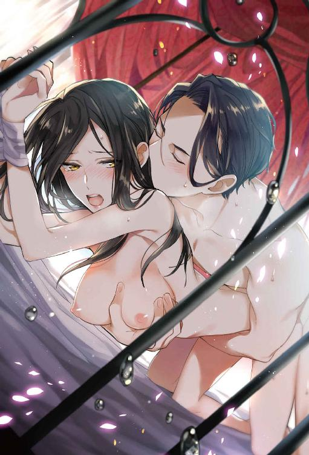
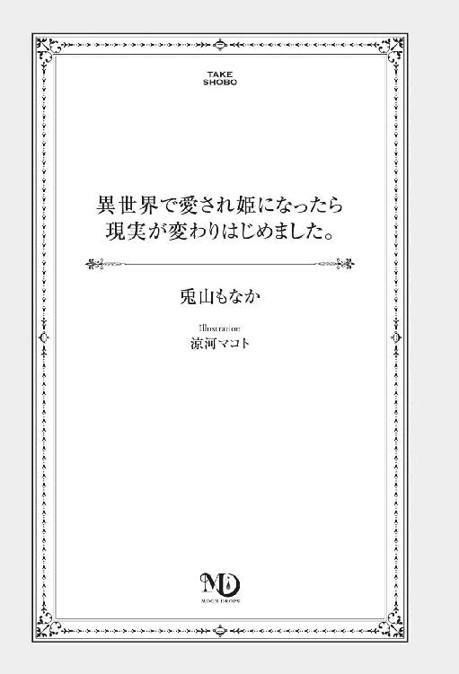
この作品は縦書きでレイアウトされています。
また、ご覧になる機種により、表示の差異が認められることがあります。
一部の漢字が簡略字で表示されていることがあります。
異世界で愛され姫になったら現実が変わりはじめました。
Contents
１． 落武者黒江の陰々滅々な一日
落武者黒江の陰々滅々な一日
眠っている間に見る夢には自分の願望が表れるものらしい。
それなら、普段まったく夢を見ない私には、何も願いがないということになるんだろうか？
＊
あっ、と思わず声を出しそうになった。お尻を撫でていった手に。足元から石化していくように体が硬直する。あまりの不快さに総毛立つ。
ぎゅうぎゅうに押し込められた満員電車の中で、私、黒江奈ノ花は痴漢にあっていた。こんなにすし詰め状態の車内だから、最初は何かがたまたま触れているだけなのかと思った。だけど今まさにヒップを撫でまわしている手は、明らかに意思を持っていて。
恐る恐る、ちらっと後ろを振り返る。意外なことに、そこには顔の整った若いサラリーマンが立っていた。いや、見た目で判断してはいけないんだけど......。え、あなたが？ と思ってつい目を丸くする。男は人の波に押されながらあっちに揺れ、こっちに揺れ。それでも確かに私のお尻を触っている。整った顔でニタァッと、下卑た笑顔を返された。──気持ち悪い。
声をあげようとして、それが喉のところでどうしても詰まってしまう。「痴漢！」と叫ぼうと、何度も何度も思うのに、音にならない。恥ずかしい。手で払っても余計にしつこくいやらしい触り方をされるばかりで、ねっとりと舐めるような手つきにヒッと小さく息を吞む。次の駅までは、まだしばらく。
じっとうつむいた。反応しなければ飽きるだろうかと思ったら、そんなことはなかった。私が抵抗のできない女だとわかると、男は段々、手の位置を下にずらしてくる。内腿に触れる。
「......っ！」
ショックだった。今まで他人に触れさせたことのない部位を、こんな風に触られて。バラバラに千切れそうなくらい、胸が痛い。
だけど同時にこうも思った。──これまで痴漢にあって、「助けて」と声を出せずに泣き寝入りした女性が、どれだけいるだろう？ 今私が黙って過ごせば、この男は必ず繰り返す。
顔を上げる。キッと後ろを睨みつける。私の下半身を撫でまわしていた男の腕を強く摑んだ。しっかりと。
「え」
「逃がしません」
まさか捕まるとは思っていなかったらしい男の顔は、みるみるうちに青ざめていく。様子がおかしいと察した周りの人たちが、至近距離で注目する。私は落ち着いた声を心がけて、事実を告げた。
「──痴漢です！ この人、私のお尻を触りました」
「何言っ......違っ」
周りの人たちは親切で、「なんだって？」「痴漢だと？」とざわめきながら、ジタバタともがく痴漢男を押さえつけてくれた。満員電車の中に逃げ場はない。「次の駅で駅員を呼ぼう」と誰かが言った。私はひどく狼狽した男を見下ろしながら、この人がもう二度と痴漢しようなんて気が起きないほど、懲らしめられればいいと思った。
「お姉さん、大丈夫？」
男を押さえつけていたうちの一人が私に声をかけてきた。制服を着ている。この辺りの高校生だろうか。
「......はい」
「胆が据わってるね。さっきもあまりに毅然としてるから、本当に痴漢にあってるとは思わなかった」
「......」
「格好良かったよ。武士みたいで」
歳の割に落ち着いている彼は、そう褒めてくれた。
（......武士って）
小さく苦笑を返す。
「ありがとう」
満員電車だから、腰より下は誰にも見えない。
私の脚はガクガクと震えていた。
黒江奈ノ花は絶対に泣かない。泣いたら負けだと思っている。
痴漢男を警察に引き渡してから事情聴取を受けていると、会社には遅刻することになってしまった。気が重い体をなんとか動かして、社員証でオフィスのドアを開ける。
株式会社ノズワルドは、国内は勿論、海外でもそこそこ知名度の高い総合商社だ。人の暮らしに関わるさまざまな商品やサービスを取り扱い、事業領域は原料調達から小売りまでと幅広い。私はその中の〝繊維部門〟に属し、ファッションアパレル部の営業として、アパレルの素材提案や商品企画をしている。
ランチタイムが目前に迫った午前十一時。やっと自分のデスクに着く。
「殿様出勤？」
声のほうを振り向くと、斜め前の離れた席に座っている一つ上の先輩、三澤さんが、グロスたっぷりの唇をにんまりとさせて笑っていた。
あ、これは相手にする価値がないやつ。そう判断して、立ち上げたばかりのパソコンに視線を戻す。相手にする価値がない。わかっているのに、弁解する言葉が口から勝手に出てきた。
「......痴漢にあったんです。事情聴取を受けていたら遅れました」
「あら、そぉ。へぇ......。落武者が殿様出勤って、なんか笑える」
「......」
全然笑えませんが......。
痴漢にあったという部分には触れられなかった。きっと〝いい気味〟くらいにしか思ってないんだろうな。やっぱり相手にするべきじゃなかったと、後悔する。彼女は私のことを〝落武者〟と呼んだ。落武者黒江というのが、ここ数年の私のあだ名だ。
起動したパソコンにパスワードを打ち込んで、デスクトップが表示される。壁紙は実家のぶさ可愛い猫。名前はムタさん。家の縁側で、母の膝の上で気持ちよさそうに伸びをしている。パソコンを立ち上げるたびに目にするその姿に少し癒された。
社内のイントラネットを立ち上げている間にデスクの整理整頓を行う......フリをして、何か悪戯をされていないか確認する。ついこの間は足元にごみ箱の中身が撒き散らされていた。ごそごそとデスクの下も探ってみる。今日は何もなさそうだ。
もうずっと長い間、嫌がらせを受けている。入社二年目の中頃くらいからだ。任せてもらえる仕事が増えてきて、営業にも一人で行かせてもらえるようになってきた頃、「ダメ元でいいから新規営業にいってこい」と上司に言われた。場数を踏むことが大事だからと二～三年目の若手全員に下されたそのお達し。すごい成果を期待されていたわけではなかっただろうし、「小口でも決めてこられたらでかしたもの」くらいの期待値だったんだろう。
だけど、飛び込み営業をした先の社長はとても良い人で。新人の私の話を熱心に聞いてくれた。そして思った以上に、彼の会社は大きかった。ＢｔｏＢだから世間的には有名でこそなかったけれど、社長はその場で年間二億の契約を決めてくれた。会社はその功労者として私を持ち上げてくれて、当時の私は今では信じられないほどちやほやされていたと思う。
ただのラッキーだとわかっていたけど、褒められれば嬉しかった。仕事って楽しい。もっと頑張ろう。素直にそう思うくらいには、嬉しかった。
でも、そんな気持ちは長く続かなかった。たった一度まぐれで成果をあげたことで、年次の近い同僚からは妬まれ、嫌がらせが始まった。今の三澤さんだけじゃない。あの当時、私と同じように新規営業に行って、小口の契約を決めても私と比較され褒められなかった同僚たちは、こぞって私のことを目の敵にした。
それから四年が経って、私は営業六年目になった。周囲から何かと足を引っ張られ、仕事で大きな成果をあげることもできず。上司も私への当初の期待はとっくになくしている。
ついたあだ名は〝落武者黒江〟。
午前中の仕事の遅れを取り戻すため、私は無心で手を動かした。昼食を後回しにして提案書を作る。総務部にいる同期の石田佳乃には、〝今日は立て込んでるから先にお昼食べてて〟とメッセージを入れておいた。
新人のときの飛び込み営業でお世話になった株式会社ＡＹＵＺＡＷＡユニフォームの鮎沢社長は、今もうちの会社と取引を続けてくれている。〝ヘマをして大口契約をなくしてはいけないから〟と、私はメイン担当からははずされてしまい、今は補佐として日々の資料作成や提案準備を手伝っている。提案のときは先輩の隣で黙って控えているだけだけど、質問するとき社長が私の目を見てくれるから、それで少し気が晴れていた。社長だけは、私がやった仕事だときちんとわかってくれている。
資料の完成まであと少し。だけど、一時過ぎ頃になると段々空腹が気になって作業に集中できなくなってきた。昼食を抜くのはやっぱりよくない。私はバッグの中から財布だけを取り出し、席を立つ。
午後からの作業のことを考えても、あまりここで時間をかけたくない。一瞬、会社の近くにある定食屋を思い浮かべたが、あそこもまだこの時間は混んでいるだろう。コンビニかぁ......と妥協しながら、エレベーターホールへ向かう。
「黒江がさ」
不意に、自分の名前が聞こえてきた。誰かに話しかけられたのかと思って辺りを見回したけれど、そうじゃなかった。声はエレベーターホールまでの廊下の途中、喫煙スペースから聞こえている。
「聞いた？ 今朝痴漢にあったって」
「え？ 黒江に痴漢......？ ......えぇーっ、触るかなぁ」
同じ課の、同期の男二人の声だった。
またか......と眉をひそめて、私はその場に足を止めてしまう。廊下に人がいないのをいいことに、すっと息を潜めて立ち聞きしてしまう。やめておけばいいのに。
「ああいう気の強そうなのがいいって男もいるんじゃねぇ？」
「いやぁ、ないない。どうせ顔が見えてなかったんだろ。だって、可愛げゼロだぞ。三澤さんに嫌がらせされても能面みてぇに眉ひとつ動かさねぇの」
「さすが武士」
「泣くくらいすれば、まだ味方もいそうなのになー」
泣くわけがないでしょう。
心の中でだけ反論して、エレベーターホールに足を進めた。
泣くわけがない。私が泣けば胸がスカッとする人はいるんだろう。でもどうして、そんな人のために、涙を流さなければいけないのか。泣くのは完全に負けたときだけ。絶対に屈しちゃいけないと思う。
普通に仕事をしていても、みんなが陰で自分のことを笑っている気がするときがある。絶対に泣かないけど、まったく平気なわけでもない。自分の心はそんなに強くできていないと自覚している。今朝の痴漢だって、どうにか声を絞り出せただけで本当は怖くてたまらなかった。その後の事情聴取も、触られた事実を自分の口で説明させられるのは恥ずかしくて、情けなくて。出社する頃にはすっかり疲弊しきっていたのに、そこに先輩の小言。同期の陰口。いろいろ重なってもう、今日はボロボロだ。
こういうときは一旦心を休めたほうがいい。私はオフィスビルの中にあるコンビニに寄った後、自分のデスクには戻らずに、重たい扉の奥にある非常階段を目指した。
あの人がいればいいな......と、ほんの少し期待で胸の中を甘くしながら。
非常階段は建物の外にある。勢いよく下りれば、ガン、ガン、と足音が反響する赤茶色の階段。ビル風が吹き荒ぶせいで寒いということもあり、社員はほとんど寄り付かない。私は黒のカーディガンをしっかり着込み、外に出てゆっくり階段を下りていく。
一階分移動したところで、いつもの踊り場に後ろ姿が見えた。視界にベージュのコートの端を捉えただけで、私の心は浮足立つ。その人は柵に寄りかかって、オフィス街の景色に向けて煙を吐き出している。声をかけるよりも先に彼が振り返った。
「黒江か」
その人──私が所属するファッションアパレル部の隣、ブランドマーケティング部の営業部長、和久蓮司は、吸っていた煙草を口から離して私の名前を呼んだ。和久さんはいつからここにいるのか、社内だというのにスプリングコートをしっかり着込んで一服していた。
「邪魔でしょうか」
彼がいればいいなと思ってここに来たくせに、私は一応殊勝なことを言ってみる。彼が自分を邪険にしないとわかった上で。
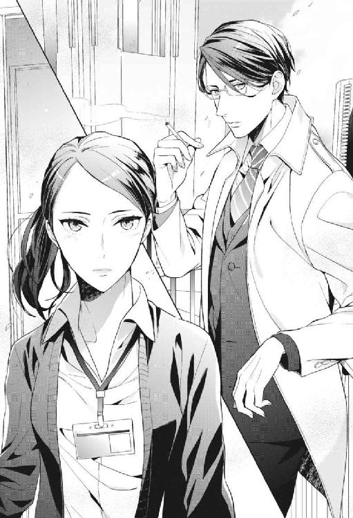
少し長めの、表情を読みづらくしている前髪。無機質なメタルフレームの眼鏡にシャープな顔立ち。顔が整っているから冷たく見えてしまうってこともあるんだと、私はこの人で初めて知った。本当はまったく冷たくなんかない。
「いや、別に邪魔じゃない」
「では失礼しますね」
そんないつも通りのやり取りで、私は彼の背中を見つめながら階段に腰かける。先ほどコンビニで買ったみたらし団子を取り出す。
「きみは、またそんな......好きだな、みたらし」
「和久さんの煙草好きほどではないですよ」
「別に好きなわけじゃない」
「落ち着くんでしたっけ？ こんな寒いところで吸わないで、喫煙所で吸えばいいのに」
「この話前にもしなかったか？」
彼はムッとした顔で。フーッ、と長く煙を吐き出してから、ぽそりとこぼす。
「......俺が喫煙所で吸ったら、他の奴の気が休まらないだろう」
ブランドマーケティング部のトップは、最年少の営業部長。三十三歳という異例の早さで昇進した和久さんは、相手の年齢や性別を問わず雷を落とす。仕事で彼の逆鱗に触れれば左遷され、女性社員は泣きじゃくって嗚咽が止まらなくなるまで叱りつけられるという。まだ部長になって間もないというのに、辞めさせた社員の数は両手を超える。ついたあだ名は〝王様〟。
私の〝落武者〟に比べれば格好良いあだ名だと思うが、そういう問題でもない。元から愛想がいいわけではなかったけれど、彼が人に厳しくなったのは部長職に就いてからのことだ。
彼は知っている。最年少で部長になってしまった自分が、ご機嫌伺いをしながら部下に仕事を頼んでも、誰もついてきてくれないということを。容赦なく人を切れるイメージこそが、いざというとき部下を守れる力になることを。与えられた役職をまっとうするために、彼は嫌われ役を演じているのだ。
私は口の中のみたらし団子を飲み込んでから返事をした。
「なるほど。部長なりの、部下へのお気遣いですね」
「黒江、馬鹿にしてる？」
「いいえ、尊敬してますよ」
煙草を吸い終えた和久さんは吸殻を携帯灰皿に落とした。もう仕事に戻るらしい。
「きみこそ、もっと暖かいところで食べればいいのに」
「昼食くらい嫌味言われずに落ち着いて食べたいじゃないですか」
「苦労するなお互い......。っていうか、それが昼飯？」
「えぇ。これを食べ終わったら戻ります」
「あぁそう......」
頷くと彼は、着ていたスプリングコートを脱ぎ始めた。
「......え？ あ、いや、いいです。貸していただかなくて」
「さっきからガタガタ震えてるくせに。着てていいから、早く戻れよ」
そう言って、コートを私の肩に掛けてくれる。ふわっと、優しくて清潔な香りが立ち込める。
「忘れ物とかなんとか、後で適当に理由つけて席に置いといて」
「......ありがとうございます」
ずるいなぁ。
階段を上っていく落ち着いた足音を名残惜しい気持ちで聞きながら、思う。ほんとはこんなに優しい人だということを、私しか知らない。社員から恐れられる和久部長と、疎まれる私。嫌われ者同士な私たちは、たまたまこの非常階段の踊り場でよく顔を合わせるようになった。
彼は私に好意をもたれていることに気付いていない。それは当然で、私は一度も、ほんの少しも自分の気持ちを言葉にしたことがなかった。
結構好きなんですけど。言ってしまえば、大好きなんですけど。彼はこの気持ちを知りようがない。私も、この先伝える気はない。──ただ思う。
優しくて損ばかりしているあの人の毎日が、少しでも幸せなものでありますように。
みたらし団子が入っていたプラスチックパックをコンビニの袋に入れて、給湯室のごみ箱に捨てた。私はオフィスに戻って、和久さんのコートを彼のデスクに置く。ボードを見ると『外出』になっていた。......コート、必要だったんじゃ。
軽く辺りを見回しても、誰も私のことを気にしていなかった。コートを借りたくらいで浮いた噂は立ちそうにもない。そのことにほっとしたし、一方で少し残念な気もするし。自分の意外と乙女な思考に寒い気持ちになりながら、席に戻る。
私が所属している部署は、外出やら打ち合わせやらで人が出払っていた。残っていたのは先輩の三澤さんだけ。私が自分のデスクに戻ってきた瞬間、離れた席で彼女がニヤッとした気がした。嫌な予感。なんだろう......と思ってデスクの上を見ると、パソコンの画面がブラックアウトしていた。マウスを触ってみる。動かない。電源が切れている。私、パソコン消して出たっけ？
（......あぁっ！）
資料！ 作ってる途中だったのに......！
昼食に立つ寸前まで作っていた提案書のことを思い出す。出社してから二時間ちょっとを費やして作成した資料を私は......保存した覚えが、ない。絶望的な気持ちでパソコンを再起動する。デスクトップもフォルダも確認したけれど、提案書は跡形もなく消えてなくなっていた。
三澤さんの、たった今私がいることに気付いたようなわざとらしい声が響く。
「あー黒江さん、いたんだ？ パソコン、消し忘れだと思ったから電源落としちゃった～」
「え......」
「ごめんね？」
「......」
今度席を離れるときには絶対に保存しよう。悪いのは百パーセント三澤さんだけど、嫌がらせされることを知っていて放置していた私も迂闊だった。......とりあえず。
痛くも痒くもない顔でまっすぐ彼女を見た。
「わざわざありがとうございます」
舌打ちするのが聞こえてきて、それでやっと私は少し溜飲を下げる。
きっとこんな態度を取るから、いつまで経っても嫌がらせは終わらないんだ。わかっているのに、私は四年もこの状況を変えられずにいる。自分でも厄介に思うほど負けず嫌いだ。
二時間ちょっとで作れたはずの資料は、やり直しだと思った途端に気が重くてなかなか作業が進まなかった。また一から資料を見て、数字を拾っていかなければならない。
そうしてやり直しには結局三時間ちょっとかかってしまって、その後はレギュラー業務。溜めてしまっていた請求書作業に、素材メーカーへの支払い処理。意外と事務作業の多い営業の中で、私は他の社員よりも帰りが遅くなりがちだった。周りに足を引っ張られて、というのもあるが、それだけじゃない。最近特に仕事が思うように進まない。例えばアパレル会社との少し複雑な契約書ひとつにしても、法務部長のところへ行けば「経理部長に聞け」と言われ、経理部長のところへ行けば「そんなもの法務に確認しろ」と言われてたらい回しにされてしまうのだ。
──今日は本当に、本当に散々だった。
夜の十時。フロアの照明が一斉に消え、私は自分のデスクを立った。十時になると自動で消えてしまう照明は、わざわざ廊下に出て、少し離れた場所にあるパネルを操作して手動で点けなければならない。そしてこの作業は、いつの間にか私の仕事になっている。
（......疲れた）
先ほど今日中の処理が必要だったメールを送り終えたから、これで帰れる。今日はもう、録り溜めたドラマを消化するのは我慢して、さっさと眠ってしまおう......。
照明を点けて執務スペースに戻ると、オフィスは静まり返っていた。自分を除いて誰もいなくなっている。そんな中、パソコンのファンが回る音がして。気配を辿ると、そこは部長席だった。
（......和久さん、まだ残ってるんだ）
ディスプレイにはスクリーンセーバーが流れている。椅子には昼間に自分が掛けたスプリングコートとスーツのジャケットが掛かっていた。さっきコートを返しにきたときにはジャケットはなかったから、外出から戻ってきたらしい。ここにいないということは、別の部署の人と打ち合わせでもしているんだろう。
何気なく、掛けてあったジャケットに触れる。手に取る。そこで、〝あれ、こんなことしていいんだっけ？〟と一瞬思った自分を、無理やり黙らせる。
私はそのジャケットを抱きしめていた。
「......」
非常階段で肩に掛けてもらったスプリングコートよりも、もっと彼に近い内側。顔を埋めて、さっきよりも強く清潔な香りを感じ取る。ぎゅっと強く抱きしめる。
皺になってしまう。化粧がついてしまう。でも止められなかった。
（......好き）
大好き。ためらいがちに微笑まれると死んでしまいそうになる。あの声で名前を呼ばれると、頭のてっぺんから足の爪先までが反応する。体が全焼するかと思うほど熱くなる。──あなたを憂鬱にさせるものなんて、この世から全部消えてしまえばいい。そう思うくらいに好きだった。
自分でも驚くほどの激情を、私は隠し持っている。
伝える勇気もないくせに。
そのときガタッと物音がして。
反射的に私は、ジャケットを自分の体から離した。振り返ると部屋の入り口に和久さんが立っていた。驚きでただ目を丸くしている。
「......あ......」
「......えっと。......黒江？」
──見られた。
「お疲れ様です」
私はそっと、ジャケットを綺麗に彼の椅子に掛け直す。
「......お疲れ。あの、黒江......今のは」
「私、もう帰るところなんです。和久部長、最後出るときは、セキュリティーロックお願いしますね」
「あぁうん、わかった。......いや。そうじゃなくて」
和久さんは目に見えて動揺していた。動揺しつつも、今しがたの私の奇行について問いただそうとしていた。なかなか勇気ありますね......。でも、そうはさせない。
「お疲れ様でした」
キリッ、と有無を言わせぬ気迫を纏って挨拶をする。一瞬彼が押された隙に、さっとオフィスを後にした。一歩部屋を出たら────猛ダッシュだ。
「......みっ」
もう絶対にここまでは追ってこられない。......そう確信した途端に。
「みっ......み、みみっ............見られたああぁっっっ！！！」
私は絶叫した。
家に帰るまで私は無駄に走った。何かしてエネルギーを発散しなければ、悶絶してうっかり死にたい気持ちになってしまう。事実私がしでかしたのは、切腹ものの大失態だった。
一人暮らしのマンションに帰り着くとドタドタと廊下を走って、バッグをソファの上に投げた。中身がちょっと飛び出てしまったけれど気にする余裕もない。洗面所に駆け込み、鏡を見た。──ひどい顔をしている。顔を真っ赤にして唇をんっと横に結び、あまりの羞恥心に目が潤んでいた。こんなに後悔するならやらなきゃよかったのに！
あのとき欲望に従ってスーツを抱きしめた自分を、心の中でボロクソになじりながら、クレンジングでごしごしと化粧を落とす。擦るのは肌によくないことは知っている。ただ、今は余裕がない。そのまま洗顔をして、タオルで雑に水気を取る。歯を磨く。化粧水をつける。そのままブラウスとスカートを洗濯カゴへと脱ぎ捨てて、リビングへ戻り、下着とキャミソール姿でベッドにダイブした。
眠るしかない。
一夜明けたら、全部夢ってことになってるかもしれない。
和久さんの丸く狼狽えた目を思い出す。彼は知らなかったのだ。私の気持ちなんて。それが、突然自分のジャケットを抱きしめて匂いを嗅いでいるところを見てしまったらどんな気持ちになるか............あぁぁぁッ、死にたいッ！
伝える気なんてなかったのに、こんな形で知られてしまうなんて。本当に、なんて一日......。
その夜私は、本当に何年ぶりかわからないほど久しぶりに泣きながら、眠りについた。
・・・
夢を見るのは眠りが浅いかららしい。私は眠りが深いのか、普段まったく夢を見ない。本当は見ているのかもしれないけれど、起きて〝何か夢を見た気がする〟ということが一切ない。
この日もそうだった。私は自分に降り注ぐ朝日のまぶしさに、んんっ、と顔をしかめて覚醒していく。ぼんやりとした視界。いつもと変わらない朝だ。まぶしくてぎゅっと目を閉じた。
和久さんのジャケットを抱きしめているところを目撃されてしまったのは夢......ではないなぁ。あの驚愕の眼差しも、抱きしめたスーツの香りも。鮮明に思い出されて、うんざりするほど現実だった。つらい。......会社、行きたくないなぁ......。
どうしようもないことを思いながら、ごろんと寝返りを打つ。けれど、何か柔らかい壁に阻まれたように、私は思った方向へ転がりきることができなかった。
「......ん？」
自分の行く手を阻んだものは何か、確かめようと目を開く。見えたのは肌色。ぼやける視点の焦点を合わせると、それは人間の腕だとわかった。太くて、血管が浮いていて逞しい、男の人の腕。......男の人の腕？
「え？」
そこでぱちっと目が覚めて、腕が伸びている体を辿る。視線は自分の真上に行き着いて、男が私の上に覆い被さっていた。その顔は。
「..................和久さん？」
眼鏡をしていない。だけど、涼しげな目もと、シャープな顔立ち、少し冷たい印象の表情は、どう見ても和久さんの顔だった。和久さんが、私の上に覆い被さっている。裸で。............裸で！！？
「なっ！ なんっ......なん、で」
狼狽して声が上擦った。慌てて布団を自分のほうへ引き寄せる。顔を隠す。だけど見てしまう。和久さんの何も纏っていない胸元。......裸！ 見てはいけないと思いつつ、見てしまう。普段はワイシャツの下に隠れているはずのがっしりとした胸板。幅広な肩。......乳首。そこに目がいってしまう自分を絞め殺したい。
私がこんなに混乱しているというの、彼といったら冷静で。屈んで顔を近づけてくる。
「......〝なんで〟？ こうすることに理由がいるのか？ お前と俺の間に」
「......えぇぇっ!?」
つい素っ頓狂な声が出た。何を言っているんだこの人は......！
「り、理由もっ、何もっ......」
「焦らすな、クロエ」
「やっ......あっ」
すりっ、と首筋に頰擦りされる。その感触とぬくい体温に、ふる、と顔が震える。困ったことに、それはとても心地良かった。
何が起こっているのかさっぱりわからない。
「......ん。焦らす......って......？」
そこで私はおかしなことに気付いた。自分のほうに引き寄せている布団が、自分の部屋の花柄のものとは違う。ふかふかで真っ白だ。おまけに天井も、私の部屋とは似ても似つかないほど高い。......私の部屋じゃない？
「......あ、の」
──何が起こっているの？
目覚めて少し経ったけれど、混乱は大きくなるばかりだった。真上にのしかかる和久さんは私の声に反応して、首筋から顔を上げてくる。至近距離で目が合う。
「......クロエ」
せつなそうに名前を呼ばれて。胸が苦しくなる。だけど彼の次の一言で、そんな甘い気持ちも吹き飛んでしまった。
「なぁ......もう挿れてもいいか？」
「は」
いれる？ 何を？ どこに？
「コレ。さっきからもう、限界なんだが」
そう言って彼が、グイグイと私のお腹に押し付けてきたソレは......疑うまでもなく。
「いっ......イヤぁっ！ な、なにっ......何してるんですかッ！ 馬鹿!!」
あっ、馬鹿って言っちゃった！ 部長相手に！
一瞬〝しまった〟と思ったけれど、どう考えても今の状況のほうが〝しまった〟状況になっている。これ、普通に二百パーセント、セクハラで訴えられちゃうやつです！
冷静な顔なんてとても作っていられなくて、私は喚いていた。けれど彼はまったく臆する様子がない。
「まだ焦らすのか......。そうまでするからには、さぞ楽しませてくれるんだろうな」
「楽しませるって......あぁっ、ん......。っ、やめて！ 押し付けてこないでください！」
和久さんが躊躇なくお腹に押し付けてくるソレは、正体はわかっているけれど、想像よりも硬く大きくて信じがたい......。布越しでも、ぴとりとくっつけた状態で腰を揺すられるとゾワゾワして、妙な気分になった。
「はっ、あぁッ......」
「なぁ......いいだろ、もう」
そう尋ねながら和久さんは、ハァッと熱い息を漏らす。興奮しているのだとわかった。私はそれが恥ずかしくて、恥ずかしいけど目をそらせなくて。初めて見る表情に釘付けになる。
遅れて、彼が〝もういい？〟とねだってきている意味を考えて......いいわけあるか！ と正気を取り戻した。
「いいわけがないでしょう......！ 普通にダメですよ！」
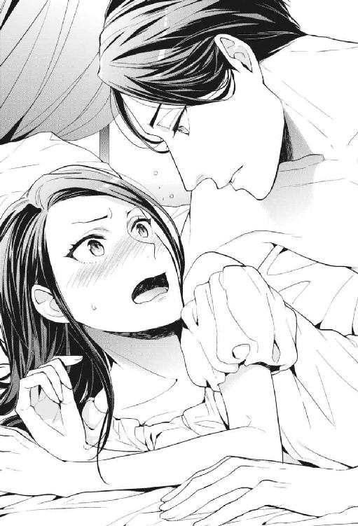
「どうして？」
「どうして、って......そもそも私たち、そんなっ......」
そんな関係じゃあない──そう言うつもりだった。言えなかったのは、先に彼が私の唇をキスで塞いだからだ。目を見開いた。ぬる、と入ってきた舌の感触にビクッと体を震わせて、だけど口を開いてしまった。
「......んんっ」
混乱よりも陶酔が勝っていた。和久さんとキスをしている......そう自覚するだけで、胸の中が甘く満ちる。どんな状況でも、彼を好きだと思う気持ちは変わらない。
「んむ......ん、んはぁっ......」
甘く舌を吸い上げられる。こんなキスをするんだと、頭の奥が熱くなる。
熱い吐息のまま耳に唇を寄せて、抑えた声で。彼はまたとんでもないことを言った。
「......抱くことになんの問題がある」
「んっ......問題だらけでしょう......」
「どうして？ お前と俺の間には、別に......何も問題がない。お前は俺の、妻になるんだから」
「............妻？」
「焦らしすぎだ。いい加減にグレンと呼べ、クロエ」
（..................グレンって、誰？）
和久部長に、いつものように「黒江」と苗字で呼ばれながら。なぜか眼鏡をはずし、裸で襲ってくる彼の顔をグイグイと押しのけながら──私は思った。
あぁ、これが夢ってやつか。
初めて見た。
２．婚約者クロエの豪華絢爛な一日
「クロエ、こらっ......このっ、いい加減にしないか！」
貞操の危機を感じ、必死に両手で彼の顔を押し返していた私。ついにキレられた。
「すっ、すみません......」
思わず謝ってしまった。やむなくとはいえ、上司の顔面にこんな無遠慮に触れていいものかと後ろめたくなっていたから。......いや、でも！ これは立派なセクハラなはず！
いくら好意を寄せている相手でも、道理に合わないことは合わない。言うべきことははっきり言わなくちゃ......。そう思って、まだ自分の上を陣取っている彼を強く睨み付けた。
「......なんだ、その目は」
「いい加減にしてください、和久さん！ なんの冗談ですか、こんなっ......」
「──なんの冗談？」
「っ」
ヒュッ、と自分の喉が鳴る。一瞬息を止めてしまったのだ。目の前にある端正な顔が──あまりに冷たく、心臓をぎゅっと鷲摑むような鋭い目をしたから。
怖い、と本能的に恐れてしまう鋭さだった。
「なんの冗談、とは......こっちが訊きたいな、クロエ。さっきからお前は俺を拒むばかりか......名前もろくに呼ぼうとしない」
「っ......」
グッ、と強い力で顎を持ち上げられた。気道が狭まり一気に呼吸がしづらくなる。間近にあるのは人の命を平気で奪いかねない冷徹な瞳。
彼は温度のない声で言う。
「呼んでみろ」
......何を言っているの？
名前なら呼んでいる。さっきから〝和久さん〟と呼びかけている。だけど彼は一向に反応しないし、ずっと「名前を呼べ」と怒っている。ここでもう一度〝和久さん〟と呼んでしまったら、ただでは済まない気がした。どうしよう。......そういえばさっき、「グレンと呼べ」とか、なんとか。
一か八かで発音してみる。反応を窺いながら、慎重に。
「............グレン？」
すると彼は、ふ、と空気を和らげて、私の顎から手をはずした。呼吸が楽になる。体の中に酸素が入っていく感覚に、ほっと胸を撫で下ろした。
「そうだ。......なんだ、ちゃんと呼べるじゃないか」
......いや、和久さんですよね？
さっきの、人に圧力をかけるような冷たい眼差しは、いつも彼が仕事で部下を咎めるときのそれだった。そして今、ふっと空気を和らげたときの一瞬の表情は、いつも私と非常階段で話すときの和久さんの表情だった。
なんなんですか一体......。どうしても腑に落ちないけど、また気道を奪われてはかなわないので黙っているしかない。
名前を呼ばれたことで少し機嫌がよくなった彼は、またいそいそと私の服を脱がそうと......って、なぜ！ なぜ脱がす!!
「だっ......ダメだと言っているでしょう！」
結局私はまた手を出していた。迫ってくる上司の顔をムギュムギュと押し返す。上下関係も何もあったものじゃない。
けれど女の私がそういつまでも、腕力で彼を防ぎきれるはずもなく。程なくして両腕を片手でまとめられ、絶体絶命のピンチになった。──あ、ダメだこれ！ 食われてしまうやつ！
「覚悟しろクロエ。......天国を見せてやる」
彼は甘く妖艶に笑って、私の手首を押さえつけたまま首筋を食んでくる。
「ンンッ」
......あー、やばい。やばいぞこれは。何がやばいって、和久さんの声と顔で「天国を見せてやる」なんて。なにそれ！ 格好良すぎます......！
惚れた弱み全開でときめいてしまっているけど、どう考えても今の状況のほうがやばかった。このままでは私、確実にこの人に純潔を奪われてしまう。この歳になるまで大事に守ってきた処女を......いや。もうとっくに、大事に取っておくようなものではないのだけど......。
だけど、絶対に正気ではない状態の和久さんに奪われてしまうのは、いかがなものか。この人は、和久さんの見た目をしているだけで正体はまったく別物なのかもしれない。......いや、でも。この先和久さんに抱いてもらえるチャンスなどあるだろうか？ ない。あるはずがない。だったら記念だと思ってここで一回......いやいや。っていうかそもそも、これは夢だし？
自分の中で結論が出せずにいるうちに、彼は着々と準備を進めていた。欲情に濡れた熱い息を漏らしながら、私の下穿きに手を掛ける。
「はぁっ......早く、入りたい......」
「あッ......」
いやらしい声で囁かれて、一気に体温が上がる。さっきも散々卑猥な言葉を言われていたような気がするけど、我慢に我慢を重ねたらしい彼の声はさっきよりも切実で。私は求められていることを全身で感じてしまって。輪をかけて具合の悪いことに、それは和久さんの声で。
濡れてしまったのが自分でもわかった。
「クロエ......」
好きな人に求められるって、こんな感じなんだ......。
私は初めての感覚に全身が痺れて、なんとも言えない気持ちになる。恥ずかしくて照れくさくて、でもそれを飲み込むほどの幸福感。こんなときだというのに、私は本当に和久さんが好きなんだとあらためて自覚してしまった。......そして自覚してしまったがゆえに。
（......あぁ、ダメです。和久さん。......私）
......たとえ夢でもあなたのこと、汚したりなんかできません!!
「やめてくださいッッ！！！！」
お腹の底から声を絞り出した。普段大声を出すことに慣れていない私のフルボリューム。思った以上に大きな声が出て自分自身がびっくりした。和久さんも勿論びっくりしていて、うるさそうに眉を寄せてから、目を丸くした。
それからぽつりと。
「......そんなに？ どうしても嫌か？」
一瞬、子どもみたいに寂しそうな表情を見せた。さっきの怖い顔から一変したその表情に、たじろぐ。だけどダメなものはダメと言わなくちゃ。
「嫌です。どうしても無理やり抱くと言うのなら......このまま、舌を嚙み切って死にます」
「えっ......」
真上にいた彼は明らかに狼狽えた。死ぬのは困る、と思うくらいには大事に思ってくれているらしい。私が鬼気迫って、じっ、と見つめると、グレンと名乗る彼は渋々といった表情で私の上から降りた。
「......」
威嚇するように彼を見つめたまま、ゆっくりと体を起こす。そのままどうにか私はベッドの中から脱出することに成功する。
ベッドから出てみてわかったことがある。やっぱりここは私の部屋ではない。三歩歩けば大抵のものに手が届く私の部屋とは違い、今いる部屋はぐるっと見回して、壁にタッチするのに大股で五、六歩は必要そうだった。それに、美しい模様の絨毯。家具はアンティークだろうか？ 模造品？ 歴史を感じさせる深みのある色をしている。壁に掛けられた花の絵画も、素敵、と思ったけど、私にこんなのを飾る趣味はない。......ここは誰の部屋？
「つまらん。興醒めだ」
和久部長によく似た彼はベッドから降り、シーツを身に纏って裸体を隠しながら立ち上がった。すっかりご機嫌斜めになっている。けれどここには彼しかいないので、仕方なく問いかけた。
「あの......ここは、誰の部屋なんでしょうか」
「は？」
「私、目が覚めたらもうそのベッドの上にいたんですけど。この部屋は一体、誰の......」
「自分の部屋も忘れたのか」
「......自分の部屋？」
またおかしなことを仰る。こんな豪華な部屋が、私のものなわけがない。
それに〝自分の部屋も忘れたのか〟って。そんなこと言うならあなたは、自分の名前も忘れたのですか。......なんて、どうせ夢なんだから、いろんなことがあやふやなんだろうけど。はー、やれやれ。なんだか疲れてきた。
首を回す私に、彼は怪訝そうな顔を向けてくる。
「......クロエ、これはなんの遊びだ？ ここは、次期王の婚約者に与えられた部屋だぞ」
「は？」
次期王？ 婚約者？
「つまり俺の妻になる、お前だ、クロエ。お前の部屋だろう」
「妻！」
そういえば、さっきもこの男は言っていた。〝もうすぐ妻になるのだから〟と。
思い出して今度は私のほうが狼狽える。
「な......なりませんよ！ 妻なんて！」
「なんだって!?」
激昂する和久さん（に似た男）の大きな声に慄く。だけど、急に妻とか言われても......！ 展開が早すぎてついていけません！
私が妻にならないということは彼にとって大問題だったようで、せっかく解放されていたのにまた強く腕を摑まれた。
「痛っ......放してください！」
「なるんだよ。お前はもうとっくに、俺のものだ」
「っ」
和久さんの顔でそんなこと言うの、やめてほしい。ときめいてしまう。
だけどそんなこと言ってられないから、悩んだ末にもう一度言った。
「......舌を」
「......」
「嚙み切って、死にます......」
言うとそろりと腕が離れていく。助かったと思う反面、チクりと胸が痛む。ちらりと覗き見た顔は明らかに傷ついていて。
「......どうしてそんなに嫌がるんだ」
「......」
私は今まで喜んでいたんだろうか？ 今さっき目覚めるよりも前からこの世界は続いていて、その私には彼の妻になる気があった？ 抱き合っていたんだろうか。この彼と、このベッドで。
夢の中のことを深く考えても仕方ない。だけど和久さんによく似た顔で寂しそうにされると、胸が苦しくなってしまう。
「......もういい、湯でも浴びて目を覚ましてこい」
彼はそう言って部屋の入り口まで歩いていき、ドアを開け放つと声をあげた。
「カノ！ 湯浴みだ！」
「えっ」
彼が叫ぶと、部屋に入ってきたのは、恭しく頭を下げたメイド服姿の女性たち。私はぎょっと目を剝いた。......ずっと外に控えていたの？
「な......な、何......」
ここは何かの屋敷......!?
そういえばさっき、彼は〝次期王の婚約者〟がどうとか......。広い部屋だなーとは思っていたけど、メイドさんまでいるのか......。
クラシカルなロングのメイド服に身を包んだ女性陣の登場に圧倒されて、私はその場に立ったまま、ぽかんと口を開けていた。あっという間に取り囲まれる。──更に〝えっ〟と動揺した。私の目の前に現れた三人のメイド。その中に、よく知る顔を見つけたから。
「かっ......佳乃？」
「えぇ、カノでございますよ、クロエ様。さぁ湯浴みに参りましょう」
ふわふわの髪を、今はボンネットの中にひっつめているけれど。その人懐こい笑顔は間違いなく、総務部にいる私の同期、石田佳乃だった。
湯浴みだと言って連れてこられた大浴場。お風呂に入らせてくれるというから「それはまぁ......嬉しいかも」と釣られてついてきてしまった。私はいつ纏ったのか、寝巻きと思しき白レースのワンピースを着ていた。誰の趣味だろう......。
とりあえず、お湯に浸かって冷静に事態を把握しようと思った。彼女たちが脱衣場を出ていったら服を脱ごうと、手持無沙汰でみんなの退室を待っている。だけどいつまで待っても、メイド服姿の面々は一向に立ち去ろうとしない。
「あの......脱ぐから向こうに」
「何を仰いますか。あ！ いけませんご自分でされては......！ お手伝いしますから」
「やっ、ちょっ......」
カノが私のワンピースの裾に手を掛け、背後ではもう一人の女性が私の髪をまとめにかかる。こっちの人もなんか見覚えがあるなと思ったら......受付のお姉さんだ！ 応接室を使う用事が少ない私は、あまり接点がないけれど。上品な笑顔とセクシーな口元のホクロで、間違いないと思った。さすが私の夢。知っている人ばかり出てくる。......じゃなくて！
「じっ......自分でするから、いいです！ 脱がせないで！」
捲りあげられるワンピースの裾を必死で押さえて阻止していると、カノは困ったように笑う。この笑い方は彼女独特のものだ。
「クロエ様。私どもから仕事を奪わないでくださいませ。着脱も勿論、体の隅々まで私どもが綺麗にいたしますわ」
「そもそも、クロエ様に汚いところなどありませんけど」
あなたたち私の体の何を知っているんですか......！
言いようのない羞恥心に襲われる。ここで丸裸にされるなんて冗談じゃなかった。私はまた大きな声を絞り出して、叫ぶことになる。
「おっ......お願いだから一人で入らせて!!」
なかなか譲らなかった彼女たちを脱衣場から追い出し、やっと一人になる。周りに誰もいないことを念入りに確認して、私は裸になった。ここまできたら、お風呂には入りたい。
浴場に続くドアをゆっくり押し開けると、中の空間は想像以上に広く、天窓から射し込む光でキラキラとしていた。古代ローマを思わせる円柱が壁際に立ち並ぶ。白を基調としたタイルに水瓶。中央に広く設けられた円形の浴槽。一瞬、たまに利用する有名なスーパー銭湯を思い浮かべたが、それよりもはるかに格式高かった。
ほけーっと見回しながら浴槽に歩みを進める。掛け湯をするための桶が見当たらない。ここではどうやって髪や体を洗うんだろう。もしかして、さっきの女性陣が石鹸とか持って入ることになっていたんだろうか。
仕方なく自分の両手でお湯を掬って、申し訳程度の掛け湯をして。浴槽に張られたお湯にちゃぷんと足を浸ける。
少し熱くて、肌がヒリつくくらいの温度。なにこれ。すごくリアル。
夢ってこんなに精緻なものなの......？ これまであまり夢を見てこなかった私は首を傾げた。あぁでもなんだか......心地いい。浮力に任せて腕を伸ばす。自分以外に誰もいないのをいいことに、完全にリラックスして体を浮かせた。なにこれすごい......。本当に疲れが取れていくみたい。
よくわからない世界にいるものの、これが夢だということを思い出せば冷静でいられた。どうやら私は現実が辛すぎて、こんな風にメイドさんに尽くされる身分になる夢を見ているらしい。ははぁ......。ものすごい現実逃避。同僚からの嫌がらせや陰口、うまくいかない仕事、あと......スーツを嗅いでいる現場を和久さんに見られた現実。それらを忘れたくて。
現実から逃げて、一体何になるんだろう。これは夢だから、覚めれば私は会社に行かなければいけないし、嫌いな同僚とも顔を合わす。うまくいかない仕事だってこなさなければいけないし、和久さんだって、ずっと避けてはいられないだろう。
「......んんん」
ずっぷりと湯に浸かって顔を半分まで沈める。ブクブクと泡を吐く。
（──それにしても）
私は、一人きりなのをいいことにひたすら考えていた。〝夢には自分の願望が表れるもの〟だと、何かで読んだのか、誰かから聞いたのか。そんな言葉を覚えている。
だとしたらこの世界は自分の願望なんだろうか。......あんな風にグイグイ迫ってくる和久さんが、私の願望？ いやいや。ないな。どう考えても現実の、紳士な和久さんのほうが好きだった。和久さんはあの男みたいに野蛮なことはきっとしない。
ちゃぷん、とお湯の中から手を出し、垂れてきていた髪を耳に掛ける。そのときに、ついさっき散々耳の中に注ぎ込まれた声を思い出した。
『なぁ......もういい？』
『天国を見せてやる』
思い出して、ムズッと下腹部が疼く。わけがわからないまま襲われそうになって、嫌で仕方なかったはずなのに。心に反して体は反応していたのだ。いつも私のことを「黒江」と呼ぶ低く柔らかな声で、強烈に欲しがる言葉をいくつも囁かれた。それはあまりに慣れないことだったから、ついドキドキしてしまったけれど。
──求められたいわけじゃない。そこまでのことを、和久さんに望んでいない。だからやっぱり、これは私の願望とは違うのだ。
「......ぷはぁ」
お湯から顔を浮かばせる。そろそろ上がらなくちゃのぼせそう。
現実から逃げたって何にもならない。でもこの夢はまだ覚めそうにない。それなら夢と割り切って、この世界をもうちょっと探索してみよう。目覚めたらまた現実と戦わなきゃいけないんだから、今くらいは。
そう思って私は、浴槽から立ち上がった。浴場から出るとメイド姿の彼女たちが「今度こそ」と待ち構えていて、私はあっという間に包囲された。いつも自分で乾かしていた髪を丹念にタオルで乾かされ、櫛で整えられていく。
そして着替えの時間。「自分でやる！」と言うと「おできにならないでしょう」とたしなめられ、そんなことは......と思ったけれど、用意された衣装を見て〝こりゃ無理だ〟と思った。パニエやコルセットを必要とするしっかりとしたドレス。ウェディングドレスだって人に着せてもらうものだろうし、それすら着たことのない自分に着られるわけがない。
「あの......もっとラフなシャツとかありません？」
「は？」
第一やっぱり、これは私の願望じゃない。こんな煌びやかなドレスを着たいなんて思ったこともない。
結局、「クロエ様に粗末な格好をさせると私どもが叱られてしまいますから！」と説得され、私はキュウキュウとコルセットを締められる苦しみに喘ぎながらドレスを着せられた。それは目にも鮮やかな薄紅色の、プリンセスラインで、裾と袖部分に金の刺繡が入ったとても美しいドレスだった。
着替えが済むと「昼食にしましょう」と声をかけられ、私は彼女たちに連れられるがままに屋敷の中を移動する。屋敷、と思っていたけれど、もしかして屋敷ではない......？
廊下を歩きながら、私はきょろきょろと辺りを見回した。大浴場まで移動するときもそうだったけれど、なんだかすべてが真新しいものに見える。部屋にいたときはなんてことない壁が見えていたが、廊下に出てみれば外壁側は石造り。窓から見える景色に目をやると......ここは一体、何階にあたるのか。窓の外に広がっているのは連綿と連なる山々。小さく見える人と街並み。見え方からしてこの建物は相当高い位置にある。私の夢の中の世界。現代日本が舞台じゃないことだけは確かだった。
連れていかれた食堂には、十メートル近くありそうな横長のテーブルがあった。一体何人がここに座るんだ......と思ったら誰も来ず、私は一人で昼食を摂った。出てきたのは魚をメインディッシュとした、見た限りではフレンチのような食事。パンが出てきたり、バターを使われたものが多かったり。さすが私の夢。私の知識以上のものは出てこない。
夢の中とはいえ、こんなに食べて太らないかな。心配しながら美味しい料理に舌鼓を打った。
昼食の後、部屋で休んでいるとメイドたちにティータイムに誘い出される。
「ほら、今日はお天気もいいことですし」
さっきお昼を食べたところですよ!? と思いつつ、今度は一体何が出てくるんだろうと興味が湧いてくる。昼食で膨らんだお腹をコルセットで締め付けられて気持ち悪くなりながらも、私は好奇心に負けて、またもや彼女たちについていった。
見事に手入れされた庭に一人分のティーセットを用意される。外から見てわかった。これは屋敷じゃない、城だ......。高くそびえ立つ石造りのお城。町が小さく見えるのも当然だ。すごいな私の夢......と感心し、目の前の小さな丸テーブルの上に視線を移す。
ははぁ、と魅入ってしまう。随分前に佳乃と食べに行った、ホテルのアフタヌーンティーを思い出した。あれも私にとっては小さな非日常。やっぱりこの夢の中に出てくるものは私の想像の範囲を超えない。しかも、昼食はフレンチでティータイムはイギリス発祥のアフタヌーンティーなんてちょっとちぐはぐだ。
でも別によかった。用意されていたスコーンはサクッと美味しく、クロテッドクリームが最高に合う文句なしの絶品。みんな食べたらいいのに......。美味しいものを独占していることに恐縮していると、カノたちは「いいえ」と笑った。横に控えられていると居心地が悪い。それをごまかすように、さっきから気になっていることを訊いてみた。
「......あの、和久......じゃなかった。ええと......グレン、さん......は、どうしていますか？」
今朝方、私を襲い、自分の思い通りにならないことがわかると最後はむすっとした顔でいた彼のことを思い出す。あの場は退いてくれたがまったく腑に落ちていなさそうだったし、また襲われてはかなわない。私は彼の動向を気にしていた。
カノは頰に手を当てておっとりと答える。
「グレン様ですか？ この時間はいつも政務に追われていらっしゃる頃ですが......」
「政務......」
「戴冠式を前にして、最近ではグレン様をお訪ねになるお客人も増えてきました。かといってこれまでのお仕事が減るわけでもありませんし......お忙しくされていますよ」
「はぁ......そうなんですね」
彼女たちは彼を〝グレン様〟と呼ぶ。彼自身が言っていた〝次期王〟という言葉や、先ほどカノの口から出てきた〝戴冠式〟から、彼が立場のある人間なんだということはわかった。和久さんにそっくりなグレンは、どうやらいずれ王様になる立場の人間らしい。そして私はその婚約者、という設定らしい。なんだそれ。
彼の不遜な振る舞いも、実際に偉いんだとしたら頷ける。納得はできないけど。
ティータイムが終わって、今度こそ自由の身になった。どこでこの夢が途切れるかもわからないので、せっかくだから城の中を探検してみることにした。
とても全部は回りきれなかったけれど、興味深い場所がたくさんあった。一つは図書館。壁の書棚にはびっちりと書物が並び、階段を上ると二階にも書棚があって、蔵書の点検をしている司書がいた。その司書の顔にはまたしても見覚えがあって、一生懸命思い出すと、うちの会社の資料室の管理をしている派遣さんだった。
会社の資料室よりもよっぽど潤沢な蔵書の数々。一体どんな本があるんだろうと思って一冊取ってみると、意外と言うべきかやっぱりと言うべきか、言語は日本語。しかも本のタイトルは『ノズワルドの歴史』。ノズワルドは私が勤める会社の名前だ。こんなところにうちの会社の社史が......とあまりの陳腐さに笑っていたら、そうじゃなかった。
〝──あるとき盆地に多種の植物が芽吹き、そこから繊維が採れることがわかると、方々から商人が集まった。商人たちはその植物を絶やさないため共同体をつくり、そこに国を築いた。──後のノズワルドである。〟
内容を読むと、この国の名前が〝ノズワルド〟なのだという。現実の会社の名前がついている国だけあって、その後次々と同僚と同じ顔をした人物とすれ違った。武具を身に着け城内の見回りをしていた衛兵は営業の先輩。大量のリネンを抱えて走っていった召使は内勤のお局様。
みんな私の姿を見るなり足を止め、恭しくお辞儀をする。〝落武者黒江〟なんて呼ばれていたのが噓みたいで、最初は正直戸惑った。──だけど、すぐに気が付いた。みんな、表面上は敬意を払って私に頭を下げるけれど、その目を見るとどこか馬鹿にされているような気配。一体、なんなんだろう？
不思議に思った私は、注意深く周囲の人間の会話を聞いていた。聞いた話や周りの人の態度から総合的に判断して、わかったことがある。グレンの婚約者だという私は、元は辺境の地で領主から搾取を受けながら貧しく暮らしていた。そんな私をなぜかグレンが見つけだし、周囲の反対を押し切り勝手に婚約を決めたという......わかりやすいシンデレラストーリーだった。
偉い人に予期せず評価されてしまうことに、私はあまり良いイメージが持てない。鮎沢社長が私を気に入ってくれたばかりに今の社内イジメがあることを思うと、シンデレラストーリーは必ずしも幸福とは限らないから。その証拠に、この世界の人たちの私を馬鹿にした態度。私がグレンの妻になることに納得していない人は多いようだ。現実で悪意を向けられすぎたせいで、そういう気配に敏感になってしまった。
（まぁどうせ夢だから、いいけど）
図書館の他にも植物園や、地下牢へと続く階段があった。さすがにそれらは会社にないものなのでドキドキしていたら、そこにいるのもやっぱり会社の面々で。見たことのある人しか出てこない夢が、段々面白くなってくる。
やがて夜がやってきた。夕食を出されて、着替えも手伝ってもらい髪を梳いてもらう。カノを除き、メイドたちは「お綺麗です」「美しくてため息が出ますわ」と私を持ち上げてくる。その一方で「自分では何もおできにならないでしょう？」と、見下した気持ちが透けて見えていた。
多少馬鹿にされている気配はあれど、表面上は次期王の婚約者として大切に扱われている。こっちの世界は扱いもいいしなんてぬるい世界なんだ......と思っていたら。
メイドたちが部屋を出ていく間際に言った。
「では、クロエ様。今夜もお気をつけて」
「え？」
......〝お気をつけて〟って、何に？
３．婚約者クロエに夜の試練
「えっ......」
メイドたちはにっこりと笑って部屋を出ていった。私はしんと静まり返った広い部屋の中央で一人、上等な木製のチェアに座ったまま、ぽかんと口を開けて。
〝おやすみなさい〟ではなく〝お気をつけて〟と言われた。あとはもう眠るだけだというのに、何に気をつけることがあるんだろう。腑に落ちなくてモヤモヤする。よくわからない......。
そう思うことが多少あっても、〝まぁ夢だしな〟と途中で思考を放棄する。頭を悩ませたってきっと、理由なんてないことのほうが多いんだろう。
さて、とチェアから立ち上がる。就寝の準備は万全。ふかふかの上等なベッドで気持ちよく眠れそうだった。しかし、ベッドの中に入る前に、私はチェアから立ち上がったその場で足を止めて考える。
「......」
眠ったらこの夢は終わってしまうんだろうか。寝心地の良いベッドに飛び込んですやすやと気持ちよく眠ってもまだ、この不思議な世界で朝を迎えられるだろうか。
昼間は〝現実から逃げていても仕方ない〟と確かに思っていた私。夜になって今、できるものならもう少し、このぬるい世界に浸かっていたいと思ってしまった。陰で馬鹿にされようと、表立って嫌がらせをされないというだけで、この世界がどれだけ生きやすいか。
このまま眠ってしまうのは惜しい。
こんな夢なら、あと少しだけここで。
そう思って、私は部屋を抜け出した。そっとドアを開くと、キィ......と軋む音がする。部屋から出てはいけないと言われたわけでもないのに、静寂の中でそれはやけに大きな音に聞こえて、なんだか悪いことをしている気分になった。
部屋の外は仄暗く、微かに足元を照らすのは窓の外から射し込む月と星の明かりだけ。左右を確認すると廊下の先は真っ暗。人が忙しなく往来していた昼間の光景とはまったく様子が違っていた。さっき出ていったメイドの姿ももう見えない。
一歩外に出て後ろ手にドアを閉めた。目的地があるわけじゃあない。暗がりで目を凝らしながらゆっくりと壁伝いに廊下を突き進む。人の目を盗んでベッドを抜け出す感覚に、ほんの少しワクワクして。別に、大人しくしていろと誰かに命令されたわけではないけれど。
しばらくそのまま進み続けても、人の気配は感じなかった。もうみんな眠ってしまったのか。この城の夜はやけに早いんだなぁ、なんて思いながら、目的地を考える。話し相手がいなくても楽しめそうな場所はどこだろう。
昼間訪れた図書館......は、こんなに暗くちゃ書物もろくに読めないか。でもランプが置いてあったっけ？ おぼろげな記憶を辿り、図書館へと足を向ける。自分の部屋からそう遠い場所ではなかったと思う。階段を一つ下りてぐるっとその階を半周し、突き当たりの大きな扉の中にその図書館がある。
驚いたことに、そこに辿り着くまでに本当に誰にも出会わなかった。まるで城の中の人間が、自分一人を残してみんな消えてしまったみたいで、少し気味が悪い。
図書館の扉を開けると、予想通りしんとした静けさだった。大量の書物があるせいか空気が乾燥していて、古紙の匂いが立ち込める。窓から射すわずかな光だけに照らされて、ここも昼間より随分と雰囲気のある場所に見えた。
ランプはあるだろうか......。きょろきょろしながら書棚の間を進むと、ふと奥にぼんやりと明かりが灯っていることに気付く。
（......誰かいる？）
書棚の陰に隠れてそろりと覗き見る。明かりは、図書館の奥のスペースに並ぶテーブルの上から漏れていた。ランプだ。オレンジ色の優しい光の前では、男の人が一人机に向かって書物を読み、紙にペンを走らせている。後ろ姿しか見えない。じっと観察していると、男はたまに頭を抱えたり、首を回したりしながら唸っていた。見た感じ、勉強をしているところのようだ。
ゆっくりと背中に近づいていく。ちょうどいいから、一緒にランプを使わせてもらおう。
「あの......」
驚かせないように声の大きさに気を配ったが、無駄だった。
「いッ......!?」
私が声をかけるなり男の人はぐりんと首を回して振り返り、サッと血の気の失せた顔をしたのだ。対面した顔は若かった。自分とそう変わらない年頃であろう風貌。やっぱりこの人も、どこかで見たことがある......と思ったが、彼の顔があまりに強張っていたので、ゆっくり思い出す余裕もない。
「す、すみません、驚かせてしまって......そんなつもりでは」
「い、いえ......。え、クロエ様ですよね......？」
様付けで呼ばれるのはどうにも慣れない。だけどメイドたちもそう言っていたし、自分のことで間違いないんだろう。彼の質問に頷いて見せる。彼はよっぽど驚いたのか、正体を明かしてもまったく表情を緩める気配がない。
「えっと......あなたは......」
「あぁ......ユーゴです。ここの......衛兵を、しています......」
あぁうん。そうなんだけど、そうじゃなくて......。
私は自分の記憶をつつくようにして、現実での彼の顔と名前を一致させようとする。彼はユーゴと名乗った。こざっぱりとした短髪に、澄んだ力強い目。全体的に塩顔なこの人は、私の現実世界のどこに......。
うーんと強く目をつむって、ハッとする。頭の中の検索がばちっとヒットした。彼は私と同じ繊維部門の営業の後輩だ。課が違うからほとんど絡みはないけれど、名前は確か、佐々井雄吾だったと思う。
誰だか判明してすっきりした。私は彼の警戒を解くように笑って会話を試みる。
「佐々......ユーゴ、は......こんな遅くにどうしたの？ 勉強？」
「グレン様に言いつけますか？」
「えっ」
早速嚙み合わない会話に心が折れそうになった。笑顔の甲斐もなく、彼は威嚇するように鋭い目を私に向けてくる。どうしてここでグレンの名前が出てくるのか。
不自然に見えそうな笑顔は解いて、刺激しないようなるべく落ち着いた声で問いかけた。
「......あなたはここで、何かやましいことでもしていたの？」
「まさか。俺はただ、ここで勉強をしていただけです」
「じゃあ、何も問題な......」
「だけど夜は、部屋の外を出歩いてはいけないことになっています。......クロエ様もご存知でしょう？」
「え？ あ、あぁ......まぁ......」
思わず知ったかぶりをしてしまった。
どうして部屋を出歩いてはいけないのか。素直に「そんなの知らない」と言えばよかったと後悔しながら、合点がいった。誰かがそういう取り決めを作ったから、不気味なまでに人の気配がなかったのだ。そして彼の口ぶりから、取り決めを作ったのはグレンではないかと予想ができた。だけどなんのために？
「クロエ様だって、出歩いていたことが知られれば罰を受けるでしょうに。なぜここへ......？」
「いえ、私は......特に、理由は」
私も罰せられるのか......。悪いことをしている気分でワクワクしていたのに、まさか本当に禁じられていることだったとは。〝やばい〟と今更危機感を持つ。罰って、何をされるんだろう。罰を与えるのもあの、グレンという男なんだろうか。
私が思案していると、ユーゴはゆっくりとその場に立ち上がった。彼の警戒はまだ解けない。慌てて言葉を紡ぐ。
「グレンに言いつける気はない！ 勉強していただけなんでしょう？ 私もちょっと、本が読みたいだけで......。邪魔はしないから、明かりを──」
「俺はね、クロエ様」
ユーゴは私の言葉を遮り、ゆらりと揺れながらこちらに近づいてくる。......なんだか、様子が変。警戒しているというより、その目は獲物を狙う獣のように見える。急に緊張が走った。ゆっくりと後ずさる。
「......なに？」
「しがない衛兵で一生を終える気なんてないんですよ。一日中城の中を見回るだけの衛兵に知恵なんて必要ないけど、もっと上に行きたいと思ったから、こうして夜中に書物を読み漁っていました。意味なんてないとわかっていながら......」
「......意味ないの？」
「ないでしょう。生まれついた地位が引っくり返るなんてそうあることじゃない。......言ってて虚しい限りですが、最初に衛兵となった時点で、俺は死ぬまで衛兵なんです」
「......」
ヒリつく言葉を浴びながら──さすが、私の夢だと思った。彼が彼の人生を嘆いていても、それは私の内側の声に聞こえる。最初がすべてだと、私もそう思う。
最初にいろんな偶然が重なって、私は〝落武者黒江〟になった。時間が経つほどにそれはもう引っくり返る可能性をなくしていって、いつまでも私のポジションは変わらないのだと。
......だけど、だからといって。
すべての努力を放棄してしまったら、本当に落ちぶれてしまうじゃないか。
「......意味はあると思う」
自分に言い聞かせるように声を絞り出していた。
「ありませんよ」
「ある」
「ないです。クロエ様......意味はない」
私の中の小さな尊厳を叩き潰すように、彼は目をじっとりと細めて言った。後ずさっていた私は書棚にかかとをぶつけ、逃げ場をなくす。
会話をしているだけなのに、この身に迫る危険を感じて、全身がざわざわした。
「意味はないけど、クロエ様。努力も何も関係がないところに、意外と逆転のチャンスがあるものです。皮肉なことですが」
「......逆転？」
書棚に追い詰められて、それでもなお、ユーゴは距離を詰めてくる。目と鼻の先までやってくる顔。吐息がかかり顔をしかめた。
緊張した面持ちで、ジリジリと迫ってくる。その目は少し血走っている。
「......こんなチャンスが巡ってくるなら、勉強なんて本当に意味がなかったな」
「っ......痛っ」
勢いよく伸びてきた手は私の腕を強く摑んだ。指の痕が残りそうなほどキリキリと、強く。その力強さと余裕のなさに、あぁこれ、結構な非常事態だ、と理解する。
「なん......なんなんです、この手っ......」
「チャンス......ですよね、きっと。こんな夜半にあなたがここに現れたということは」
「痛っ......」
「......俺がっ、王になるっ......チャンスっ......！」
「っ、やっ......！」
彼は明らかに何かに目がくらんでいた。〝俺が王になるチャンス〟？ 王は、あのグレンという男がなるんじゃなかったのか。
混乱する頭でそれだけを思ったけれど、手加減なく摑まれた腕の痛みと、突然首筋を這った舌の気持ち悪さに全部吹き飛んだ。
「いっ、や......！ 何してっ......」
「俺と契ってください、クロエ様。俺を、王にしてっ......」
「はっ、離しっ......ふぐぅっ......」
口と鼻を手のひらで覆われて、声を出すことができなくなった。欲情だけではない興奮で首筋に食らいつかれる感覚に、虫に這われたような嫌悪感とおぞましい恐怖に襲われ、脚がガクガクと震える。
「ふッ！ んんぅっ！ ふ......」
「静かにしてください。......暴れないで。濡らさないと、うまく入らないでしょう」
そう言いながらユーゴは首筋から唇を離し、手のひらで口を塞いだままごそごそと私のナイトドレスの裾をたくし上げた。下穿きの上から、割れ目を指の腹で乱暴に擦られる。
「ん、んん──っ！」
「はっ、はぁッ......クロエ様が悪いんですよ。こんな時間に無防備に、一人で出歩いたりなんかするからっ......」
──意味がわからなかった。出歩いたとはいっても城の中だ。それがどうしてこんなことになるのか。絶対に他人に触れられたくない場所を無遠慮に触られ。それもこんな、口を塞がれて襲われる形で。「濡らさないと入らない」というユーゴの言葉から、何をするつもりか想像がついてしまって、絶望的な気持ちになる。
徐々に彼の興奮が肉欲に傾いていくのがわかった。浅ましい欲望を隠しきれていない荒い呼吸を感じ、身の毛がよだつ。目に涙の膜が張る。
「あぁっ......さすが、グレン様が選んだお人だ。こんな柔肌......。すべすべしているのに、汗でしっとりと吸い付いてきて......」
「ん、ふ......」
「......ナカの具合もさぞいいのでしょうね」
〝お気をつけて〟って、これのこと？ メイドの言葉を思い出す。私はあの部屋を出てはいけなかった？
抵抗したいのに。力ではまったくかなわない上に、ずっと口と鼻を塞がれ続けて酸欠でクラクラしてきた。手にも脚にも力が入らない。
それをいいことにユーゴは、下穿きをずらして直に蜜口をクチャクチャと指でいじりだした。
「濡れていますね」
「......っ」
──またこうやって、蹂躙されるのか。
確かな不快感を残したまま、頭の中がぼーっと白んでいく。脳に酸素が回らず気が遠くなっていくなか、通勤中にあった痴漢のことを思い出していた。あのときの不快な屈辱感と同じだ。
こんな風に、非力だと思われて、良いようにされて。また叫べばいいの？
また。無理して、勇気を振り絞って。心が磨り減っていくのか。
誰にも助けてもらえずに。
「挿れますよ。......これで王位も......あなたも、俺のものになる」
蜜口に屹立したモノを宛がわれながらそんなことを囁かれた。絶対にお前のものになんてならない、と強く思う一方で、心が死んでいく予感。
ただの夢だと思おうとしても、このまま無理やり奪われてしまったら、忘れられない傷に苦しめられる気がした。いっそ、眠っている間にしてほしい──。ふっと、意識を飛ばしかけたときに。
「ブハァッ!!」
ドカァッ!! と、肉と骨が爆ぜる重たい音が響いた。同時に目の前の男の体が真横に吹っ飛ぶ。頰に、秘部にと接していた指も、思い出したくもない汚らわしい部分も、一瞬で離れていった。
何も考える余裕がないまま、ゆっくりとただ騒がしいほうへ視線を動かす。
「──よくもこんなふざけた真似ができたな」
地を這うような低い声に息を止めてしまった。一瞬で我に返り、呼吸をする。その響きだけで人の首を絞め殺せそうな声の持ち主は、今、ユーゴの上に馬乗りになっている。
現れたのはグレンだった。私の体に纏わりつくユーゴを吹き飛ばすと、すかさずその上を陣取った。殴ったのか、体当たりしたのか。あまりに一瞬の出来事でよくわからなかったが、ともかくグレンは衛兵のユーゴを攻撃し、今にも殺しかねない気迫で迫っている。
私の足は動かない。
「こんな夜中に図書館に連れ込んで、無理やり契る気だったのか？」
「ち、ち、違っ......」
「なら、クロエが誘いに乗ったとでも言うのか。お前と契ってもいいと？」
「グレ......っ、さま、おゆるしっ......」
今、この場から見えるのは、顔面蒼白で唇をガタガタと震わせている衛兵。ちらりと殺気立つ目でこちらを振り返ったグレン。ごくっと息を吞む。和久さんと同じ顔をしているだけに、必要以上に傷つくし、そんな顔しないでと思うし。
一生懸命踏ん張っていなければ、その場にへたりこんでしまいそうな威圧感だった。
──何か言わなきゃ。
「......連れ込まれても、誘われてもない」
「......なんだと？」
「私が一人でここへ来て、たまたま彼と鉢合わせた。それでっ......」
事実だけをなるべく端的に伝えようとした。そうするのが正解かはわからなかったが、少しでも弁解しなければ、このままユーゴは殺されてしまうと思った。もしかしたら私も。
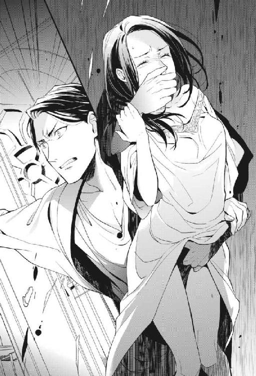
自分を襲った男に情が湧いたわけじゃない。和久さんの姿形をした人が、殺人を犯すところだけはどうしても見たくなかった。たとえ夢だとしても、そんな悪夢は見たくない。
「......」
グレンは馬乗りになっていたユーゴの上から立ち上がり、私のほうへ向き直った。解放されたユーゴはまだ息を浅くして目を剝いている。恐る恐る、グレンに視線を戻す。
よくよくグレンの姿を見ると、彼も眠るところだったのかガウンのようなものを羽織っていた。それから、走ってここへやってきたようで汗もかいている。私を見つめる目は依然として鋭いままなのに、そんなところが気になってしまう。グレンはまっすぐ近づいてきた。
「来い」
「え」
殴られでもするのかと思ったら、ぱっと手首を摑まれる。そのまま床に転がったユーゴを図書館に放置して、ドアの外へ。
「え、あのっ......グレン？」
「......」
呼びかけには応じてくれなかった。腕が引っこ抜けそうなほど強い力でグイグイ引っ張られ、私はその背中についていくことしかできない。怖い、と本能的に感じているのに、後ろ姿まで和久さんと同じものだから困った。鬼気迫った状況でも、構わずドキドキしてしまう。
連れていかれたのは私が抜け出した部屋。彼はどこからか鍵を取り出すと慣れた手つきでカチャッと解錠する。
「えっ......待って、私、出るときに鍵なんてかけてない」
「何を言っているんだ今更。鍵はドアを閉めたら勝手にかかる。外からは俺が持っている鍵でしか開けられない。ずっとそうだっただろう」
「えぇっ......」
「来い」
知りませんけどそんな仕様......。
ろくに文句も言わせてもらえず中に足を踏み入れると、部屋は出たときのまま。彼は強く私の手を引いてベッドへ向かった。一度も潜った痕跡のない、皺ひとつないシーツの上に雑に転がされる。
「な......」
覆い被さってくる大きな体にたまらず非難の声をあげようとした。そしたら。
「──馬鹿か!!」
怒られた。
「......ば、か？」
両方の手首をシーツに縫い留められるように押し付けられた。本当だったら、身をよじって逃げ出したいような状況だ。私が無抵抗だったのは、その表情に驚いたから。
さっきまで冷たい声だけで人を殺せそうだった人が、さっきよりも随分熱を孕んだ目で、わかりやすく怒った顔をしていたから。
彼は頭が沸騰しているのか頰を上気させて、吐き出すように言う。
「一人で図書館へ行ったと言っていたな。誰もそばにつけずに？ 一体何を考えている......。そんな無防備なことをすれば、ああなるに決まっているのに」
「......待っ、て」
言われていることについていけず、困惑するばかり。どうして城の中を出歩くだけで、ああいうことになってしまうのか。決まっていると言われたって。
「さっきここにお前を訪ねてきた。返事がないから鍵で扉を開けたら、部屋の中にお前が見当たらない。......どんな気持ちだったかわかるか？ クロエ」
「......」
「......胸が千切れるかと思った」
「っ......」
──どうしてそんな、寂しそうな顔をするんです。
大好きな和久部長の顔が、愛情を欲しがる子どものように心細そうに歪む。そんな顔をされてしまうと惚れた弱みというやつで、きゅっと胸を絞られた。間近にある顔を思わず両手で包む。頰は少し熱を帯びている。
「クロエっ......」
「んっ......」
自ら手を伸ばしたことを合意と取られてしまったのか、見つめ合ったまま自然に唇が落ちてきた。当然のように口を開かされ、舌が口の中を貪っていく。頰の裏の粘膜を舐められて、くすぐったさに肩がビクビクと震えた。困ったことに、とんでもなく気持ちいい。舌が独立した一つの生き物であるかのように蠢いて、一人では絶対に得ようがない快感を生む。
一度の夢の中で、朝も夜も和久さんとキスをしているなんて。もうこれが自分の願望ではないなんて、言い切れないような気がした。
「ん、は......クロエッ......」
熱に浮かされたように、うわごとのように。濡れた唇で私の名前を呼ぶ。眼鏡をはずした和久さんの必死な顔。欲しがる顔。私の体温を上げるのには充分すぎた。
見つめていた唇が、不意に視界から消えて。
「......あッ。や、ん......」
さっきユーゴに舌を這わされ、散々不快な思いをした首筋に優しく歯を立てられる。痛いのに、その痛みは甘い。そんな矛盾ってありえる......？ 突如生まれた快感に、私はずっとガクガクと体を震わせていた。
グレンは口を離すと、雰囲気を壊さない程度に低い声で囁いてくる。
「クロエ......」
「っ」
ひくん、と体のどこかが疼いた。ビクビクッと一瞬痙攣した体を押さえ込むように彼は、私に体重をかけ、耳の中に声を注ぎ込んでくる。
「お前にはもう一度、一から教え込む必要があるな」
「な、にを......んぁっ」
今度は耳の裏にキス。同時に片方の乳房を優しくまさぐられる。朝には全力で拒んでいたその行為を、今はもう少し、そうしていてほしいと願ってしまう。
私が止めない限り望みは叶えられ、丹念な愛撫が続く。
「お前のこの体には、王位が懸かっている」
「......は？」
「だから、絶対に......俺以外を受け入れてはいけない」
キスのせいでぐずぐずに体が蕩けていて、脳も蕩けていて。何を言われたのかよくわからない。
「......王位......？」
「ロクでもない制度だと、常々思ってはいるが」
「......私の体に懸かってるって？」
「......なんだ。本当に忘れたのか？」
「は、あぁっ......」
いつの間にか胸の上までドレスをたくし上げられていて、言葉の合間に胸の先を吸われる。さっきのキスで味わった彼の口の中の熱さを、今度は敏感な胸の尖りで感じて、気が狂いそうだった。
忘れたのかという質問に、もう知ったかぶりはしない。うまくしゃべれないからこくこくと頷いた。彼は私の乳首を口の中に含んだまま、ちらりと目でそれを確認すると、呆れた顔で口を離す。それから語り始めた。
「先代の王が決めたことだ」
「先代......」
「それまでは、王の血族の中から後継者が自動的に決まっていた。だが、〝あまりに骨のない者に国を継がせても、下手な政治でノズワルドが廃れてしまう〟と言い出してな......。それを危惧した先代は、次期王からその権利を奪える機会を作った」
「それで、どうして、私に関係がっ......んんっ、ちょっと止めっ......」
話の間も彼の愛撫は止まらない。乳首から離れていった口は、今度は私の喉をべろりと舐め上げる。ぬくい手のひらは徐々に下っていき、少しずつ核心へ近づいていく。ひくん、ひくん、とどこが疼いているのか、さすがに私もわかっていた。
「次期王の転覆を狙うなら、本来なら水面下での謀略か、暗殺しかない。でも、次期王がそんなことで気を揉むのは煩わしい。城の中で足の引っ張り合いをしても、国の繁栄には一ミリの足しにもならないからな」
「あ、ん......だから、どうしてそれで私が......！」
「だから賭けるのは、男の沽券だけでいいだろうということになった」
「んっ......」
「......そこからは先代のクソみたいなこじつけだ。〝婚約者一人守れずしてどうして国を守れる〟なんて言ってな。〝次期王の婚約者と契りを交わした者は次期王に成り代われる〟なんて決まり、どうかしてる」
「んっ......〝契り〟......？」
「......それは忘れたフリ？」
そう言って、私の内腿を擦りながら彼は笑った。少し意地悪な顔は、余計に現実の和久さんと目の前の彼をダブらせた。そして。
「コレを」
「ひぁッ......」
「お前の、腹の、この辺りまで埋めて......一番奥で愛し合うことだ」
いつの間にか、蜜口に硬く反り返ったモノを宛がわれていた。その上彼は〝この辺りまで〟と言いながら、指先で私のお臍の辺りまでを撫でる。
体は貫かれるのを一足早く想像してしまい、じんわりと濡れる。彼はそれをも面白そうに笑って、ぬるぬると先端を擦り付けてくる。
「あぁッ、いやぁっ......！」
「期日は正式に婚礼の儀を済ませるまで。つまりは、女王になる前の婚約者を寝取った奴が次の国王になるということだ。......まったく馬鹿げているがな。それでも、ノズワルドの正式なルールとして残されてしまったばかりに......」
「だめっ、もう......は、あんっ、だめぇっ......！」
彼の話は、もうほとんど私の耳に届いていなかった。雄々しいモノで蜜口だけでなく敏感な肉芽まで一緒に嬲られて、自然と脚を大きく開いてしまっていた。
少しずつ、肉茎の先端が出入りをはじめる。
「今夜みたいにっ......ふざけた輩が、お前の体を狙ったりするんだ。だから夜中は出歩いてはいけないと、城の中でルールを定めた。それなのにお前はっ......！」
「あっ、あぁッ......！」
「お前はっ......お前を守るためのルールを破って......!!」
「あぁぁぁっ!!」
ぐぷぷっ、と大きな音をたてて。何がなんだかよくわからないまま、ミチミチと一気に隘路を拓かれた結果。
私は処女を喪失した。
──夢の中で。
４．落武者黒江の暗雲
「あん！ あん！ はぁっ......！」
パン！ パン！ と肉のぶつかり合う音が広い部屋に響く。グレンの筋肉質な腕に腰を抱えられながら、角度を変えて何度も抉るように腰を打ち付けられた。そのたびに体が大きく跳ねて、口からは自分のものとは思えない甘い声が漏れ出る。
「クロエっ......クロエ。はぁっ......クロエっ......！」
理性的だとはとても言えない。だけどはっきりと私の名前を呼んでいる。掠れたり息を詰まらせたりしながらはっきりと。そうされると、彼の欲望はまっすぐ私に向けられているんだと思い知らされる。
「クロエッ......は、んんっ......気持ちいいか......？」
「は......っ、くぅっ......！」
返事なんてまともにできる状態じゃなかった。彼は反応を求めるくせに、腰の動きを一切緩めることなくゴリゴリと最奥を擦ってくる。
夢の中だというのに、初めての貫通はきっちり痛みを伴った。プチプチと押し拓かれ、呼吸を忘れて目を見開いた。「息を吐け」と言われてもうまくできず、ただ痛みをこらえ、涙をこらえ。痛みで頭がいっぱいになった。
だけどそれも長くは続かなかった。グレンが私のナカに収まったまま、目尻に優しいキスを落とした。和久さんにそうされていると思うと、私の胸は痛みじゃない別のものでいっぱいになる。他の感情なんて押し流してしまうほどの多幸感。
そうしているうちに痛みには慣らされて、今は激しいセックスに興じている。
「──あッ！ あぁっ、んふっ......」
体を揺さぶられ、胸が揺れる。頭の中も一緒に揺らされてうまく考えられなくなる。
目前で激しく動く雄々しい身体に本能的に惹かれて、美しい胸筋に触れた。スーツの下はこんな風になっていたのか......。夢と現実を混同しているとわかっていながら、完全に和久さんに抱かれている気持ちだった。
「ふっ......ふぅ、っ......」
シーツに縫い止められていた手は解放され、代わりにぎゅっと上体を抱き込まれる。グチュッと卑猥な音をたてて隘路を往復する肉茎は止まらず、興奮した熱い吐息を耳の裏や首筋に吹きかけられた。私もたまらない気持ちになって、真上にある彼の体をぎゅうっと抱きしめる。
「あ......あぁーっ......」
「クロエっ......」
あんなに恐ろしく思っていたこの人も、自分の体に溺れている今の状況では怖くない。私の内壁で性器を擦って、快感に目を細めている彼は可愛い。いつだって、怒るときですら理性的な和久さんが衝動を抑えきれずにいる姿。ゾクゾクする。
「いいっ......イイ、クロエっ......あぁもうっ、出そうだっ......」
わ、出すのか......。
自己申告に無性に恥ずかしくなった。どうせ夢なんだから、良いも悪いもない。私は何も言わず、ただ目の前の胸に頰を擦り寄せる。パン！ パン！ と肉がぶつかるたびに甘い痺れで目の前が白む。〝イきそう〟っていうのは、こういう感覚のことをいうんだろうか。
「う、っぁ......クロエっ......」
また名前を呼ばれる。気持ちよくて苦しい。熱い息を吐きながら彼の顔を見た。彼はグレン。でも和久さん。混同したまま、その自覚もあるまま、愛しさに胸の奥を絞られる。
「は......」
「クロエ......頼むから」
「んっ、はんっ......あ」
「頼むから、俺のそばを離れずにっ......」
「んむっ......」
大きな手のひらがするりと頰を滑ったと思うと、食べられてしまうようなキスをくらって。上唇を、舌を、下唇を。順に食まれて翻弄されている間に、彼は私の子宮口近くにグリグリと亀頭を擦り付け、果てる。
「ん、ん、ふっ......んんーッ......！」
ビュッ、と迸ったのがわかった。キスで口を塞がれたまま熱い飛沫をナカに受け、ビクン、と膣が収縮する。自分も達したのだと感覚的に理解する。ビュッ、ビュッ、と、後から後から吐き出される精も刺激になって、なんだかずっと気持ちいい。意識が遠のく。
エッチしちゃったなぁ。朝はあんなに嫌がっておいて。
まぁ夢だから、いいか......。
・・・
──ピピピピッ、ピピピピッ。
聞きなれたアラームの音が段々大きく、はっきりと聞こえる。意識が覚醒してきたということもあるし、私の目覚まし時計は少しずつ音が大きくなっていく仕様。そんなことを考えている時点で、私は完全に目を覚ましていた。
とすっ、とまっすぐに手を下ろして目覚まし時計を止める。
「......」
目覚まし時計があることから、私の希望は半分潰えていた。もう半分の期待でバッと天井を仰ぐ。......低い！ 部屋を見回す。......狭い！ おまけに、隣に裸の男の人も寝ていない。悲しいほどに現実だった。私はいつもの自分のベッドの上にいた。
「......そりゃそうかー」
枕に顔を埋めて、つぶやきは柔らかな感触に吸収されていく。そりゃそうだ。すごい夢だったけど、ただの夢だ。和久さんそっくりの男にめちゃくちゃいやらしいことをされた記憶がある。しかも処女まで失った記憶がある。だけど夢だ。
よりにもよってあっちが夢......と、私は居たたまれなさに打ち震えた。エッチな夢を見てしまったことは勿論恥ずかしい。でも、現実で和久さんのスーツを嗅いでいるところを本人に見られてしまったことのほうが、よっぽど恥ずかしかった。当たり前だ。なんて言ったって見られているのだから！ ドン引き確定の私の奇行を！ 死にたい......！
時間が経つほど自らの行いを鮮明に思い出し、ベッドの上でのたうち回る。これが逃げられない私の現実。
和久さんに軽蔑の目を向けられたり、口を利いてもらえなくなったり。考えうる限りの最悪のパターンを考え尽くして、そろそろ準備しなければ会社に遅刻するという時間になるとむくりと起き上がる。顔を洗って歯を磨く。
──私は社会人だから。
現実が自分をタコ殴りにするとわかっていたって、逃げるわけにはいかないのだ。
出社すると、当たり前だけど『ノズワルド』は私が勤める会社の名前だった。次期王を決めるのに変なしきたりがあるような国のことではなかった。そりゃそうですよね。
グレンという男が最後、私を抱きながら言っていたことはあまりよく覚えていないけれど。〝婚約者を寝取った奴が次の王になれる〟みたいなことをつらつらと言っていたように思う。どんな制度だ。政権争いに人の貞操を使わないでほしい。
オフィスに足を踏み入れて一番に確認した。肝心の和久さんは......部長席を振り返ると不在だった。ボートの表示は「社内」になっている。煙草か、トイレか、朝一の打ち合わせか。いつ顔を合わせても不思議じゃない状況にげんなりした。一夜明けて、なかったことにしてくれているといいけれど......。
自分のデスクに着き「おはようございます」と周囲に声をかけると、いつも通りほとんど返事はなかった。席の近い新人の女子、徳山菜々だけが控えめに「おはようございます」と返してくれる。誰一人返してくれない時期もあったから、今はこれだけで少し救われている。
「おはよう」
「鮎沢社長への資料のご提出、今日でしたよね」
「うん。あとは完成している資料を一つにまとめてチェックするだけ。徳山が手伝ってくれたお陰で今日は早く帰れそう。ありがとう」
「とんでもないです」
徳山ははにかんで嬉しそうにする。純朴な笑顔が初々しい。
今回の提案から一緒にＡＹＵＺＡＷＡユニフォームを担当することになった彼女。素直で、新入社員ながら仕事の手も早い。優秀なだけに、穏やかそうな彼女がこの先変に同僚にやっかまれはしないか、私は密かに心配している。
「黒江さん昨日、帰るのすごく遅かったんですよね」
「え？」
「送ってくださってた資料の保存時間が深夜だったので......。お手伝いできることがあったら、なんでも言ってください」
「あー......。うん、ありがとう。昨日は別件の作業もあって」
本当は、昼間に一度データを全部消されてしまったからだ。だけどそんなことを言い訳しても仕方がないし。志を持って入社してきたこの子に、〝嫌な会社だなぁ〟とがっかりさせたくない。社内でこんな扱いを受けているのはたぶん、私くらいだろう。ぐっと口の中に本音を押し込めて笑顔を作った。
この日の仕事も、昨日に引き続きＡＹＵＺＡＷＡユニフォームに提出する資料の作成業務。私が入社してすぐに飛び込んだＡＹＵＺＡＷＡユニフォームは、企業のユニフォームの受注生産を主な仕事としている。一般消費者の手に直接届くものはほとんど作っていないので、世間的な知名度は低い。しかし大企業が大量のユニフォームをどこかに発注しようと考えたとき、必ず候補にあがるような、その分野では名だたる会社だった。
私が営業をかける前にも、ノズワルドはアプローチをしていたという。ただその頃には競合ががっちりと入り込んでいて、とても扱いを奪えそうな状態ではなかったから足が遠のいたらしい。時が経って、慢心しきっていた競合繊維商社に鮎沢社長が愛想を尽かしていた頃、何も知らない私が営業にやってきた。不意に決まった年間二億の契約は、そういったタイミングで偶然決まったものだった。
昨日まで作っていたのは、一般消費者に向けても仕掛けていきませんかという提案書。そして今日作業をしているのは、提供できる素材のリストと見積もり。鮎沢社長は自社に声がかかっている工場作業着のコンペに勝つため、ノズワルドをパートナーに選んでくれた。うちの会社も誠心誠意期待に応えなければいけない局面だ。
ランチの時間。昨日の反省を活かして私は、作成していたファイルを確実に保存する。昨日は作業途中のパソコンの電源を切られてしまって散々だった。やり直しは気が重たかったし、時間もかかってしまったし。
デスクに戻ってきていた和久さんをちらりと横目に見る。特に私を気にかけているということはなさそうで、目は合わなかった。この調子なら、昨晩のこともそのうち有耶無耶になっていくかも......。そう期待しながら、今日は非常階段で昼食を食べるのはよそうと思った。あの二人だけの空間は居心地がいいけれど、今は針のむしろになる気しかしない。
今日は外で美味しい一人ランチでもしようかな、と財布を持って出た。エレベーターに乗り込む。十二時前後にはぎゅうぎゅうに人が乗っているが、少し遅めのせいか、やってきたエレベーターには誰も乗っていなかった。一階のボタンを押し、閉のボタンを押す。下降するエレベーターは一つ下のフロアですぐ止まった。男性が一人乗り込んでくる。
「あ」
「え？」
乗り込んでくるなりその男は、私の顔を見て声をあげた。なんだろう......。気になって私もまじまじと彼の顔を見る。こざっぱりとした短髪に、澄んだ力強い目。全体的に塩顔なこの顔は......。
「ユッ......！」
ユーゴだ......！
気付いた瞬間そう叫びそうになった。あまりのタイムリーさにぎょっとする。目の前に現れたのは、夢の中で私を襲おうとした衛兵と同じ顔。佐々井雄吾。繊維部門の営業の後輩。
「お疲れ様です、黒江さん」
爽やかに笑いかけられて、私の背中には冷たい汗が伝う。ほとんど接点がなかったのになぜ今日に限って......！
「お......お疲れ様です」
嫌な偶然だなと思いながら、所詮夢のことと精一杯気持ちを落ち着ける。彼は何も悪くない。わかっているのに、思い出すのは首筋や秘部に触れたあの不快な感触だった。ボタンのパネルの前でうつむく。
放っておいてほしいという気持ちは伝わらず、佐々井はマイペースに話し続けた。
「黒江さん、なんか久しぶりですね。同じ会社にいるのに、部署が違うだけでこんなに会わないものかーって感じです」
「そうですね......」
当たり障りのない返事をしながら、階数が表示されている液晶を盗み見る。下降するスピードがいつもよりゆっくりに感じられる。早く一階についてほしい。夢の中だけのこととわかっていても、密室に二人きりだという今の状況は落ち着かなかった。そわそわして、自分の腕を手で擦る。
「元気にしてますか？」
「ええ......」
「昨日、痴漢にあったって聞きました」
「......」
それがなんだというんだろう。意図が摑めず顔だけ後ろを振り返る。私の予想に反して、佐々井は少し苦しそうな顔をしていた。
「大丈夫でしたか？」
尋ねられた瞬間、エレベーターは一階に到着する。私たちは降りながら、中途半端になっている会話を繫ぐ。大丈夫かと訊かれても。
「大丈夫です。痴漢も、捕まりましたし」
大丈夫、以外になんと言えばいいの。
エレベーターを降りてすぐの壁際に身を寄せて続く会話。佐々井の顔はやっぱりどこかつらそうで、冷やかしで話題を振ってきたわけではないと、わかるのだけど。
訝しむ気持ちが顔に出てしまっていたのかもしれない。佐々井はためらいがちに話す。
「痴漢の話を聞いて......なんかすごく、嫌だなって。そもそも犯罪だし気持ちのいい話ではないんですが、黒江さんがそんな目にあったんだって思うと......モヤモヤして」
「......佐々井くん？」
「好きなのかもしれないです。俺、黒江さんのこと」
「......え？」
まったく予想していなかったところに会話が着地し、目を剝いて黙ってしまう。......好き？ 今まで特に接点もなかったのに？
それ以前に、〝落武者〟なんてあだ名をつけられる女のことを好きになるだろうか。何よりもまず、裏があるのではと疑ってしまう。
「〝思いもしなかった〟って顔ですね。......そりゃそうかぁ。今までちゃんとアプローチしてこなかったし」
「......理由がないでしょう。私を好きになる理由なんて」
「ありますよ」
即答されてたじろぐ。佐々井は私のそんな反応を見て笑った。
「俺、ずっと昔に......自分の就職試験の最終面接のときに、黒江さんに激励してもらったんです」
絶対忘れてるでしょ、と笑って言ってくるので、私は頷く。自分と佐々井の接点なんてほとんどないと思っていた。それはいつの話だ。彼の就職試験、ということは......五年は前？
「最終面接よりもだいぶ早く会社に着いて、余計に緊張しちゃって。役員室前の廊下で死にそうになってたんです。そしたらたまたま通りかかった黒江さんが〝背中曲がってますよ〟って」
「......」
......言ったかな？ 言っただろうか。記憶にはないけれど、目についたものが放っておけなかったようなその発言は、自分のものな気がしてくる。
「黒江さんが愛想なくそう言うから、俺、余計にびびっちゃって」
「......好きになる要素なくないですか？」
「続きがあるんですよ。黒江さん、今みたいにツンとした顔で〝役員だろうとただの人間です〟って」
「......」
言ったような気がする......。
「それにすごく励まされて。黒江さんが立ち去ってから、〝あ、今励まされたんだ！〟って気付いて。めちゃくちゃ嬉しかったんです」
「......それも別に、好きになるようなことじゃ」
「充分ですよ。些細なことだけど......。黒江さんが痴漢にあったって聞いてモヤッとするまで、これが〝好き〟だとはピンときてなかったんですけどね」
「......」
「そんなことを考えてたらエレベーターに黒江さんが乗ってきたもんで......すみません突然。勢いで言っちゃいました」
言っちゃいました、と爽やかに言われても。
根拠を示された今でも、私は彼の気持ちをどう受け止めていいのかわからなかった。そんな昔のことを、という今更感もあったし、何より私は好意を持たれることに慣れていない。
「返事はすぐにじゃなくていいんで。とりあえず今からメシでもどうです？ ランチ、まだでしょ」
そう言って、少し強引に私の腕を引く。そんな馬鹿な......と混乱していたところ、とっさに腕を摑まれたので、油断していた。
「ちょっ......とっ......！」
強い力を加えられて反射的に思い出す。夢の中のことなのに、乱暴にされた記憶は鮮明だった。口と鼻を塞がれた息苦しさ。首筋を這う舌。欲望に忠実に人を蹂躙しようとする、あの──。リアルな感触として蘇って、脚がガクガクと震えた。佐々井の手を振り払えない。
「っ......」
「黒江」
会社のビルを出ようとして、後ろから声をかけられた。私と佐々井は振り返る。そこには眼鏡の下に冷たい目を覗かせた、和久さんがいた。──こんな場面まで夢の中とダブる。
佐々井も和久さんを怖いと思っているタチなのか、摑んでいた私の腕を放し、その場でバッと姿勢を正す。
「和久部長っ......」
「今からメシか」
「あ、あぁ......はい」
「悪いが黒江に急ぎの用がある。メシは一人で行ってくれ」
そう言って、佐々井の返事を待たずに和久さんは。
「来い。黒江」
わざと横柄な態度で、先にエレベーターホールへ戻っていく。
私は固まっていた脚を動かし、佐々井を振り返らず和久さんについていった。さっき降りたばかりのエレベーターに乗り込む。彼は手早くボタンを押して扉を閉めた。
「あの......用というのは」
助かったと思ってついてきてしまったが、こちらもこちらで気まずい。できれば今日一日顔を合わせずにやり過ごしたかった。彼が言う〝用〟というのは、やっぱり......。
「......黒江。昨日の夜のことだけど」
「......」
やっぱり、それですよね......。
私に気を遣ってか、和久さんはエレベーターのボタンのほうを向いたまま話した。表情を見られないのをいいことに私が顔を上げると、シャープな輪郭と、斜め後ろから形の良い耳が見える。
「忘れたほうがいいのか？」
「え？」
エレベーターはぐんぐんと上昇する。さっきはあんなに遅く感じたのに。
言われたことに戸惑いながら、斜め後ろから見えるものを堪能していた。眼鏡のつるも、長い睫毛も。全部好きだな、と思ってしまう。
「昨日のアレは、忘れたほうがお前の気が休まるというなら......善処する」
「......」
......良い人すぎるでしょう。上司のスーツの匂いを嗅ぐ女なんて絶対に気持ち悪いのに、許していいんですか。
和久さんの気配りに胸を打たれつつ、ちょっと心配になった。この人、こんな怖い顔してるけど、痴女に良いように丸め込まれてしまうのではなかろうか......。
「そうしていただけると......有り難い、ですけど」
私が返事をすると同時に、エレベーターの扉が開く。
和久さんは一瞬だけこちらを振り返ると、「そうか」と言って先に降りた。いつもの冷たい顔。表情は読めない。──だけどまたダブらせた。夢の中で私の中を穿ちながら、もどかしそうに腰を振る男の顔。快感に目を細め、頰を上気させた顔。いつもの和久さんからは想像もつかないような顔を、私は一度見てしまっている。
「っ......」
バッと顔を伏せた。......これ。この先もずっとこんな風に、思い出してしまうんだろうか。
しばらくその場でうつむいて動けずにいると、一定の時間が経ったことで扉が勝手に閉まろうとした。慌てて開ボタンに手を伸ばす。それよりも早く、〝ガコン〟と音をたてて、ドアが閉まるのは食い止められた。
「......何してんだ黒江。来い」
「す、すみませ......」
ほら、横柄な態度を取っても。怖い顔をしても。ほんとは優しいと知っている。だからあなたにだけは、あんな醜態、見せたくなかった。
気まずかったり、いやらしいことを思い出したり、せつなくなったり。忙しいったらない。私は和久さんが扉を開けてくれている間にエレベーターを降り、オフィスまで戻る廊下を彼と並んで歩いた。部屋に入る間際に彼は言う。
「あまり一人で出歩かないようにな」
「......え？」
どうして急にそんなことを？
ぽかんとした私を置いて、彼は彼のデスクに戻る。ランチタイムのオフィスはがらんとしていて静かだ。だから余計にその一言が耳に残る。〝あまり一人で出歩かないようにな〟？
痴漢にあったからだろうか。それとも、佐々井に絡まれていたから？ どちらでも意味は通らなくはないけれど、なんとなく違和感がある。
「......」
どういうことですと訊こうか一瞬迷ったけれど、デスクに戻った和久さんがコートを着て外出の準備を始めたのを見て、この違和感は有耶無耶になった。
忙しなく出ていった背中を見届けて、私は息をつく。あんなに急いでたのに、声をかけようと追ってきてくれたのかな、とか。そういえば昼食を食べに出ようとしてたのにな、とか。そんなことを考えながら、少し仕事をしようとパソコンのスクリーンセーバーを解いた。
今日が提出期限の素材リストと見積もりは、途中段階で出力して先輩のチェックを受けているので、大きな修正はないはずだ。徳山にも作業してもらったデータを一つに取りまとめて、あとは誤字チェックをすれば完成。夕方までには問題なく送れるだろう。──そう思っていた。
「......え？」
画面にはいつも通り、デスクトップが表示されている。実家の猫、ムタさんが伸びをしている。ファイルが散らかっているのは見栄えが悪く好かないので、私は目下動いている案件だけを二、三個だけそこに置くようにしていた。
しかし見えるところに、素材リストと見積もりを入れたフォルダが見当たらない。思わず口が開いてしまう。
「......」
ちょうどそこに、早めのランチから徳山が戻ってきて。私の顔を見るなり彼女は声をかけてきた。
「ど、どうしたんですか黒江さん。顔色が......」
「いや......」
血の気が引いているのが自分でもわかった。震える手でマウスを動かし、パソコン内で検索をかける。ファイル名で検索をかけてみるも、何もヒットしない。
（......落ち着け）
自分に言い聞かせてふぅっと息を吐き、バックアップを取っているハードディスクの中を確認する。定期的に自動保存がかけられているはずだから、最新のものではなくてもこの中に......。
その期待も虚しく挫かれた。私が作ったファイルは、パソコンの中から綺麗丸ごとなくなっていたのだ。
「ランチ行ったんじゃなかったの？ 黒江サン」
斜め前から声をかけられ、口を開けたまま顔を上げる。化粧室に行っていたのか、化粧ポーチを手に持った三澤さんがいた。グロスたっぷりの唇を三日月のように笑わせて。
「あーでも、ランチなんか行ってる場合じゃないか。今忙しいわよね、たぶん」
「っ......」
そんな馬鹿なことをするだろうか？
信じられない気持ちで目を見開く。
たかだか私への嫌がらせで、得意先の損失になるようなことをするはずがない。それだけはないだろう。そう思いたい。だけど、データが独りでに消えてしまうということも考えにくい。
「ぁ......っ」
先輩がやったんですか？ と、喉元まで出かかっていた。出かかって、開いていた口をゆっくりと閉じる。どうせ自分がやったとは言わない。それに犯人捜しをするよりも先に、この状況をどうにかしなければ。......でも、どうやって？
素材リストと見積もり。一口に言っても、それは複数種類のユニフォームを何千枚と作る場合を試算し、更に素材を安価なものに変えた場合どれくらいコストが変わるかなど、さまざまなシミュレーションをしている。デザインの提案も含んでいた。協力会社から出してもらった資料一式も、丸々消えてなくなっている。とても一日そこらでどうにかできるものじゃない。
「黒江さん......」
傍で見守っていた徳山も、ただ事ではないと察して顔を青くしている。泣きそうになっている顔を見て、私まで泣きそうになった。──でも泣いたって仕方ないじゃない。それで解決することなんて、一つもないじゃない。
「──ごめん、徳山」
「はい......」
「今日提出予定の資料、パソコンの中から消えちゃったみたい」
「えっ......消えちゃった、って......でもそれっ、やり直しが利くような量じゃっ......」
深く息をつく。私のことを鼻でせせら笑っている三澤さんを無視して、電話機に手をかける。メイン担当の先輩の携帯に電話をかけた。
「お疲れ様です、黒江です。......先輩すみません、今日の、鮎沢社長にご提出する資料なのですが────」
資料は約束の時間に間に合わなかった。
二週間以上かけて作ってきたものを、一日でどうにかできるはずがない。一部のパーツは徳山や先輩のパソコンの中にあったけれど、重要なデータのだいたいは私が集約していた。〝バックアップもあるし〟と、特に共有もしていなかったのだ。
結局、先輩と上司が鮎沢社長の元へ頭を下げに行き、期限を延ばしてもらうこととなった。
鮎沢部長は失望した声でぽそりと、「こんなことは初めてだ」と漏らしたという。今回は時間もないからパートナーの変更はないだろうが、次にノズワルドが選ばれるかはもうわからない。そんな雰囲気だったそうだ。
直接謝罪に行かせてほしいと先輩に頼んだ。だけど「やめてくれ」と。「蒸し返すな」「余計に怒らせるだけだ」と煙に巻かれて、私はデスクでキーボードを叩くことしか許されなくて。
消えてしまったデータを徳山と一緒に作り直していると、彼女はずっと思いつめた顔でいた。責任感の強い彼女のことだ。鮎沢社長との打ち合わせに一緒に行ったときに、資料は今日提出することを社長に約束した。その約束を破ってしまったことをどれだけ心苦しく思っているかは、手に取るようにわかる。だけど。
（......なんて言えばいいんだろう）
データが消えてしまったのは、もしかしたら私が嫌われていたせいかもしれない。自分が悪いわけじゃないとしても徳山には申し訳なく、勿論鮎沢社長にも申し訳ない。だけどそんなことを打ち明けられたって徳山は困るだろうし、彼女の中の心苦しさが消えるわけでもない。
結局私は何も気の利いた言葉を見つけることができないまま、八時を過ぎた頃、徳山に先に帰るよう言った。新入社員を遅くまで残業させるわけにはいかない。彼女は少し渋ったけれど、私を困らせてもいけないと思ったのか「わかりました」と。元気はなかったけれど、しっかりと挨拶をして先に会社を後にした。
私は一人、終電がなくなるまで消失したファイルを新しく作り直す作業をして、朝までかけても終わりそうにないと気付いて仮眠を取りに帰宅した。
鍵でドアを開けて、よろよろと廊下を進みながら、鞄を落として、上着を落として、電気も点けずに。化粧も落とさずバタッとベッドに倒れこむ。
「......はぁ～っ......」
うんざりする。
なんだ、このクソみたいな現実は。
自分の枕に顔を埋め、すぅっと深呼吸をする。着替えもせずにそのまま、ベッドの上で丸く縮こまる。体力的にも限界だったし、精神的にも参っていた。
──このまま眠りに落ちて。
またあのヘンテコな世界の夢が見られたらいいなと、途切れる意識の隅っこで願った。
５．婚約者クロエの暗躍
・・・
目の前が白く明るい。目を閉じていてもわかるその光量に、朝がきたんだと理解する。私はゆっくりと目を開く。すっきりとした目覚め。昨晩はだいぶ疲れていたからか、よほど深く眠ったようだ。だって何も夢を見た覚えがない。......クソみたいな現実の続きが始まってしまった。
これから会社に行ってもまた悔しい思いをするだけ。そう思って、少し泣きそうになりながら寝返りを打つ。──すると、どうだろう。
「......えっ」
目の前にはまた和久さんの顔があった。眠っている。眼鏡ははずしている。見える限りは裸だ。私の体を緩い力で抱きしめている。......私も裸だ!!
「えっ......えぇっ」
なんで、どうして、と混乱しながら、とりあえず布団で体を隠す。落ち着け、和久さんはまだ眠っている。......というか、彼は和久さんなのか？ 何かがどうにかなって、和久さんとベッドインしてしまった？ それともこれはまた夢で、あのグレンとかいう──。
バッ！ と天井を見た。......高い！ 次いで部屋の壁に目を向ける。......めっちゃ広い！ 確かめるようにぐるっと室内を一望し、ここが自分の部屋ではない、夢の中の部屋だと確信する。ということはだ。つまり、隣にいるこの男は、グレンで間違いない。私はまた夢を見ている。
確かに、またここに来られたらいいなとは思っていたけれど。まさか本当に来られるとは思わなかった。私は驚いたまま、目の前のグレンの寝顔を見つめる。
「......」
何度見ても、和久さんそのものだ。少し長い前髪にシャープな顔立ち。薄く形のいい唇。すっと通った鼻筋。本当に整った風貌だと思う。私は恐る恐る、彼の輪郭に触れる。
「ん......」
一瞬眉をひそめたけど、それだけで起きなかった。静かで規則的な寝息が続く。この美しい顔が、前に見た夢では私の上で快感に喘いでいたのだ。
思い出すとどうにも恥ずかしかった。恥ずかしくて、だけどどうしようもなく嬉しい。結局、私は夢の中で和久さんのことを汚してしまった。今こうして裸でいるってことは、昨晩も私たちはシたんだろうか。
必死に求められていた、あの瞬間の多幸感を思い出す。
「......はぁ」
ため息をついて、一瞬だけ考えて。彼が眠っているのをいいことに、私は厚い胸板に甘えるように擦り寄った。頰を寄せると温かい。夢の中で初めて知った人肌の心地良さ。こうしてくっついていれば、嫌なことは全部この体温に溶けて消えてなくなるような気がする。
「......朝は随分素直なんだな」
「えっ!?」
突然頭上から降ってきた声にバッと顔を上げると、グレンが和久さんの顔で意地悪く笑っていた。
「おっ......起きっ......！」
「お前が触ってくるから」
「私は何もっ......」
「いいって」
必死に弁解しようとすると、言葉を遮るようにグイッと強く抱き寄せられた。私はまた彼の胸に収まる。
「もう少しこうしていよう。......体は平気か？」
「......はい」
てっきり馬鹿にされるものかと思ったら、予想外に優しくされて。戸惑いつつも返事をする。前の夢では傍若無人だったのに。急にこんな気遣いを見せられても、なんだか別人みたいで。
体を気遣われたから、やっぱり私たちは昨晩もシたっていう設定なんだなと、この夢の状況を理解する。一時甘やかしてくれるならなんでもいいや。私は彼の腕の中、大人しく頭を撫でられていた。
「昨晩はなんだか、やけに痛そうにしていたからな」
「え？」
「王位継承の話も知らないと抜かすし、なぜか俺を拒むし。どうも様子がおかしかった。昨日のアレはなんだったんだ？」
「いや、あの......その......」
なんだったのかと言われても、〝そりゃそうでしょう〟と言ってやりたくなる。初めてだったんだから痛いに決まっているし、王位継承に自分の貞操が懸かっていたなんて初耳だった。いくら好きな人と同じ顔をしていたって、いきなり迫られれば拒むだろう。......と、言いたいことはたくさんあったけど、それよりも気になることが一つ。〝昨晩は〟とグレンは言った。
すると前の夢は、昨晩の出来事だったというわけで。つまり私は今、あの夢の続きを見ているということになる......のか？
夢の中の設定を理解しようと私が黙って考えていると、グレンは息をついて質問を撤回する。
「......まぁいい。とにかくもう、あまり一人で出歩いてくれるなよ」
「......」
「......なんだ？ 顔に何かついているのか？」
「いいえ......」
グレンの何気ない一言が、またも私の心に引っかかった。〝一人で出歩くな〟と、最近誰かに言われたばかりだ。私はすぐに思い出した。現実で和久さんが私に言ったことだ。
『あまり一人で出歩かないようにな』
なんだか強烈な違和感を覚えた。あれはてっきり、痴漢にあったことが知れて言われたのかと思っていたけれど......。
「やっぱり変だぞ、クロエ。どうした？」
「......」
この違和感を、グレンに訴えたってどうしようもない。これは私の夢だから、たまたま現実でかけられた言葉が出てきただけなのかも......。
「なんでもありません......」
曖昧に濁してもう一度、彼の胸板に顔を擦り付ける。
「......本当に、今朝はえらく素直なんだな」
頭上からグレンの戸惑った声が聞こえる。甘えすぎだろうかとちょっと反省しつつも、私は彼の胸から離れられない。
「嫌な夢でも見たのか？」
「......そうですね。とっても」
答えながら、本当にあっちが夢ならいいのに、と思った。こじれにこじれた人間関係も、どうしたってうまくいかない仕事も。全部夢ならいい。
現実から逃げてちゃいけないと、ずっと思ってきたはずなのに。こんな情けないことを考えてしまうくらい、私は結構、現実に参っていた。
現実には、こんな風に私を甘やかしてくれる体温もないし。
「......クロエ。甘えてくれるのは大いに構わないんだが」
「なんです？」
胸から顔を上げてグレンの表情を覗き見ると、少し困った顔をしていた。最初は恐ろしく冷たい顔をしていると思ったけど、意外とこの人、表情が豊かなのかも。
グレンはぐっと下半身を押し付けてきた。
「......え？」
「裸でそんなにくっつかれると、当然だがこうなる」
「こう、って......あぁっ！ ちょっ......」
硬く屹立したモノを、胸とお腹の間にグリッと突き立てられる。少し視線を下にやると見えた。昨晩よりも心持ち大きいのではと思うほど、凶暴なまでに膨れている。
「......いい？」
「いっ......いいって、そんなっ......いやいやいやいや！」
そんなちょっと可愛い顔して訊かれても！
私が心の底から動揺している間に、彼は自分の欲望を私の胸に擦り付けてきた。
「は、あぁっ......」
胸の先に熱が触れて、いやらしい気持ちにさせられてしまう。朝からこんな爛れたこと、ダメだ。絶対にダメ。......ダメだと、思うのに。
「......物欲しそうな顔をして。乳首もこんなに硬い」
「いや......」
「咥えてくれるか、クロエ」
......咥える？
それって、と驚愕の顔を向ける。グレンはすっかり興奮していて、ハァッと色っぽい息を吐いていた。私はまたすぐに和久さんを重ねてしまって、カァッと頰が熱くなる。
咥えるって、だから、その、つまり......口で気持ちよくしろってこと？
「でっ......できません！」
「頼むから。......して、クロエ」
だからそんなちょっと可愛い顔で言われても......!!
いやいやと半泣きになって首を横に振る。だけどグレンは許してくれない。ただ私を追い立てるように、ずっと胸の尖りを自分の先端で押し揉んだ。そのうち彼の先走りが、ぬるりと赤い実を濡らす。
「あっ......はぁ、んんっ......」
どんどん膨れていくような気がするソレを、気付けば私は自分の手で包んでいた。熱い。ビクビクとしていて、ちょっと震えていて。
「クロエッ......」
早く、というニュアンスを含んだ声。私は胸に擦り付けられているソレを、少し上に傾けて、そっと口に────。
コンコンッ、とそのとき、ノックの音がして。私の心臓は縮みあがった。扉の向こうからメイドの声がする。
『クロエ様、おはようございます。グレン様はこちらにおいででしょうか？』
──どうしよう！
焦った私はそっと彼のモノから手を離す。っていうか！ 私！ 何を......！
「......ここにいる！ 用はなんだ？ 急ぎじゃなければ後にしろ」
「......」
とても不機嫌そうな声が部屋に響いた。その顔は明らかに不満げで、私のほうを向いて〝何ビビッてるんだ離すな続けろ〟と訴えている。
──続けられるか!!
私はいつメイドが部屋の中に入ってきてしまうかとヒヤヒヤしていて、申し訳程度に胸を布団で隠す。昨晩着ていた服はどこへやった？ あっ、あんな遠くに......！
脱がせたときにグレンが放り投げたのか、ナイトドレスは部屋の真ん中に落ちている。裸でベッドを出ていかないことには着るものがない状態。
扉の向こうからは困りきったメイドの声。
『それが......申し訳ありません、急ぎのようなのです。アユザ国との貿易で問題があったそうで、外交官たちが早くグレン様のお耳に入れたいと』
「......なに？」
不機嫌だったグレンの声が、ピリッと険しいものに変わる。ただごとではなさそうだと、部外者の私も空気で感じ取る。
グレンは扉の向こうに言った。
「すぐに向かうと伝えろ」
そして彼は、すぐさまベッドを抜け出て身支度を調え──ることはなく、私にキスをする。
「ん？ ん、んんっ......!?」
流れるように自然なキスだったので、抵抗をする暇もなかった。隣にいたグレンはすぐに私を上から押さえ込み、下肢の茂みを撫でるとそっと蜜穴に指を沈める。
「はっ、あっ......ちょっ......すぐに向かうんでしょう!?」
「すぐだ。昨日あれだけしたからな......まだ柔らかい。もう指を奥まで飲み込んだ」
「やぁっ......！」
グチョリといやらしい音をたてて指が蠢く。ついさっきまでの戯れで感じていた私の体は、すっかり敏感になっていた。グレンの肉茎に比べれば指なんて細いのに、それでも、小刻みに与えられる快感にお腹の下のほうが痺れていく。
「もどかしかっただろう、ココが。......熱を放っておいて、他の男と契られてはかなわないからな」
「んは、っ、そんなことっ、しなっ......あぁん！」
「ぐちゃぐちゃだ。俺が昨晩出したものもあるんだろうが......」
「あんっ！ もうっ、やめっ......」
「それだけじゃないよな、これは。胸を嬲られてそんなに感じた？」
「っ......！」
「睨んで見せても締まってる。......イかせてやるから、ほら」
「はッ......ああぁぁぁっ!!」
足の爪先にまで電流が走る。お腹の裏側で的確なポイントを押さえられ、私は一気に絶頂に達した。もどかしく燻っていた熱が解放されるのと引き換えに、ものすごい気怠さに襲われる。
「はぁっ、はァッ......」
肩で息をする私のこめかみに軽いキスを落とすと、グレンは体を起こした。目を細めて笑いかけてくる。
「良い乱れっぷりだ、クロエ。今夜も楽しみだな」
そう言ってベッドを離れ、彼は自分の衣服を拾いにいった。私は動けなかった。まだ達した感覚に体を占拠されていた。人間の指って、あんなに早く動かせるものなのか......。っていうか〝今夜も楽しみだな〟って。昨晩あれだけして、今晩もするつもりでいるのか。
いろんなことに衝撃を受けながら、私が〝現実の和久さんもこんな絶倫なのかしら......〟なんて不埒なことを考えだした頃、グレンが部屋を出ていく。きっと、さっきメイドが言っていた貿易の問題を解決するために。
夢の中のこととはいえ、グレンの次期国王という立場はなかなか大変なものなんだな、と。裸でベッドに仰向けになったまま、彼の気苦労に思いを馳せた。
「クロエ様」
「えっ!?」
突然声をかけられてビクゥッと跳ね上がる。ひっ......一人だと思ってた!!
「あ、う......何......？」
見られた。ばっちり裸を見られた。
もう遅いとわかっていながら、私は布団を抱き寄せ自分の体を隠す。そこにいたのはメイドのカノだった。ドアが開いた気配はなかったから、グレンが部屋を出るのと入れ違いに中に入ってきたのかもしれない。カノは私の裸を見ても特に動じることなく、ほにゃほにゃと締まりのない笑顔を見せた。
「おはようございます、クロエ様。朝の支度をお手伝いに参りました」
「あぁ......」
そういえばここでは、こういう扱いなんだったなと思い出す。カノが特に動揺している様子もないのは、私とグレンがああいうことをしていても普通だと思っているんだろうか。次期王と婚約者だから？
私はまだ動揺しながら、とにかく裸は落ち着かないからと「着るものをください」とカノにお願いした。
前の夢のときと同じように広いお風呂に入り、入浴を済ませた後はまたメイドたちに囲まれて、身なりを整えられる。髪を丁寧に乾かされて、華美なドレスを着せられる。人形になった気分になりながらも、私は考えていた。
入浴のために一歩自分の部屋から出たとき、城の中がなんとなくザワついていたのだ。それもみんな、不安そうな顔で何かをひそひそと囁き合っていた。前の夢ではそんなことはなかった気がする。
漠然と、さっきメイドが言っていた〝貿易の問題〟が頭をよぎる。
「......カノ？」
「はい。なんでしょう」
「この国は今、貿易で何かまずいことになってる？」
カノの屈託のない笑みが、少し困った笑い方に変わる。
「そうですね。今朝からその話題で持ち切りです」
「何があったの？」
「噂に聞いた話ですが......アユザ国と取引している植物の納品がうまくいかなかったそうです」
「納品......？」
「天候の影響で、例年より育つのが遅くて。納期が遅れてしまうのはわかっていたみたいなんですけど。担当していた商人が、それをアユザに伝えられていなかったらしくて......」
「それは......やっぱり、大きな問題になるもの？」
「アユザ国がだいぶ気を悪くしてしまったんですって。〝こんなに軽んじられるなら取引は打ち止めだ！〟って。植物だけならまだしも、食物や鉱石も含めれば最大の貿易国ですからね。アユザ国が貿易相手を別の国に切り替えたら、ノズワルドは大事な収入源を失います」
「だからみんな深刻な顔をしているのね......」
〝こっちもか〟と暗い気持ちになって目を伏せる。
夢の中の話だと思いながら、私は勝手に現実の出来事とダブらせていた。ノズワルド国がアユザ国を失望させてしまったように、私も鮎沢社長の信頼を失った。
カノは話を続ける。
「国の一大事ですからね......。アユザ国への納品を担当していた商人も今、地下牢に入れられてしまったくらいで......。わざと取引を破綻させる意味もありませんし、故意ではなく手違いだろうとは思うんですけど」
「誰も手を打っていないの？ 謝罪には......？」
「お詫びの品を贈りたいという申し出にも、応じてもらえないそうですよ。外交官たちもほとほと困り果てていると聞きました」
「......その外交官っていうのは普段、直接アユザの人たちとやり取りをしていた？」
「いえ、どうでしょう......。実際物資の取引に外交官が立ち会うという話は、聞いたことがありませんわ」
「......」
アユザ国の怒りが収まらない理由には、思い当たることが一つある。けれど自分が口を出すようなことじゃないかと、私は大人しく髪を梳かされていた。
昼食は一人で摂ることになった。前の夢のときもそうだったけど、グレンは食堂で食事を摂らない。思えば昼も夜も、食事のとき、私は必ず一人だった。婚約者だというからには、食事くらい共にしてもよさそうなものだけど......。
私はそれとなく、水を注いでくれたカノに話しかける。
「グレンはちゃんと食事をしている？」
なるべく自然に〝グレン〟と呼び捨てにする。婚約者だというなら、きっとそれが普通なんだろう。照れを出さないように真面目な顔を作った。
「食事のときはいつも姿が見えないけど......」
「あぁ......普段も政務でお忙しいですが、アユザ国との交渉に動きが出るたびに今日は会議です。厨房からサンドイッチを差し入れてはいるそうなんですが、食べられているかどうかは......」
「......そう」
「グレン様のこと、やはり気になりますか？」
「え？」
カノは私が食べ終えた皿をさげながら、機嫌よく笑ってそう言った。
「なんだか、気にしていないフリをしながらずっと気にされているなぁって」
「や、そんなことは......」
「最近、少し雰囲気が変わられてきたんじゃないかって。侍女たちの間ではもっぱらの噂です」
「変わってきた、って......誰が？」
「お二方とも。それぞれが、というのもありますし、お二人でいるときの雰囲気も。少し距離を縮められたというか」
「......」
それは単純に、体を重ねたからじゃないだろうか......。
一度恥ずかしいところを晒し合って、確かに恐れもなくなったし、話しやすくもなった。でもこんな、夢の世界で仲を深めたって何にもならないじゃないか......。現実の慎ましい和久さんと、夢の中の暴君。顔が一緒なだけでやっぱり別人だし。
「......もう少し、落ち着いた人だといいんだけどね。......あっ！」
思わずこぼしてしまった言葉を顧みて、〝今のはまずかったかも！〟と焦る。仮にも次期王の婚約者が、次期王に対して不満を漏らすのは体面が悪いような......！
「違うの、今のはっ......」
あたふたと弁解しようとした私に、カノはにこっと笑って見せた。
「グレン様が冷酷王などと呼ばれるようになったのは、次期王になることを見据えて政務に携わるようになってからのことです。こう言ってはなんですが、昔はそれはもう穏やかな少年だったんですよ」
「......はぁ、そうなの......？」
カノは穏やかに大きく頷く。
「上に立つ者は侮られてはいけないのです。隙があると思われれば必ずそこに付け入ろうとする輩が出てくる。誰かの意のままに動かせるような器ではないことを知らしめるには、非道な面を見せるのがてっとり早かったんでしょうね」
それって......と私が思い浮かべたのは、和久さんの顔だった。部長になってから進んで嫌われ役を買って出るようになった彼は、損ばかりしている。和久さんとグレン。性格は似ても似つかないと思っていたけれど、意外なところに共通点があった。
最年少の営業部長も、次期国王も。立場上、舐められるのがよくないというのはわかる。でもあんなにみんなのことを一生懸命考えている人が、誤解されたままでいいとは思えない。何か良い方法はないだろか？ 和久さんとグレン。彼らの威厳を損なわずに、別の一面をみんなに知ってもらう方法が、何か。
──いや、でも。今はそれよりも先に、貿易の問題がある。
昼食の後は、前回と同じように城内を散策した。人の目がある昼間は安全なようで、〝俺と契れ〟と男に襲われることもなければ、散歩を誰かに咎められることもない。
すれ違う人全員に恭しくお辞儀されることだけがどうしても慣れなくて、恐縮しながら廊下を進む。すると、前の夢でも見かけた、地下へと続く階段が目についた。
「......」
あの下に、今回の貿易で失敗した商人が囚われている。
階段の前には当然ながら、見張りの衛兵がいる。とても通してもらえそうな雰囲気ではない。いや、でも、もしかしたら？ 今の私はそれなりの地位があるから、許可してもらえないこともない......？
「......あの」
一か八かで足を向けてみた。
衛兵は私の顔を見るなり、ビクッと一瞬動揺した顔を見せた後に敬礼する。
「はっ、クロエ様！ いかがなさいましたか」
「お疲れ様です。あの、この下に降りたいのですけど......」
強気にいこうと思っていたのに、いざ対面するとそうはいかなかった。正面から向き合うと、その顔にはやっぱり見覚えがある。衛兵はビルの管理会社の警備員さんと同じ顔。毎朝挨拶を交わしている白髪のおじさんだった。知っている人なだけに、どうしても敬語が出てきてしまう。
「なぜですか......？」
「......」
とても怪訝そうな顔をされた。やっぱり簡単には通してくれないか。
もう少しだけ粘ってみようと、説得を試みる。
「話を聞きたい人が、牢の中にいて」
「クロエ様が？」
「ええ」
「なんのために？」
「問題になっている貿易について、聞きたいことが」
「......クロエ様がですか？」
「............」
これはダメだ。何を言っても「どうしてあなたが」「なぜ」と問われるばかり。それは暗に、私にその資格がないと言っている。
「......お言葉ですが、あまり勝手なことはされないほうがよろしいかと。グレン様も心配されますし、私もグレン様に罰せられてしまいます」
迷惑をかけることになるなら強要はできない。でも衛兵の言葉には明らかに、馬鹿にしたニュアンスが含まれていた。お飾り姫が何を意気込んで嗅ぎまわっているのかと。
地位を得たところで、私に対する周囲の態度は本質的に変わらないみたい。心の中で見下されて、なんの権限も与えられない。
お姫様も意外と不自由だ。諦めに似た落胆に肩を落として、私は衛兵に言った。
「......そうですね。ごめんなさい」
何もできず、ぼんやりしているうちに日が暮れる。夕食のときもグレンは食堂に現れず、私はまた一人で食事を済ませた。
そしてカノと一緒に自室に戻るとき。前方から文官二人が忙しなく早足でやってくる。私の姿を見るなり目礼しつつ、急いでいるようで足を止めずに話し続けていた。
「早く手を打たなければ状況は悪くなるばかりです。グレン様が行かれるのであれば、渋らず潔く謝罪したと見せなければ、意味がない」
「そうだな。遅くとも明日には結論を出していただかなければ......」
──グレンが謝罪に？
会話に反応して振り返ると、二人の文官はもう廊下を曲がった後だった。今の会話を聞いていたらしいカノは、私の隣でぽつりとつぶやく。
「そ、そんなに大ごとになっているんですね......」
「......」
その場に立ち尽くして、ぎゅっと拳を握る。
（そうじゃない）
グレンが謝りに行けばいいとか、そういうことじゃないのに。
ベッドの中に入っても、どうにもモヤモヤして寝付けなかった。眠ればあの現実が始まるだけだと思うと憂鬱だったし、夢とはいえ、貿易の件で不安定なこの世界のことを、自分はきっと気にしてしまう。
私の出る幕じゃない。
わかっているけど。
城内の人間が寝静まった夜。私は静かに部屋を抜け出していた。グレンの話では、私の部屋は一度閉まると、外からは鍵がなければ開けられない。その話を思い出し、私は少しだけ隙間を空けておく。
ナイトドレスだけでは心元ないからと、申し訳程度にベッドのシーツを纏った。そうしたところで不審者には違いない。廊下に誰もいないことを確認して、地下階段までの道を辿る。
ユーゴのような男に、また襲われる可能性もある。だけど昼間みんなが出歩く時間帯に地下牢に侵入することは不可能だった。ただ、夜ならば。グレンは城内の人間に、夜中出歩いてはいけないルールを定めたと言っていた。
幸いにも、誰ともすれ違うことなく地下階段に到着する。そこに昼間の門番はいなかった。さすが！ 私の夢!! 都合よくできていることに感謝しながら、それでも人に見つからないように細心の注意を払ってさっと中に入る。
自分が動いてどうにかなることだとは思わない。だけど。問題の渦中にいながら、手も足も出せないことが、どれだけ悔しいか。私には痛いほどわかってしまう。そう思うと体が勝手に動いていた。
今回のことで罪に問われ、牢に放り込まれた商人の特徴を私は何一つ知らない。どんな容姿をしているのかも、そもそも男なのか女なのかすら聞いていない。だけど階段を下りきった瞬間にわかった。目の前のケージの中、膝を抱えて丸くなって、悔しそうに涙を我慢している女の姿。
──この子だ。彼女は私に気付くとぱっと顔を上げ、驚いた顔をした。
「......クロエ様？」
これまで出会った人はみんな、現実の誰かと同じ顔をしていた。夢で悔しい思いをしている人は誰なんだろうと思っていたら。その子は、一緒に仕事をしている徳山と同じ顔で。
私は苦笑しながら彼女のそばに近寄って、膝を突く。牢の中の彼女は、決して私に見られまいと涙の跡を慌てて拭った。
「......どう、されたのですか。なぜこのような場所にお一人で......」
「あなたの話を聞きにきたの」
「えっ......」
「アユザ国が怒っていることについて、あなたの意見が聞きたい」
まっすぐ見つめて問いかけた。すると彼女はうるっと瞳を揺らし、それを悟られないように顔を伏せる。
「......言い訳はしません」
──この頑なさ。なんだか自分を見ているみたい。〝だから周りとうまくやれないんだ〟と嫌になるときもあるし、人のせいにできない自分が誇らしいときもある。
一瞬見せた苦々しい表情は、たぶん、彼女も誰かに嵌められた気がしているんだろう。だけど誰にもそれを言えずにいる。人のせいにしてしまったら、自分の尊厳まで傷つけられる気がするから。
「言い訳したって仕方ないもんね」
痛いほどわかるから頷く。でも、ここでただ共感していたって何も始まらない。私は解決の糸口を探しにきた。〝この人は何をしにきたんだ？〟と不思議そうに見てくる彼女に質問をする。
「今回の件、アユザ国への納品を担当していたのはあなた？」
「......ええ」
「それは普段から？ 今回に限らず、今までもずっとあなたがアユザ国まで行って、直接納品を行っていた？」
「そうです。これまでの納品も......届ける日の約束も、全部私がっ......」
言いながら彼女は唇を震わせた。しゃべる声も揺れていて、その声は段々大きくなって、切実な響きをもっていく。ついに彼女は私の目を見て叫んだ。
「関係を築いてきたのは私です！ アユザの人たちは......きっと、私が謝りにこないことを怒っている」
「......うん。私もそう思う」
もしかしたら、夜にオフィスで思いつめた顔でいた徳山もそう思っていたのかもしれない。自分も鮎沢社長と約束をした張本人なのに謝らせてもらうこともできなくて、行き場のない悔しさに苦しんでいたのかも。──声をかければよかった。その苦しさは、分かち合えれば少しだけ軽くなったかもしれないのに。
鮎沢社長は、約束を破った張本人である私たちが謝りに来ないことに怒っている。私自身も、今まで目をかけてもらった気持ちを無碍にしてしまった自覚がある。
やっぱりそうだ。
「行くな」と言われても、私はそこで食い下がらないといけなかった。
現実での自分の失敗を省みながら、私は目の前の徳山に言う。
「謝りに行きましょう」
「そうしたいのは山々ですが......この状態では」
彼女は困惑した顔で、牢の柵を摑む。確かに、これは鍵がない限り外に出ることはできなさそう。だけど私の心は決まっている。
「大丈夫」
「......えぇ？」
「私がなんとかする」
困惑する彼女を安心させるように笑いかけて、その場を後にした。
そしてまっすぐ自分の部屋に────は、戻ることなく。
向かうはグレンの部屋。
６．リンクする二つの世界
グレンの部屋には行ったことがなかったけれど、上の階だということは予想がついた。私は引き続きシーツを被ったまま。身を小さくして、廊下の隅っこを、物音をたてないように注意しながら進む。
グレンが城内に定めた〝夜中出歩いてはいけない〟というルールは結構な効力を発揮しているらしい。破れば一体どんな罰が下されるのか、地下牢へ行くときも今も、私は誰とも遭遇せずに済んでいる。
とにかく階段を見つけては上へと進み、絵画や花瓶など、豪華な装飾品を目印に進む。すると、しばらくうろうろしているうちに広い空間に出た。全体的に壁が白く、螺旋階段でもう一つ上の階まで行けるようになっている。恐らくここが王族の居住スペース。そう確信したのは、壁の高い位置にいくつも肖像画が掲げられていたから。ずらりと並ぶ顔ぶれは、きっと歴代の国王に違いない。......というか。
（......一番端っこのアレは、うちの社長の顔ですよね......？）
挨拶以外言葉を交わしたことはないけれど、極稀にエレベーターで一緒になることがある。白髪のナイスミドル。英国紳士のような気品のある顔は、確かに王様に向いている。私が勤めるノズワルド社長が、この国の現国王らしかった。
ほんとにヘンテコな世界だな......。そう思った瞬間、微かな物音が聞こえた。
「......」
ビクッと小さく体を揺らし、私は音のほうを振り向く。その音は、白い空間に入ってすぐ左手の扉の中から聞こえた。中にいる人はまだ起きているらしい。
見つかってしまうかも、と一瞬怖じ気づいたけど、もしかしたらあそこがグレンの部屋かもしれない。なんの手掛かりもないけど、その状況はいつまで経っても同じだ。それにもし、他の人がいて咎められても、最悪襲われてしまっても......夢だし、なんとかなるだろう。
そんな少し投げやりな勇気で、私は扉に手をかけた。その瞬間。
「誰だ」
低く小さな声に咎められ、部屋の中に引きずりこまれる。
「んっ......！」
一瞬のうちに背後を取られ、手で口を塞がれて両手を後ろでひとまとめにされた。突然のことに私が声も出せずに驚いていると、後ろから顔を覗き込まれる。
「......クロエ？」
──ビンゴだ。ここはグレンの部屋だった。彼は私の正体を確認するなり、体を拘束していた手の力を緩める。自然と後ろから緩く抱きしめられることになった。彼の声はまだ少し驚いている。
「お前、どうして......また一人で抜け出してきたのか!?」
「話があって」
「話、って、あれほど......あんな目にあってもう忘れたのかお前はっ！」
「忘れてないけどっ......！」
しっ、と静かにするようまた口を塞がれる。すぐ後ろにある体温は熱く、今朝ぶりの大きな体に抱きしめられ、うっかりときめいてしまう。
「静かにしてくれ。俺が決めたルールとはいえ......お前がこうバンバン破っていると知れたら、城の者に顔が立たない」
「......」
先に大きな声を出したのは自分のほうなのに。不満に思いつつも、〝わかった〟と伝えるべくこくこくと頷いた。そうすると、大きな手も体もゆっくり離れていった。
グレンの部屋に入るのは初めてだ。当然ながら、私に与えられている部屋以上に広くて、中にあるベッドやラックなどの家具も一級品なのだとわかる。部屋の香りまで他とは違う。とはいえ余計な物のない空間。乱雑なのは、彼の仕事机の上に散らばる書類だけだった。
リネンの夜着にガウンを羽織ったグレンは、私が突然部屋を訪れたことに戸惑っているのかガシガシと頭を搔く。それは現実でも見た覚えのある光景。
「......こんなに遅くまで仕事を？」
「今日だけだ。昼間は会議ばかりでちっとも手をつけられなかったからな」
俺が無能なわけじゃない、と弁解するように彼は言った。こうして人知れず仕事をする姿を見ると、私はどうしても現実の和久さんのことを思い出す。
「それで、クロエ。どうしてここまで来た。話があるって言ったか？」
「それは......」
「俺が部屋に来ないから、待ちきれなかったのか」
「え？ や、違っ」
違う、と否定している間にも、グレンは私をベッドへ押し倒す。背中にふかふかのベッドの感触。上から手首を押さえつけられると深く沈み込む。ふわっとグレンの香りが濃くなって、急激に胸が高鳴った。──香りまで和久さんと一緒だなんて。
そういえば今朝〝夜が楽しみだ〟なんて言っていた。でも......そんな場合か!!
「まだ仕事があるからゆっくりとはしてやれないが......一回イかせてやるくらいなら造作ない」
そう言って、つつ、とお臍の上を撫でる。あっ、と声が出そうになるのを食いしばって堪えて、私は言った。
「......っ！ 地下牢に!!」
「え？」
「地下牢に行ってきました！ ここに来る前に、アユザ国と直接取引した人に会いにっ......」
「......一人でか？」
一瞬にして深い瞳が怒気を孕む。あぁ怒っている......。
自分に向けられている怒りや苛立ち。ヒリヒリと痛いけれど、怯んでいる場合じゃない。
「確かめたいことがあって」
「危険を冒してまで？」
「昼間は衛兵がいて通してもらえなかったから」
「当たり前だろう」
「あなたが謝りに行く必要はないと思うんです！」
「............は？」
このまま会話を続けても、昼間と同じことになるだけだと思った。〝どうしてお前が〟〝なぜ〟と問われ続け、その資格がないことを突き付けられる。
だから先に結論をぶつけることにする。
「あなたがアユザ国に謝罪にいっても、問題は解決しません」
「......何か聞いたのか？」
グレンは私の上を陣取ったまま、静かな目で問いかけてくる。
勝手に嗅ぎまわっている私を小賢しく思うだろうか。そう思うと少しだけ胸が痛んだ。
「廊下ですれ違った文官が、グレンが謝罪に行くのなら早いほうがいいと。明日には結論を出してもらわなければ、って」
「廊下でしていい話じゃないぞそれは......」
呆れたように片手で顔を覆いため息をつく。今日は一日中、気苦労が絶えなかったようでため息が深い。
私は片腕を押さえつけられたまま。
「行くつもりなんですか？」
「......いや。まだ迷ってる。行けばそれなりに誠意は見せられるかもしれないが、今後別のことでも立場が弱くなるのは、得策とは思えなくて......」
「行かなくて正解だと思います」
「どうして？」
話を聞いてくれるらしい。そのことに安堵して、ほっと息をついてから、私は自分の上に乗る彼の目をまっすぐに見て静かに語りかける。言葉が真面目に伝わるように。
「地下に捕らえられた人が言っていました。〝アユザの人は自分に対して怒っている〟って。だけど彼女は有無を言わさず牢に放り込まれて、謝るチャンスももらえなかった」
「......」
「アユザ国の人と日々関係を築いてきたのは、外交官でもあなたでもない。贈り物で懐柔できるとか、自分が行けば格好がつくなんていうのはただの思い上がりです。人の気持ちはそんな風にできてない」
「......」
「彼女が謝りに行かなきゃ意味がないんです」
私が話す間、グレンはただ黙って私のことを見下ろしていた。ベッドの上に組み敷いた私の顔を、品定めでもするみたいに静かな目でじっと見ている。
そして、しばらくして。
「......わかった。お前の言うことはもっともだ。地下牢に捕らえた者をアユザに連れていこう」
「ほっ......本当ですか！」
聞き入れてもらえて、つい嬉しさが声に出る。地下牢では彼女に「大丈夫」と言ったけれど、もしここでグレンに突っぱねられたら、彼女を牢から出す道は潰えていた。──良かった。現実の自分の無念まで晴らせたみたいな気持ちになって、心がすっと軽くなる。
ただ私がほっとしたのも束の間。
「──だが、お前がしたことは許さん」
「え」
グレンの顔は、依然として険しいままだった。
「夜中こうして抜け出してきただけじゃなく、地下牢に行っただと？ 何を考えているんだ。〝犯してくれ〟と言っているようなものじゃないか」
「いやいや......」
「危機感がなさすぎる。お前が思っている以上に、お前の体は狙われているんだよ。昨晩教え直したばかりだよな？ 王位が懸かってるって」
「あの......」
悪いことをした、という気持ちがないわけではない。昨晩のことは覚えている。ユーゴに襲われかけたところを助けてもらったし、心配させてしまった自覚もある。だけど、地下牢で事実を確かめるためには致し方なかったのだ。
よく事情を説明した上で、素直に謝ろうと思った。それなのに。
「それとも......誰彼構わず交わりたい性癖でもあるのか？ 好き者なのか、お前は」
──これにはさすがに、カチンときた。
「......ひどい」
「ひどくない。また王位を狙う輩に襲われたらどうするつもりだった？」
「......さっきから王位王位って」
ドンッ、と自分の上にいる彼の肩を強く押した。私の小さな反発に、グレンはムッとして見せる。だけど私のほうが怒っている。
「あなたが心配しているのは、王位を他の人に取られることですか？」
「は」
言いながら腑に落ちていた。確かに、私がうっかり他の男に襲われたら、その人に王位が移るわけだから。グレンは気が気じゃないだろう。私をそばに置いておきたいと思うのもわかる。
なんだか無性にイライラした。〝俺のそばを離れるな〟と言われて、一瞬でもときめいてしまった自分に腹が立って仕方がない。なにを浮かれていたんだろう。彼にとって大事なものは、私自身じゃなくて私の体に懸かる王位だ。そう思うと言葉が止まらなかった。
「横から奪われることが、そんなに怖いですか」
「......」
「ロクでもない制度だって、あなたも言ってましたよね。確かにロクでもないです。権力のためにいっつも女の身が心配だなんて、滑稽だし」
「おい」
「それなら、なくしてしまえばいいのでは？」
「......おい、クロエ」
「私の挙動なんてお気になさらず......自分こそ王にふさわしいと、実力で知らしめたらいいじゃないですかっ」
「お前を取られたくないからに決まってるだろう!!」
「............えぇっ？」
急に大きな声を出されてぽかんとしてしまう。この人はまた、自分が〝静かにしろ〟と言っておいて......！
そんな文句も言えないくらい、グレンは意外な顔を見せた。さっきまでの怒りとはちょっと違う。少しいじけたようにムッとしている。なんなんですかその、子どもみたいな顔は。
「どうしてお前はそう、俺の気持ちを履き違えるんだ。こんなにわかりやすく接しているのに」
「いや......」
「本当にロクでもない......煩わしいよ、うんざりするくらい。毎日のようにお前の身を案じて、今は誰と一緒にいるんだろうと四六時中気になって......権力争いよりよっぽど疲れる！」
「待っ」
ダムが決壊したように、グレンの中から言葉が止まらない。彼は腹を立てながら、私の顔や首筋、胸元へとそこらじゅうにキスを降らしてきた。容赦なく吸い付かれて痛い。
「あッ......ちょっ、と......」
痛くて甘い。
「絶対に許さないからな。他の男となんて契らせてたまるか......お前は俺のモノだ、クロエ。誰にも渡さないっ......」
「う、あ、あのっ」
急に執着を見せられて戸惑ってしまった。
あっ、そうなんだ......。あっ、へぇ......。と、内心照れてしまってうまく処理できない。この人、私のこと好きなんだ。慣れない感覚にひたすら恥ずかしい。和久さんの顔と声で「お前は俺のモノ」なんて言われたら。どうにかなってしまう。
私の動揺になんて気付きもせず、グレンはまだ言葉を溢れさせていた。
「虫唾が走るんだよ、お前が他の男に触られたと思うと。昨晩のあの衛兵もそうだ。思い出しても忌々しい。顔を見るたびに苛立って、腸が煮えくりかえって仕方ないから──」
「こっ......殺したの!?」
真上にある彼の顔がどんどん悪人ヅラになるので、不安で私はつい声をあげてしまった。殺人だけはダメだと思っていたのに......！
グレンは苦虫を嚙み潰したような顔で言う。
「そうしたいところだったがな。殺せばお前が気に病むだろう？」
「当たり前です......！」
殺していないらしい口ぶりに、安心して全身の力が抜ける。どっと疲れた......。まさかこの男が、ここまで嫉妬深かったとは。あらためて、軽率に夜出歩いてはいけないなと強く思う。
私の気持ちを考えてくれたらしい点は、素直に嬉しいけども......。
「ただ、どうしても気が済まなかったから」
「......え？」
「辺境の屯所に左遷してやった」
「大人げない......!!」
「大人げないことあるか。その程度で許した俺の寛大さを褒めるべきじゃないか？ 本当だったら拷問の末に嬲り殺しているところだ」
「......」
もう、夜出歩くのは本当によそう......。
「褒めるべきだ」
「......あぁ、うん......偉いです」
「撫でろ」
「......」
思いっきり棒読みで彼を褒め、言われるがままに自由なほうの手で彼の頭を撫でた。すると棒読みにも拘わらず、グレンは少し嬉しそうにする。......可愛いな！ 理不尽さを感じていたはずなのに、普段絶対に見ることのできない和久さんの顔にうっかりキュンとしてしまった。
それをごまかすように、私はわざとツンとした声を出す。
「あの、そろそろ私の上から降りて......」
「あぁ......そうだな、そろそろ。しようか」
「......え？ 何を？」
「今朝の続き」
「......仕事は!?」
「お前のお陰で一個片付いた。明日の朝にもアユザ国へ遣いをやろう。牢に捕らえた者を連れて」
そう言いながらナイトドレスを捲りあげてくる彼の手を捕まえる。
距離を取ろうと押し合って、なんとか上体を起こす。
「そっ......それなら今すぐ牢から出してあげてください！ 朝になったらと言わず！」
「それは無理だな。鍵の番をしている者ももう夢の中だ」
「そんなのでいいんですか!? 緊急の場合だってあるでしょうっ......」
「夜出歩いてはいけないルールを敷いてからは、夜中に鍵が必要な理由がなくなったからな。朝まで待て」
「えぇっ......」
自分がどうにかすると言ったからには、早く彼女を牢から出してあげたかった。けれどグレンがこう言うからには、朝まで待つほかなさそうだ。
「あっ」
......だけどそんな状況で！
自分はベッドの中で情事に耽るなんて、人としてどうかと！
「......今夜はしません！」
「またか、クロエ......」
グレンは〝またそんなワガママを言う......〟と呆れた顔で、私を下から覗き込んでくる。
「そんなこと言って......今朝ので足りたのか？」
「んッ......」
つつ、と太腿に指先を這わせてドレスの裾を捲りあげる。そうされると今朝に指で乱されたことを体が思い出してしまう。
自分の状態を悟られないよう、キッとグレンを睨んだ。
「やめてくれないなら部屋に戻ります」
「馬鹿。許すわけないだろ。もう二度と夜中に外には出さない」
「じゃあこの手をどけて......」
「......しないの？」
「っ」
和久さんボイスで囁かないで......！
「お前のココは、どうなってる」
「あ......」
太腿を這っていた指が私の下穿きにかかる。ゴツゴツとした男の人の指が茂みを撫でながら、簡単に蜜口に辿り着いてしまう。〝ぬるっ〟と指が滑った感触で自分のソコが濡れていることを知り、恥ずかしくて死にそうになった。
グレンは勝ち誇ったような目を私に向けてくる。
「トロトロだ、クロエ......。俺のを挿れて突いたらすごい音が鳴りそうだな」
「や、やめっ......」
「どうせはしたない音を発てて、咥え込んで離さないんだろう？」
「あっ、ん、ふっ......！」
グレンの指が、ゆっくりと私のナカに沈み込んできた。膣壁の上側を指の腹でなぞりながら、ゆっくりと。つい甘い声をあげそうになる口を自分の手で塞ぎ、身を捩った。座っているから余計に膣に力が入ってしまって、苦しい。グレンはそんな私の顔をじっと、楽しそうに観察してくる。
「指だけで随分と嬉しそうじゃないか、クロエ。美味しそうに俺のを食い締めて」
「あんっ......」
「指だけで足りるのか？ ......もっと、太くて硬いので奥を攻められたくはないか」
「はぁっ......！」
ゆっくりと出たり入ったりする感覚がもどかしくて自然と腰が浮いてしまう。グレンがその指を激しく動かしてくれる気配はなく、これ以上の快感は得られそうにない。私が彼に乞わない限りは......。
「ん......グレン、やめて。抜いてっ......」
「そうじゃない、クロエ。......強情な奴だな」
彼は早々に私が折れるだろうと踏んでいたのか、少し困った顔になった。それから私のナカに指を入れたまま、ナイトドレスを胸の上までたくし上げる。
「きゃっ......ちょっ、と！ やだ！ 何するのっ......」
晒された胸が外気に触れ〝ふるっ〟と震える。グレンは身を屈めると、胸の頂にある赤い実に唇を寄せ始めた。
「ふぁっ......」
「ん......はっ。これだけ尖らせておいて。よく〝今夜はしない〟なんて言えたな」
「っ、あ......だめ、嚙まないでっ。いやっ......！」
「ちょっと痛いくらいがいいんだろう？ ......ほら、溢れてきた」
「んん──ッ......」
熱い口の中で敏感になった実を転がされ、時折カリッと歯を立てられる。胸の先から甘い痺れがじわじわと広がって、なぜか腰が疼いて、太腿を擦り合わせたくなって。だけど私の脚の間にはグレンの手がある。胸をもてあそばれながら蜜壺の中を指で何度も擦られているうちに、彼から与えられる刺激に全神経を持っていかれて、他のことが考えられなくなってくる。
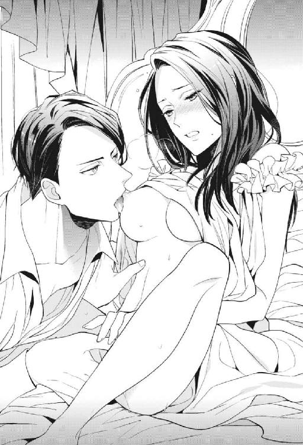
「はっ......あぁっ」
「んむ......は、良い顔になってきた、クロエ......。胸を吸われながらココを搔き混ぜられるのがそんなにいいのか」
「もっ......むりっ......」
「イけないんだろう？ 指の単調な動きじゃ。だったら、どうお願いすればいいと思う」
「あ......」
〝挿れて〟とねだれば、そう焦らさずにグレンはそれを与えてくれそうだった。私の胸を唾液で濡らしながら、彼もまたもどかしそうに、苦しそうにして欲情をひた隠している。人にねだらせようとしておいて、自分だって気持ちよくなりたいくせに。
彼を受け入れたい気持ちはあった。一刻も早くこのもどかしさから解放されたい。興奮している彼のことも、どうにかしてあげたい気もしている。──だけど、どうしても地下牢のあの子のことが頭にチラついて。流されることが私にはできなかった。
「......しない」
小さく首を横に振ってそう言うと、私の脚の間をいじっていたグレンの指が止まる。顔を見ると彼は啞然としていた。
「しない......？ 正気なのか？」
「しない。......しません。だってそういう場合じゃないもの」
体は完全に欲情していたから、説得力はあまりなかったかもしれない。
「......」
グレンは私をじっと見た後、一瞬せつなそうに目を細めた。それから、私のナカで静止していた指をゆっくりと抜き出す。
「んっ......！」
彼の節くれだった指が出ていく。私のナカが惜しむように彼の指に吸い付くようで、引き抜かれながら軽く達してしまった。
グレンは私の蜜が絡む自分の指をぺろりと舐めた。
「なっ......」
羞恥で唇をわななかせた私を見て〝ふん〟とつまらなさそうに鼻を鳴らし、グレンは私を解放した。そのまま背中を向けて、私の隣に横になる。
「......グレン？」
「興が削がれた。自分にばっかり選択権があると思うなよ。もう泣いてねだっても抱いてやらないからな」
「......」
いや、ねだりませんけど......。
すぐに臍を曲げてしまう。こんなところも、和久さんとは似ても似つかないんだけどなぁ。
私はたくし上げられたナイトドレスを元に戻した。自分とグレンにしっかりと布団をかけて、眠りにつくことにする。明日目覚めたら、この夢は二度と見られないかもしれない。そしたらもう、この人と抱き合うこともないんだなぁ。
（......気持ち良かったな、さっきの）
胸を這う温かな舌と優しくナカを探る指先を思い出し、もどかしさに少し体を捩った。隣のグレンにはバレない程度に。もしかしたらもうこんな風に愛されることもないかもしれないことを、少しだけ残念に思いながら。
私は地下牢の中の彼女の健闘を祈った。そして目が覚めたら、現実の徳山とちゃんと話そうと思った。
不器用でも前に進んでいけますように。
・・・
──ピピピピッ、ピピピピッ。
また、聞きなれたアラームの音で覚醒した。目覚まし時計を叩いて止めて、〝夢から覚めてしまった......〟とがっかりする。
「......行くか」
やっぱりどうにも憂鬱だけど、どうしたって私が向き合うべき世界はこっちだ。
頭の中で今日の作業のシミュレーションをしながら出社する。昨日は協力会社に情報を再送してもらうよう依頼をかけ、見積もりシステムにデータを打ち込んでいくところまでしかできなかった。今日は仕様書に手をつけなければ。
先輩も多少は手伝ってくれるだろう。そのときにでも、もう一度直接謝罪に行かせてもらえないかお願いしてみよう。また突っぱねられるだけかもしれないけど。──そう思っていた私に、出社一番、声をかけてきた人がいた。
「黒江」
「はい」
呼ばれて振り返る。声をかけてきたのはＡＹＵＺＡＷＡのメイン担当の先輩だった。背が高くスマートな風貌で、少し狐っぽい顔をした先輩。糸谷さん。
「午前中動けるか。もう一度鮎沢社長のところに謝りに行こうと思うんだが」
「......え？」
「一緒に来られるか、って訊いてるんだけど。徳山も行けるか？」
「はっ、はい！ 行きます！」
徳山は慌てて椅子から立ち上がり、往訪の準備を始めた。私は固まってしまって動けない。
なぜ急に？
「......昨日は、私たちが行っても余計に怒らせるだけだって」
「考えが変わった。普段から一緒に往訪していたお前たちが姿を見せないっていうのも、先方からしたら違和感があるだろ」
「そう、ですか......」
「それで、黒江は？ 急だけど行けるか？」
そんなにいきなり考えが変わるものだろうかと、なんとなく腑に落ちなかったけれど。同行させてもらえるというのなら願ったり叶ったりだ。
「行きます」
こうして私と徳山は、鮎沢社長に直接謝罪することができた。
顔を見て謝れば、社長はそれ以上怒ることもなく、〝今回のことは気にしすぎなくていい〟と寛大に許してくれた。見積もりと資料は今週中にあれば間に合うから、よろしく頼むと。私の隣で徳山は、ほっとして泣き出しそうな顔をしていた。
急速に落ち着いた事態に安心したのも束の間、私と徳山は今度こそ〝今週末〟という納期に間に合わせるべく必死で手を動かした。たまに三澤さんのほうを気にして、マメに社内の共有サーバにもバックアップを取る。こっちはアクセスログが残るし、そう簡単には手出しできないはずだ。
作業の途中、部に二人だけになった瞬間を見計らって徳山が話しかけてきた。
「黒江さん」
「どうしたの？」
「今回データが消えてしまったのって......本当は、黒江さんの過失じゃないんじゃないですか？」
「......」
昨日の私と三澤さんのやり取りを見ていた徳山は、何かを感じ取ったんだろう。直接本人に確かめてはいないけど、私は十中八九、三澤さんが黒だと考えていた。
味方をしてくれる人ができるのは有難いけれど、こんな先輩たちの面倒事に彼女を巻き込むこともない。
「......どうだろ。わかんない」
曖昧に笑って濁した。
人が少なくなるお昼時もパソコンに張り付き、黙々と作業をする。
ちょうど昼休憩の時間が終わったタイミングで、〝ポーン〟とパソコンの通知音が鳴った。見れば、社内のイントラに新着情報がアップされたという通知だった。タイトルは〝本日付人事発令〟。......四月一日じゃなくて、こんな中途半端な時期に？
首を傾げながら中身を確認する。書いてあった内容はこうだ。
〝佐々井雄吾 中国支社異動〟
「えっ」
驚いて、思わず声が出た。周囲にいた何人かが私のほうを振り向く。「どうかした？」と声をかけられることもなく、私はその場で固まる。......海外に飛ばされている......！
そうだったんだ。知らなかった。でも、じゃあ、昨日話しかけてきたとき、佐々井本人はもう異動のことを知っていたわけで。それなのに告白してきたの？ そもそもこの異動は本人の希望なのか。
ぐるぐる考えていて、ふと、夢の中のことを思い出した。確かグレンが、ユーゴを辺境の屯所に左遷したと言っていたような......？
（......いやいや）
関係ない関係ない。自分の発想に呆れながら、それでもタイムリーすぎて。何かしら繫がりがあるんじゃないかと思ってしまう。
（......まさか、とは思うけど）
突然解決した鮎沢社長との取引問題といい、佐々井の海外転勤といい。
......夢と現実がリンクしてる、なんてことは......ないですよね？
人事発令の衝撃の後も黙々と作業に励んで、午後三時。さすがにお腹が空いて限界だと思った私は、オフィスに人がたくさんいることを確認し、もう一度社内の共有サーバにデータをアップして、更に徳山宛てにも同じデータをメールで送った。パソコンの電源を一度落としてからコンビニへと向かう。もう絶対に付け入る隙を与えない。
おにぎり二つとペットボトルのお茶、それからみたらし団子を購入し、私はいつもの非常階段へと向かった。一昨日とは違って、今度はそこに和久さんがいなければいいなと願いながら。
「黒江？」
「......」
願いは届かなかった。ビル風が吹きすさぶ中、階段を下っていけば、踊り場に見慣れた後ろ姿を見つけた。その時点で私は回れ右をして引き返そうかと思ったが、響いた足音に反応して先に和久さんが振り返った。見つかってしまってはもう背を向けられない。
「お疲れ様です......」
観念して、いつもの位置に腰を下ろす。
「きみはまたそんな......寒そうな格好で」
「今日は暖かいほうですよ」
「しかもまたみたらし食ってるのか......」
「好きなんですもん。そんなこと言ったら和久さんだって、今日も煙草を吸っています」
「いいだろ煙草休憩くらい」
踊り場の柵に寄りかかる和久さんは、今日もスプリングコートを着込んでビル街に煙を吐き出している。何度見ても様になる光景に、私はつい〝この人とあんなこともそんなこともしたんだなぁ......〟と夢の中のことを思い出してしまう。夢の中で汚しまくりです。和久さんごめんなさい。
対して和久さんは、昨日言った通り、私がスーツの匂いを嗅いでいたことはさっぱり忘れたという顔で自然に接してくれる。
「昨日は大変だったみたいだけど」
「......あー。やっぱりご存知ですよね」
「隣の部だしな。どうしても聞こえてくるよ」
「一応、お許しいただけたみたいなんですが」
「そっか。良かったな」
「......」
その声に抑揚はない。だけど、すっと耳の奥に馴染んでいく優しい声だ。いつからかこの声に支えられてきた。
余韻に甘く胸をくすぐられていると、和久さんが言葉を続ける。
「本当にきみのミスだったのか？」
「......え？」
フィルムを剝きかけていた手元のおにぎりから顔を上げると、煙草をふかしている和久さんの横顔が見えた。彼は煙が私のほうへ行かないように背を向けたまま。
額から鼻筋、顎までのラインが美しい完璧な横顔が、静かな目で語る。
「物事の経緯は正確に報告しないと、後でややこしくなるぞ」
「......あぁ」
「黙って耐えることが偉いわけじゃない」
「......」
その言葉で、この人は全部知っているんだなと理解した。
そりゃそうか、隣の部だし。こんなところで昼食を食べているくらいだから、私が同僚と折り合いが悪いことは知られていると思っていた。でも和久さんはもっと正確に、私が置かれている状況を知っていたみたい。
同じ会社なんだから当たり前なのに、それでも私の気持ちは落ち込んでしまった。醜態を晒しておいて今更何を、と思うけど。情けない部分はやっぱり知られたくない。
剝いたおにぎりに口をつけられずにいた私に、煙草を吸い終えた和久さんが振り返る。
「黒江はただ大人しいだけじゃないだろう」
そう言って、また自分のスプリングコートを私に掛けてくれる。
「え、あ、大丈夫です。コートは......」
「意外と生意気なところあるよな」
「え？」
......そんな部分、私、和久さんに見せましたっけ？
戸惑っているうちに彼は行ってしまった。わずかに和久さんの香りと、煙草の匂いがするスプリングコート。......スーツの匂いを嗅いでいたような女に、よく貸しましたね......。
まさか本当に一昨日の夜の記憶を消したのか？ と不思議に思いながら、しばらく優しい匂いに包まれている。やっぱり好きだな、と思う。
お腹を満たしてオフィスに戻った。和久さんの席にコートを返して、自分のデスクに戻る。何かをいじられた形跡はない。パソコンを立ち上げ、データを確認するとこちらも無事でひと安心。さすがにこれだけ人の目があれば、勝手に私のパソコンを触ることはできないだろう。
ようやく嫌がらせに打ち勝ったと喜ぶ一方、私はいつまでこんなつまらないことに気を回し続けるんだろうと憂鬱になる。
昼食後も引き続き資料の完成に向けて作業をしていると、派遣さんが書類や郵便物を配ってくれた。自分の席に置かれたもの一式を確認する。来月行われるファッション展示会の招待状に、印刷会社のダイレクトメール。その中に混じって、企画書が返ってきていた。
一昨日部長に提出した、新プロジェクトの企画書。そこには赤いインクで〝棄却〟のハンコが捺されている。
「......」
本当に読んでくれたんだろうか？
ホッチキスで留めた部分を見ても、少しの折り目もついていない。出力したそのままの状態に思えて、私はつい疑ってしまう。頑張って作った企画書でも、最初からないものとして扱われているのではないか。もう期待されていないことは、知っているけれど。
私の社会人生活って本当に、冴えない。
「......はぁ」
ため息をつきながら、返ってきた書類を他の書類の山に重ねる。とにかく今は、目の前の見積もりと書類を完成させなければ。
そう思ったときに、さっき読んだイントラの〝本日付人事発令〟のメッセージが目についた。
「......」
もしも、だ。
もしも、夢でグレンがユーゴを左遷したことで、佐々井が海外転勤になったんだとしたら。
もしも、夢であの子がアユザ国に謝罪に行けたことで、私も徳山も鮎沢社長に謝りに行けることになったんだとしたら。
──夢で動けば、こんな現実は変えられるのかも。
絶対にそんなことはないと思いながら、私は。
早く夜が来るのを待っていた。
７．お姫様の提案書
お風呂にゆっくり浸かって、体を温めて。パックをして、髪を乾かしたら歯を磨いて。今日は万全の状態でベッドの中に入る。夢には特に影響がなさそうだけど、念のため。
昨日の夜も、その前の夜も、私はあのヘンテコな世界の夢を見た。登場する誰もが現実に存在する人と同じ顔をしていて、そんな中、なぜか私は次期王の婚約者になっていて。夢で左遷された後輩が現実では海外異動。夢でこじれた貿易に解決の糸口が見えたら、現実の仕事の取引も丸く収まっていた。
今日、これから眠りにつけば、またあの夢の続きが見られるかもしれない。もしも続きが見られたなら、私には試したいことがあった。
ベッドの中に潜り込んで、電気を消して。私は少し緊張しながら目を閉じる。こんなに構えていたら寝付けないかな、と思ったけれど、一日よく働いた体はすっと眠りに落ちていった。
・・・
朝。時計のアラームは鳴らない。
瞼を閉じていても目の前が明るい感覚。これは日光だ、とぼんやり意識した瞬間、私はほとんど確信していた。──今日もちゃんとここに来られた。
うっすらと目を開ける。そこにはイメージしていた通りの逞しい体............が、なかった。
「......えっ？」
グレンは？
前回も、前々回も、目を覚ましたときには和久さんの顔をしたグレンの裸体がそばにあった。だけど今回、ベッドにいるのは自分だけ。もしかして普通に現実で目覚めてしまった？
焦りながら体を起こす。そこは見覚えのある、一等広い部屋だった。物は少なく片付いているから、余計に広く思えて。だけど、上等な机の上には紙やインクが散らかっている。
頭の中を落ち着けて、冷静になって思い出す。ここは執務室を兼ねたグレンの部屋だ。前の夢で私は彼に直談判に来て、そのままここで眠りについた。そうだ。やっぱり前に見た夢の続きだ。エッチを拒んだことでグレンが臍を曲げてしまい、私たちは同じベッドで背中を向けて眠りについた。そして朝がきたんだ。夢はまだ繫がっている。
そろりとベッドを抜け出す。朝の光で満たされた部屋の中、グレンの姿はどこにも見当たらない。ふと、そばにあった一人掛けのソファに目がいった。そこには彼が着ていたローブが雑に掛けられている。
（......先に仕事に出たのかな）
別に昨晩甘く抱き合ったというわけでもないのに、一人置き去りにされて寂しい気持ちを覚えた。人肌恋しいのかなぁ......。眠るとき誰かの体温がそばにあることなんて、ずっとなかったから。グレンに触られることにも抵抗がなくなってきているし、段々麻痺してきているような......。
自分の部屋に戻ろうとグレンの部屋を抜け出すと、城内の人たちは活動を始めていた。部屋を出てすぐの白い空間は静かだが、そのすぐ外では行き交う人の足音と声が響いている。「リネンはもう全部運んだ？」と元気のいい女性の声を聞きながら、この格好でうろうろするのはよくないかと逡巡した。私が着ているナイトドレスは薄っぺらくて心許ない。夜みたいにまたシーツを被って移動するか。それはそれで、変な目で見られそうだ。どうしよう......。
私が白い空間の陰から廊下に向かって顔を覗かせ、辺りを窺っていると、ちょうどそこに歩いてきたメイドと目が合った。
（──っ！）
動揺して、つい頭を引っ込めた。あぁでも絶対に、目が合ってしまった。キツい目が確かに私に気付いていた。
廊下の向こうからやってきたのは、三澤さんそっくりの顔をしたメイド。ばっちりまつ毛をカールさせた吊り目に、私に対して悪意百パーセントで接してくる会社の先輩。まさかここで顔を見るとは思っていなくて、目が合った瞬間、肝が冷えた。同時にこれまで受けてきた嫌がらせの数々を思い出す。──落ち着け、大丈夫。これは夢だから。
自分に言い聞かせて、呼吸を落ち着かせる。あぁなんだか。会社ではダメージを受けていない素振りを心がけてきたけど。
震えだした脚に、本当はずっと彼女に怯えていたことを思い知る。
（弱いな......）
自分を情けなく思いながら、彼女が廊下を通りすぎるのを待つ。
「クロエ様」
「えっ」
やり過ごすつもりだった。早くそばを通りすぎて、私の目の届かないところへ行ってほしいと。だけど願い虚しく、三澤さんの顔をした彼女は、陰に小さくなって隠れていた私の顔を覗き込んできたのだ。
「な、なに......」
現実でだってこんな間近に顔を見ることはない。迫力のある派手な顔立ちに迫られて、その威圧感に息が詰まった。逃げ場がない。獲って食われるかもしれない。負けないように歯を食いしばる。
四年前から続いている嫌がらせ。決して平気なわけじゃなかった。泣かないことだけで精一杯だった。
──どうして私がこんな目に、と何度も思った。
三澤さんの顔を間近で見ていると、その理不尽さに打ちのめされそうになる。現実で容赦なく悪意を叩きつけてくる彼女が、この世界ではどんな風に私を傷つけてくるのか。心を鋼のようにして、極力ダメージを受けないように構えていた。
けれど彼女は、ふと顔を離してこう言ったのだ。
「......食堂でグレン様がお待ちです」
「......え」
「朝食をご一緒されたいとのことで、お呼びしてくるよう申しつけられました」
「あ......そう、です、か......」
呆ける私に、彼女は冷めた目で「これを」と言って、恐らく普段着用であるドレスを差し出した。
「お着替えを手伝いますか？」
「いえっ、結構です......！」
「でしたらここでお待ちしております」
（待ってなくていい......！）
温度のない声が怖くて、さすがにそれは言えなかった。現実での嫌味たっぷりな高い声もチクチク刺さって痛いけれど、何の感情もないような声もそれはそれで怖い。自分に対して良い感情を持っていないことが、声だけで直感的にわかってしまう。夢の中でだけは好意的なんて、そんな期待をしていたわけではないけど。
着替えの補助を断ってしまった手前、できもしない着衣を自分の力ですることになってしまった。メイドたちにしてもらうときのようにキツくコルセットを締めようとして、結局うまくできずに、格好だけはなんとかドレスを着て見せる。......ズレてくる！ 脱げる！
そんな姿で三澤さんの前に出ていった。当然、手直しをしてもらうこともない。明らかに不機嫌そうな背中の後を、胃をキリキリ痛めながらついていく。こっちの世界の私は、何があってこんなに彼女に嫌われているんだろう。理由とか特にないのかな......。
三澤さんの顔をしたメイドは、ここでは〝ミサ〟という名前なのだと、周りの人の会話からわかった。相当に無愛想な対応ではあったけれど、食堂に辿り着いたときにはグレンの手前ということもあってか、去り際に恭しく頭を下げられた。現実だったら絶対に考えられない。三澤さんが私に頭を下げるなんて、天と地がひっくり返ってもない。
「今朝は随分とごゆっくりのお目覚めだな、クロエ」
私が席に着くと、既に正面の席に座っていたグレンはにやにやと意地悪く笑いながらフォークでソーセージを口へ運んだ。腹の立つ言い方ではあったけれど、私は気付いてしまった。先に運ばれてきていたグレンの他の料理は、手をつけられた様子がない。
「ありがとうございます。待っててくれて」
「......別に」
ぶっきらぼうにそう言って、意地悪だった顔が目を伏せる。たった今私の前に運ばれてきたスープからもくもくと湯気が立っているのに対し、グレンのスープはすっかり冷めていた。
段々わかってきた。この人はわかりにくいけど、意外と優しい。あんまりそこをいじると機嫌を損ねるかなと思って、スープに口をつけながら別の話題を考える。人参のポタージュ。これも、最近どこかで飲んだ気がする。甘くて美味しい。
「......一緒にご飯を食べるの、初めてですね」
「ん？ ......あぁ、そうだな。初めてだったか」
「......」
......なんだろう。妙に歯切れが悪い。もしかして、初めてではない？
よく考えてみれば、私はグレンと過ごした時間に関して、夢を見るようになった一昨日からの記憶しかないのだ。一昨日以前は、私たちはどんな風に言葉を交わしていたのか。そもそも私の人格は、どうなっていたんだろう。〝まぁ夢だし〟と流して考えてきたけれど、知らないことが多い割に、この世界は精巧にできていて。
違和感がひっかかって食事の手を止めていた私に、グレンはナプキンで自分の口を拭いながら言った。
「昨日の夜にお前が言っていた、貿易を現場で取り仕切っていた女のことだが」
「はい」
──そうだった。
彼女を牢から出そうとして、「朝まで待て」と言われたんだった。間に現実の一日を挟んだせいで少し忘れていた。
千切ろうとしていたパンを手に持ったまま、グレンの言葉の続きを待つ。
「夜が明けて一番にアユザに遣いにやった。本人はまだ戻ってないが、〝事無きを得た〟とついさっき知らせがあった」
「......そうですか」
ほっとして息をつく。よかった。
地下牢で悔しそうにしていた徳山の姿を思い出す。自分の言葉で謝れたなら、今頃晴れ晴れとした気持ちでいるだろう。〝どうせ無理〟なんて思わず、行動に移してよかった。昨晩部屋を抜け出して地下牢まで行った自分を心の中で褒める。
その一方で考えていた。現実で糸谷先輩が、私と徳山が謝罪に同行することを許してくれたのは、単なる気まぐれではないんだと思う。現実と同じタイミングで破綻しそうになった貿易。夢で行動を起こしたタイミングで解決した取引。ただの偶然だとは思えなかった。
同じような影響が他のことでも望めるなら、やってみたいことがある。
「お前の話を聞き入れたんだから、今日こそ大人しくしててくれよ」
「はい。今日は自分の部屋にこもります」
「え？ いや、別に昼間のことまで縛るわけじゃ......」
「部屋でゆっくり読書でもしてますよ」
「......何か企んでないか？」
訝しむ顔のグレンからそっと視線を剝がして、パンを一口。ふわふわだ。甘いスープによく合う。
彼は釈然としなさそうにしていたけれど、政務に追われているらしく早々に席を立った。
食事を終えた私は宣言通り自分の部屋に戻った。食堂から部屋に戻る道は、有り難いことに三澤さんの顔をしたミサではなく、カノがそばについてくれた。
しずしずと歩く彼女に話しかける。
「カノ」
「はい。なんでしょう、クロエ様」
屈託のない顔で微笑んでくる。カノだけは現実の彼女とあまり変わりなくて、顔を見るたびにちょっとほっとする。
お陰でこれからする話もしやすい。三澤さんにはとても言えた気がしない。
「今日はこの後、一人にしてもらってもいい？」
「え？ お加減でも優れませんか......？」
「いや、あのね。集中して読みたい本があって」
「あぁ。それでしたら、今日はお庭でのお茶はやめておきましょうか。お部屋でご準備しますよ」
「ううん、お茶も大丈夫。本当に没頭したいから、誰も部屋に入れないでほしいの」
「そうですか......？」
カノは嫌な顔はしなかったものの、不思議そうに首を傾げていた。気難しい姫様だなって思われてしまったかも。だけど、一人になろうと思ったらどうしても気遣いを断らなければいけなかった。
「かしこまりました。では、そのように」
最終的に笑って聞き入れてくれたカノに、少し胸が痛くなりながら。私は自分に与えられた部屋にこもることにした。昼食のときだけは時間になったら食堂に行くからと告げて、その他は図書館に行く以外、自分の部屋から出ないことにしたのだ。
室内を見回して、完全に一人になったことを確認し、私は今朝にグレンの部屋から拝借してきたものを机の上に並べる。作業に取りかかる。
──夕刻になり。
「外交官って普段はどこの部屋にいるの？」
「え？ えっと......図書館の上階の奥のお部屋で、だいたいは会議をしていて」
「夜は？」
「......失礼ですがクロエ様。どうしてそんなことをお聞きになるのですか？」
さすがに質問が直球すぎたか......。
日が暮れて、夕食を終えた後の部屋までの帰り道。今回はカノではなく、受付のお姉さんの顔をしたメイドが私についてくれた。最初にこの世界に来た日に、お姉さんは〝ルミ〟と名乗った。現実で確認すると、彼女の名前は千葉成美さんだった。
知らない顔ではないし......と期待して質問してみたのだが、カノのように快くは教えてくれない。それもそうか。そもそも夜は、出歩くのが禁止されているし。......なるべく噓はつきたくないけれど、致し方ない。
「グレンに言われたの。もしも夜に急を要することが起きて、グレンを頼れない状況なら外交官を頼りなさいって」
「はぁ......」
「そう言われたものの、夜にその外交官がどこにいるのか私、知らないなと思って」
「外交官といっても、何人かいますが」
「トップの者を頼れと」
「キド様ですか？」
ルミさんはしばらくじっと私の顔を見ていた。明らかに疑っている......。私も自分で言っておきながら、噓くさいなと思う。
外交官のトップは〝キド〟という名前らしい。信じてもらえたわけじゃないだろうけど、立場的に私の質問を突っぱねることもできなかったんだろう。ルミさんは渋々口を開いた。
「城で働く者は皆、基本的に別棟に部屋を与えられています」
「あぁ......食堂に行くときにいつも窓から見える建物？」
彼女は頷く。本当に言ってもいいものか、まだ口が迷っていた。
「ですが、外交官のトップとなれば話は別です。本当に急を要することが起きた際、王様とすぐ連絡が取れるように、キド様のお部屋は王族の間の近くに置かれています。今は夜間に出歩くことが禁止されているので、本当によっぽどのことがなければ、王様が訪ねられることはないと思うのですが......」
王族の間の近くか。それはきっと、グレンの部屋がある、あの白い空間のことだろう。そこまでわかれば辿り着けそう。
「教えてくれてありがとう。助かりました」
「いえ」
「ルミさん、城内のことに詳しいんですね」
「......これくらいでしたら、この城に仕えるメイドのだいたいが知っていますわ」
「そうなの？ ちなみにその外交官は、どんな人？ 気難しいのかな......」
ルミさんは口元のセクシーなホクロに触れながら、少しの間言葉に迷って。
「素敵な人です」
そう言った。
ルミさんに着替えを手伝ってもらい、就寝の準備をする。髪を梳かしてもらって、寝付きやすいようにと用意してもらったホットミルクを飲んでひと息。後はベッドの中に入るだけという段になると、ルミさんはお決まりの挨拶を口にする。
「では、クロエ様。今夜もお気をつけて」
「ええ。ありがとう」
受付で応対しているときの上品な顔に微笑まれて、私も精一杯感じよく笑い返す。最初の夜には意味がわからなかったこの言葉も、今なら〝夜は大人しくしていなさい〟ということだとわかる。それを聞き入れるかどうかは別として。
結局私はこの夜も、みんなが寝静まるのを待ってから自分の部屋のドアを開いた。昼間に部屋にこもってこしらえたものを腕に抱えて、ベッドのリネンを羽織ってこそこそと移動する。
初めてここに来た夜こそ、ユーゴに襲われてしまったけれど。グレンが城中の人に夜出歩くことを禁じているお陰で、逆に安全なのではないかとも思う。地下牢に行った夜だって、誰にも出会わなかった。もし王位奪取を目論んで私の体を狙う人がいたとしても、こうも私が夜に部屋の外を出歩いているとは思わないだろう。
ルミさんの話に従って、王族の間の近くまでやってきた。すぐそこにグレンがいると思うと緊張する。見つかれば絶対に怒られる。目的を達するためにも、見つかるわけにはいかなかった。
物音をたてないようにそろりと王族の間の前を通りすぎ、外交官の部屋を探す。緊急事態に備えて、王族の間からそう遠くはない場所に設けられているという部屋。ルミさんにもう少し詳しく位置を聞いておけばよかった。私は手当たり次第、部屋の扉に耳をぴとりとくっつけて中の様子を窺うけれど、大抵の人は眠っているはずなので特に何の音もしない。これでは部屋が見つけられない。
一部屋ずつ順番に扉に耳を当てていって、四つ目の扉を確認する。今日はもう撤退して、また明日もう少し正確に場所を把握してから、出直すべきかと考えていた。そのとき。
（......え）
〝あっ〟と小さく、女の人の声が聞こえたような気がした。今耳を当てている扉の向こうから。
この部屋の人はまだ起きている？ もう少しよく聞こうと聴覚に意識を集中する。すると今度は、よりはっきりと聞こえた。女の人だけじゃない。男の人の声も。
『は、あ、んんっ......』
『は......もう少し声を抑えなさい』
『でもっ、あっ、キド様のがっ......擦れてっ......』
『あぁ、最高の締まり具合だ。すごくイイっ......』
......あっ、えっ......。えっ？
想像もしなかった音が聞こえてきて、思わず扉から耳を離した。これは......致してますよね!?
女性の声は確かに〝キド様〟と呼んでいた。だから、男のほうは外交官のキドで間違いないんだろう。私が今晩会いたかった人物だ。でも、とても部屋を訪ねていける状況じゃない。
どうして中から女の人の声がするんだろう。私が言うのもなんだけど、夜は出歩くのを禁止されているのに。お忍びでやってきてこんなことを......？
これは聞いちゃいけないやつだと思って、バクバクと鳴る心臓を抑え、扉に背を向けて座り込んだ。えらい現場にやってきてしまった......。せっかく部屋を見つけたけど、これはもう出直すしか。でも、また次もこの夢を見られるという保証もないし。
私が頭を悩ませているうちに、背後から聞こえてくる声はどんどん大きくなる。
『は、あんッ......！ キド様ぁっ......！』
『あぁ、ほんとにいやらしいな。ここも、こんなに大きく腫らして......』
『はっ......いけませんっ......一緒に触られては、もうっっ』
『たまらないんだろう......？ 私の上で淫らに体を揺らして。最高だよルミっ......もう出しそうだっ』
（......ルミさんっ!?）
不意に聞こえてきた名前に耳を疑う。ルミさん！ 何してるのルミさん!!
漏れ聞こえていた男女の情事。急に頭の中に像ができあがる。見知らぬ男女だと思っていたら、女性のほうはさっきまで一緒にいたルミさんで。いつも会社で顔を見ている受付のお姉さんが、あの大きな胸を揺らしているのを想像してしまって、私は赤面した。生々しいッ......！
変だとは思っていたのだ。彼女は外交官の部屋についてやけに詳しかったし、キドの印象について聞いたときに「素敵な人です」と恥ずかしそうに答えていたから。もしかして恋でもしているのかなとあの時は思った。まさかデキていたとは......。
予想外の衝撃に私が打ちのめされている間に、二人の行為はエスカレートして終わりを迎えていた。後に聞こえてきたのは息の荒い二人のピロートーク。
『キド様、もう少し......』
『ダメだ。そろそろ自分の部屋に戻りなさい』
『でも』
『グレン様に罰せられたくないだろう......？』
『......』
『愛してるよルミ。こうして部屋に来てくれるのも嬉しい。でも、こんなことがバレれば私でもきみを庇いきれない』
......罰せられるのはキドも同じなのでは？
聞き耳をたてるのをやめられずにいた私は、彼の言葉に心の中で突っ込む。バレて困るのは自分も同じでしょうに。さもルミさんのために〝自分の部屋に戻れ〟と言うけれど、こうして聞いていると自身の保身のための言葉に思えた。
程なくしてキドの部屋の扉が開き、中からルミさんが出てくる。彼女はリネンを頭から被って顔を見えにくくしていた。万一目撃されたときに逃げ切るためだろう。
私は彼女がキドの部屋から離れるのを、階段の陰に隠れて待っていた。すぐにあの現場に行くのは生々しくて嫌だ。でも、寝付かれて私の話を聞いてもらえないのも困る。
タイミングを見計らって、階段の陰から飛び出しドアノブに手をかけた。さっと中に入る。
「ルミっ......？」
ビクッとしてこちらを見た男は、ルミさんが戻ってきたと思ったのだろう。眠ろうとしていたところらしく、布団を肩まで被っていた。
男の顔を見て、私のほうが戦慄する。
（......西木戸部長......!!）
キドと呼ばれ、外交官のトップを務めるこの男。さっきまでメイドの一人であるルミさんと情交に耽っていたこの男は......私の直属の上司。ファッションアパレル部の部長、西木戸孝貴だった。
「......クロエ様、ですか？」
彼は、私の来訪に心底驚いて目をパチクリさせていた。
ルミさん連れ込んで何してるんだあんたは......！ っていうかご結婚されてましたよね!?
上司にそう突っ込みたい気持ちをぐっと堪えて、私は今晩の目的を果たそうと落ち着いた声を出す。
「夜分に押しかけてごめんなさい」
「はぁ、どうかされましたか......？ というか、部屋を抜け出されてここへ......？」
「お願いがあって来ました」
彼がどんどん不信感を募らせていくのがわかったので、早々に本題に入る。私は腕の中に抱えていたものをキドのベッドの上に広げた。辺りに立ち込めるインクの匂い。
「......これは......？」
ベッドから体を起き上がらせながらキドが尋ねる。私はそれに、はっきりとした声で返事をした。
「新しい貿易の提案書です」
──私が今朝、グレンの部屋から拝借した物は、紙とペンとインク。それらを持って自分の部屋にこもり、半日かけてこの提案書を仕上げていた。その内容は、現実の世界で読まれもせず棄却された企画書と同じもの。そっくりそのままこの国の事情に置き換えて書き上げた。
奇しくもキドは、私が企画書を提出した相手である西木戸部長と同じ顔をしている。
「貿易の提案書......？」
「きちんと読んでください」
「クロエ様が書かれたのですか？」
また、侮るような目を向けられる。
「こんな夜更けにわざわざ掟を破ってまで......。熱心なことですね。一体どうされたのですか？ 政治に興味が？」
「......」
言葉こそ丁寧だけど、〝名ばかりの姫様が何を持ってきたかと思えば......〟と馬鹿にされているのが透けて見える。その証拠に、彼は私が渡した紙束を一枚も捲ろうとしない。それどころか、手に取ることすらしなかった。
私の身分が逆転している世界とはいえ、結局自分が置かれている状況は変わらなくて、悔しい。〝黒江だから〟と言われのない理由で切り捨てられて、誰にも本気を受け止めてもらえない。所詮こんなものだと、わかっていた。
でもこのままは嫌だから、願ったのだ。
「......特別な目で見てくれなくていいんです」
震えそうな声を絞り出す。お腹の前で指を組み、祈るようにつぶやいていた。
「ただお願いだから、他の案と平等に並べて見てください。目を通して、まったくダメだと思ったら火にくべてもらって構いません。お願いだからっ......」
言葉にしているうちに目の奥が熱くなってきて、泣きそうなのを悟られないように顔を伏せる。ベッドの上の提案書を手に取ってキドに押し付けた。その表情は見えない。
「お願いだから......中身を見る前から、ゴミにしないでっ......」
キドがルミさんと密会しているのを聞いてしまったとき、ほんの一瞬だけ、〝これをネタに提案を通してもらえるんじゃ〟と考えた。
だけどそんなことに意味はない。優遇されたいわけじゃない。ただ、ちゃんと見てほしい。少しでいいから興味を持ってほしい──そう願って、今晩ここに提案書を持ってきた。
「......」
必死で訴えかけても、彼が提案書を受け取る様子はない。
（やっぱりダメか......）
提案書を持つ手の力が抜けていく。私の心が挫けかけたとき、ガチャリと扉が開く音がした。私とキドは慌ててそちらを振り返る。
「──クロエの声がすると思えば」
そこには仁王立ちするグレンがいた。
（......終わった）
怒りに満ちた目を見て、ここまでだと悟る。
「ぐ、グレン様っ......」
「悪いなキド。うちのじゃじゃ馬な姫が、邪魔をしたようで」
グレンは冷たくそう言い放つと、すぐにそばまで歩みを進め、私を抱え上げた。
「ひゃっ!?」
ふわっと体を持ち上げられて、肩に担がれる。その拍子に手の中の提案書がはらはらと床に落ちた。
「ちょっと、グレン......！」
「口を閉じていろ、クロエ。......キド。今夜ここにクロエが来たことは誰にも言うなよ」
「承知いたしました......」
ベッドから這い出て深く頭を下げるキド。その足元に散らばる提案書。
グレンの肩の上で揺られながら、景色が遠ざかってく。また想いは届かない。
「......グレンっ......」
「黙れよ。何度言えばわかる？」
「......」
「俺は、お前に甘すぎたみたいだな......」
そう言って彼は私を抱え、王族の間を通り抜けて自身の部屋の扉を開いた。私が今朝目覚めた場所だ。後ろ向きに抱えられていることで部屋の様子は見えないまま、ベッドの上に放り投げられる。
「ひゃっ！」
ベッドのスプリングで軽く体が跳ね上がる。もがいてシーツの上を泳ぎ、体勢を直しているうちにグレンの顔が間近に迫っていた。
彼は私が纏っていたシーツを握って細くすると、柵状になっているベッドフレームに私の両腕を縛りつけはじめる。
「えっ、ちょっ、と......嫌っ......！」
「キドの部屋で何をしていた？」
グレンは、決して解けないように、でも腕が痛くならないように加減して結び目を作りながら、私に質問をした。
私は手際よく縛られていく腕に動揺しながらそれに答える。
「提案書を......」
「提案書？」
怒っていたグレンの目がほんの少し丸くなる。
本当のことを話すのは憂鬱だ。彼がどんな感想を持つのか、怖いから。
「......ノズワルドがアユザに提供できるのは、植物そのものだけではないと思うんです。それをどう活用すれば売り物になるかという知見も、たくさん持ってる」
現実でも常々思っていた。打ち合わせに行くと鮎沢社長は「ノズワルドは頼めばいろんな資料やデータを出してくれて助かるけれど、アイデアが足りない」とよく口にしていた。「私の手となってくれる人よりも、知恵を貸してくれる人が欲しい」と。
だからずっと考えていた。考えて、上司に案を提出するたびに〝棄却〟で戻されていた。鮎沢社長の手に届く前に、企画はすべてゴミ箱の中。
読んでもらった上で内容がイマイチだったならそれも仕方ない。だけど、読まれてすらいないのだとしたら。〝黒江のあげてきた企画なんて〟と、はなからゴミ箱行きにされているのなら、そんな現実は変えたかった。
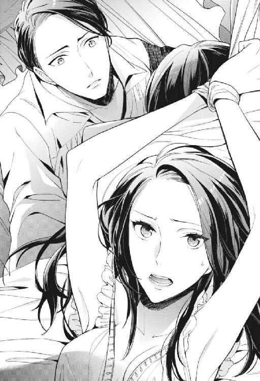
「一度見てみてほしいと、キドにお願いに行っていました」
「......お前が、自分で？」
「......〝小賢しい女だな〟って、思いますか？」
おどけて言ったつもりが、思った以上に自虐的に響いた。彼は鼻で笑うだろうか。
この世界ならもしかしたら、まだ話を聞いてもらえるかもしれないと思った。だけど結局〝次期王の婚約者〟も心の中では見下されていて。言葉は誰の心にも届かない。きっとグレンも......と半分諦めていたところ、くしゃっと頭を撫でられる。
「えっ」
「〝小賢しい〟なんて言って自分を下げるな。お前は賢い」
「......」
「自分の頭で考えるのは、少しも悪いことじゃない」
（......ああ）
和久さんの顔で微笑まれて、目の奥が熱くなる。大好きな柔らかい表情。たぶん、私だけが知っている。頭上で腕を縛られているなんて状況も一旦忘れ、私はうっかり泣きそうになっていた──大好きだ。好きで苦しい。
グレンはすりっと私の頰に手を滑らせた。特に官能的なわけでもないその動きに、ぞくっと自分の体が嬉しそうに震えるのがわかる。
「キドのチェックを通さなくても、俺のほうに直接持ってくれば楽だっただろうに......」
「......裏技的なことでは、意味がなくて」
「ズルができないんだな、お前は」
「だってちゃんと認められたい」
それも考えなかったわけじゃない。夢の中の自分は〝次期王の婚約者〟なのだから、その地位を利用してグレンに企画を通してもらうこともできると思った。だけどそれは、企画の良し悪しとは別の話。
特別扱いされたいんじゃない。平等な目で見てほしい。〝落武者黒江〟だなんて、最初から見限ったりなんかしないで。
「お前に目的があったのはわかった。でも俺はお前に、夜は出歩くなと言ったはずだ。昼間ではダメだったのか」
「昼間たくさんの人の目がある中じゃ、次期王の婚約者が地位をかざして好き勝手しているように見えるでしょう」
「それは、確かにあまり見え方はよくないが......だからって夜中に出歩くのは褒められたことじゃない」
厳しい目で見つめられて、怖い。
怖いけど、怖いだけじゃない──ドキドキする。
グレンは私を見下ろして、声を抑えて囁いた。
「──朝までお仕置きだ、クロエ」
甘いとも、冷たいとも、どちらともつかない声だった。
８．庭師を攻略せよ
パン！ パンッ！ と、肉のぶつかり合う鈍い音が部屋に響いている。
「はッ......あ、っ、んんぅっ......！」
「腰が落ちてる、クロエ。......ほら、もっと尻を突き出せ」
「あぁんっ!!」
何度目の行為なのか、もうとっくに数えられていなかった。両手はずっと頭の上で固定されたまま。体の自由が利かない私にグレンは、大きく脚を開かせて執拗なまでに秘所を口で愛撫した。その快楽に耐え切れなくなって私が泣き出した頃に、今度は自身を挿入して激しくナカを穿った。
──今は私の体を転がして、前から、後ろからと、何度も何度も欲望を突き立て続けている。
「はッ......もう一度訊くぞ」
またか......。一定のペースで打ち付けられる腰に、その一突き一突きに体を震わせながら、拷問のように攻め立ててくる行為に耐えていた。さっきからずっと、一つの約束を交わさせようと躍起になっているグレン。
彼は先ほどまでよりも抽挿を深くしながら、息を切れ切れにさせて問いかけてくる。
「夜中っ......自分の部屋に入ったら......朝が来るまでは、出ないこと。っ......いいな？」
「あんっ！ んっ、ふっ......んんっ......」
「返事は」
「ひあぁっ!?」
グリッ、と奥を擦られる。もうずっと体が痺れていたのに、そうされてまたお腹の辺りが熱くなって、足の爪先にまで力が入って。
ベッドフレームに繫がれた両腕をよじりながら、シーツの上で這いつくばっている。
「返事だ、クロエ。......わかったって言うまで、ずっとこのままだぞ。お前が何度達しても、抜かずにこうして突き続けてやる」
「ひっ、あ......はぁんっ......！」
それってなんて絶倫......！
冗談じゃない。そんなことされたらおかしくなってしまう。私は口の端から唾液をこぼし、けれどそれを拭う自由もないまま、感じすぎて痛いくらいになっていた。この辺りでやめてもらわなければ、本当にもう、ダメになってしまう。
だけど、今後一切夜に出歩いてはいけないというのは......。
「あんっ、あんっ！」
夢での私の立場からして、夜ほど自由にできる時間は他にない。昼間には到底行けないような場所も、二人で会話をすることが叶わない人も、夜なら行けるし話し合える。
変えたい現実のことを思えば、できればこんな約束はしないで済ませたい。
「......強情だな。こんな簡単な約束もできないのか」
「はっ、あっ......んんっ!?」
不意に、グレンが私の脚の間の尖りに触れた。後ろから深いところを繰り返し犯しながら、腰の動きを止めることなくクリクリと捏ね回してくる。
「あっ......それ、いやぁっ......！」
「刺激が強い？ ......苦しそうにして。ナカもこんなにうねらせて、いやらしい」
「やめっ......」
痛い。ジンジンと、疼きすぎて痛い。こんな痛みがあるなんて知らなかった。
そして困ったことに、この痛みは複雑で。突かれれば痛いのに、それでももっと奥を突いてほしいとねだりたくなってしまう。矛盾した痛みだった。
「はっ......はぁーっ......」
目尻から涙をこぼしながら後ろを振り返る。
人前では絶対泣かないと決めて生きてきたはずなのに、快楽の前では意地も理性も無力だった。勝手にこぼれていってしまう。グレンはそれをぺろっと舐め取ると、今度は首の後ろに顔を埋めてくる。
「ふっ......」
「......まだわかったと言わないのか。たいした根性だよ」
「あっ......」
首の後ろに口づけられ、気持ちよくて身じろぎする。うなじに感じた水っぽい感触に背中が震え、それがどう伝わったのか、私の意思と関係なく、ナカの雄々しい棒をきつく締めあげてしまうのがわかった。
「ん......また締めた。なかなか折れないのは、もっといじめてほしいから？」
「違っ......」
「だってそうじゃないか、クロエ。噓でも〝わかった〟と言えば解放されるのに」
「えっ......は、ふぁっ、あぁぁぁんっ」
うなじに強く吸い付かれながら奥深くを抉られる。キュウキュウと締めるナカの動きをものともせず、押し拓くように強く、深く。お尻に下腹がぶつかる音を響かせながら。
「クロエッ......可愛いよ、クロエッ......」
「あんっ......あっ、んぁっ」
名前を呼びたかった。高ぶってどうしようもない気持ちを、どうにかするために。だけど〝和久さん〟と呼べばいいのか、〝グレン〟と呼べばいいのか。快感で焼き切れそうな頭では、判断がつかなかった。
「クロエッ......！」
「ふっ、あ！ っ、出てっ......」
出てる。
熱い飛沫を吐き出された感覚にぶるぶると震え、結局──私は名前を呼ぶことができないまま。
この世界で子どもを授かったら、現実の私はどうなるんだろう......なんてことをぼんやり考えながら、意識は深く深く沈み込んでいった。
・・・
──ピピピピッ、ピピピピッ。
その音を聞いて〝あぁ現実だ〟と即座に思う。布団に潜ったまま手だけを頭上に伸ばして、アラームを止める。目が覚めて一番に思った。
（なんっ......なんっっって恥ずかしい！）
なんだったの昨晩のアレは......！
気をやるのと同時に目が覚めたから、体がまだその感覚を覚えている。上にのしかかる男性一人分の重みも、内側を穿つ激しさも。つい今しがた起こったことのように私の体を震えさせた。精をナカに放たれた感覚も。ベッドに一人だというのに、変な気持ちになってしまって体がもぞもぞする。これでまだ現実の私は処女のままだというんだから、随分といやらしい体になってしまった。明らかに感じやすくなっている己の体を恥じる。
縛られた腕のヒリつく感覚もリアルだ。だけど自分の両腕を確認しても、アザも何もない。綺麗に白いまま。夜通し彼に愛された痕跡は、私の体のどこにも残っていなかった。
（......あーあ）
計画が失敗に終わったことを思い出す。
夢の中でこしらえた提案書は、ついにキドに読んでもらうことが叶わなかった。読んでもらうことさえできれば、何かしらの評価はもらえると思った。あとひと押しが足りないのか、それとも企画としてまったく実現性のないものなのか。
結局、提案書を読んでもらえないままにグレンに見つかってしまったから、現実も変わりようがない。
「............はぁ。会社行くか......」
オフィスに足を踏み入れて一番に、離れたデスクで和久さんがコーヒーを飲んでいるのが目に入った。相変わらず、みんなの前では険しい顔をしている。眼鏡の上の眉間には深い皺。
あまり見つめていると目が合ってしまうかも。目が合ってしまったら、昨晩を思い出して耐えられる気がしないので、そっと視線を剝がす。
肩に掛けていたバッグをデスクに下ろして。ふと、そこに置かれていた紙に目が止まった。見覚えのあるＡ４サイズの書類。昨日までは、表紙に赤くはっきりと「棄却」のハンコが捺されていた企画書。
今見ると黒ペンで「棄却」の上に大きくバツが書かれ、隣には新たに「採択」のハンコが捺されている。
「え？」
なんで？
自分の目を疑ってぽかんとしていると、誰かが私の隣に立った。ふと視線を上げる。そこに立っていたのは、こちらを見ずに企画書に視線を落としている西木戸部長だった。
「提案を許可する。微修正だけ頼むぞ」
目の下に刻まれた深い皺を動かすことなく、静かにそう言った。口ぶりからして、西木戸部長自身が「棄却」を撤回したようだ。なぜ判断を覆したのか？
不思議な気持ちで上司の横顔を見つめる。
「......」
「黒江。返事は」
「あっ、はい......承知しました」
企画が通って嬉しい。だけど、どうして？ 夢の中で、私の提案書は無残に床に散らばって。きっとそれっきりだと思っていた。
西木戸部長は重たそうな口を開く。
「あらためて読んでみると悪くなかった。細部さえもう少し詰めれば、得意先にも受け入れられそうな企画だと思う」
「あの......どうして急に」
「修正箇所は付箋を貼っているから」
「......」
理由は教えてくれないらしい。〝質問は受け付けない〟とでも言うように、西木戸部長の横顔からは不機嫌オーラが漂い始めた。〝やっぱり棄却だ〟なんて言われてもかなわないから、それ以上追及することもできない。
（......そんな怖い顔されても）
いつもとっつきにくいなぁと思っていたその顔は、昨晩夢で見たキドの顔と重ねると、なんだか急に威厳をなくした。まさか、現実の西木戸部長まで、受付のお姉さんとデキてるなんてことは......。
私は出来心で尋ねていた。
「......西木戸部長？」
「なんだ」
「受付に、千葉成美さんって──」
ガタッ！ と大きめの音がして、何かと思って見ると、西木戸部長が私のデスクに脚をぶつけていた。私まだ何も言ってない。名前を出しただけでその反応は......絶対に黒！ 不倫確定!!
現実でそんなことになっていたとは知らなかった......。しょっぱい気持ちになりながら会話を続ける。
「......千葉成美さんって、受付にいるじゃないですか」
「......受付の？ 顔はわかるが、そんな名前だったかな」
「お綺麗ですよね」
「まぁ......うん......」
「......」
噓、ヘタですね......。これは周囲にバレるのも時間の問題だと思ったので、そっとしておくことにする。
企画の件は、もうてっきりダメだと思っていた。だけどキドはあの後、散らばった提案書を読んでくれたのかもしれない。それを悪くないと思って、進めてくれたのかも。
──何にせよ。
夢で動けば、現実を変えられる。
その確かな実感を手にすると、次に変えたいことはすぐに頭に浮かんできた。
・・・
「二人の仲が悪い理由ですか？」
夢の中。グレンのベッドで目を覚ました私は起き抜けに髪を梳かしてもらいながら、カノに質問をしていた。
「ええ。法務官と財務官って、きっと仲が悪いでしょう？」
実際のところ、この世界の法務官と財務官が会話をしているところなんて見たことがないし、その仲がどうかなんてことは知りようがなかった。だけど私は、仲が悪いに違いないと踏んでいた。それは現実で見ているから。法務部長と経理部長がお互いに雑務を押し付け合うせいで、私はずっと仕事をたらい回しにされて困っていたのだ。
どうにか二人を仲直りさせて、現実での仕事を進めやすくすることはできないか。今度はこの現実を変えようと思っていた。
カノは、私の髪に丁寧に櫛を通しながら困った声を出す。
「うーん......仲が悪いらしいとは聞いたことがありますが......。ごめんなさいクロエ様、その理由まではちょっと存じ上げません」
「そう......」
カノなら知っているだろうという見当は外れてしまった。グレンの動向にもやたらと詳しかったカノなら、何か知っているかと思ったけれど......。その辺の事情に詳しそうな、別の誰かを探さなければ。
前の夢で〝物知りだなぁ〟と私が感心したルミさんは、今になればあれはキド絡みの話だったからだとわかる。外交官のトップの部屋の位置は、〝この城に仕えるメイドのだいたいが知っていること〟なんかじゃなくて、キドに恋をしている彼女だから知っていたことなんだろう。好きな相手の情報は意識して集めてしまうもの。
「私は存じ上げないのですが......」
「え？」
後ろを振り返ると、私が尋ねたことをずっと考えていてくれたらしいカノがふわっと笑った。なんだか懐かしい気持ちになって、癒される。
「庭師なら、知っているかもしれませんね」
「庭師......？」
「ええ、この城で一番の情報通です。彼女なら、法務官様と財務官様の不仲の理由も知っているかも」
「彼女......？ その庭師は、女性なの？」
「女庭師です。名はキリコといいます。庭師という職業柄、いろんなところに入っていきますからね。中庭だけじゃなく城裏の生垣も手入れするから、内緒話もよく聞くそうで。枝の剪定で木にも登りますから、二階より上の会話も筒抜け......なんて話も聞いたことがあります」
「地獄耳なのね......」
地獄耳のキリコ。その特徴と名前から、私は現実のある人物を思い浮かべた。ノズワルドの女性広報部長、乙島桐子。社内報の編集長でもある彼女は、会社中の噂話を掌握している......という噂を、私も聞いたことがある。
相手が女性なら、貞操を狙われることはないだろうけど。なんとなく厄介な相手な気がする。現実でもほとんど接点がない乙島広報部長。たまに喫煙所に入っていくところを見かける彼女は、顔に対して少し大きな眼鏡をかけていて。明るい髪色とピアス。気だるげで、年齢不詳の外見。私の中の総合的なイメージは〝魔女のような人〟だった。
（行かないことには仕方ない......）
現実での仕事を、今よりもっとスムーズに進めたい。そう願うから、私は重い腰を上げる。カノから〝最近キリコは植物園でサボっていることも多い〟という情報を得て、植物園に向かった。
「二人の仲が悪い理由？」
キリコは紅茶を一口すすりながら、眼鏡の奥の目を丸くした。彼女の容姿は予想した通り、現実の乙島広報部長と同じ。格好だけは庭師らしくつなぎ姿だ。
私は初めてまともに対面する、気だるげで妙に色気がある彼女の雰囲気に戸惑っていた。勧められた紅茶を頂きながら。
「ええ。法務官と財務官の仲がどうして悪いのか、情報通のあなたなら知っているかと思って......」
「クロエ様はどうしてそんなことが気になるの」
やっぱり理由は訊かれるか。前回ルミさんに不審がられたことから学習した私。にっこりと笑って、用意してきた理由をもっともらしく語る。
「グレンの手足である二人の仲が悪いなんて、彼の仕事に支障が出そうでしょう？ 二人には仲良く協力して、グレンの力になってほしいの」
「なるほど。未来の妻の愛というわけですね」
「そういうことね」
「噓くさっ！」
「えっ」
うんうんと頷きながら聞いてくれるから、てっきり信じてくれたものかと思ったら。そんなことはなかった。キリコは他の人が見せるような恭しさもなく、不信感丸出しで私のことを見てくる。
「う、噓くさいって？」
「そのままの意味ですよ。今のクロエ姫のお話は噓だと思うなぁ。だって、そういう無償の愛みたいなお話って、現実にはないじゃないですか？」
「そんな......」
あぁほらやっぱり！ やりにくい相手な気はしていたけども......！
言われた私はチクりと胸が痛い。無償の愛ではないどころか、私は現実の自分の仕事がスムーズに進むように、百パーセント自分のために動いているのだ。だけどそんなこと、正直に話そうにも説明のしようがないし。
「っ......」
どうしたものかと困って紅茶をもう一口。私が言葉に詰まっていると、キリコは頰杖をついてニヤッと笑った。
「そんな困った顔しないで、クロエ様。別にあなたをいじめたいわけじゃないんだよ。......いや、いじめたいっちゃいじめたいんだけど。でも敵になるつもりはないから」
「はぁ......」
えっ、結局〝いじめたい〟って言われている......？
困惑する私に、キリコは楽しそうに話を続ける。
「私ね、今日あなたがここに来てくれたことが本当に嬉しいの。ずっと興味があったから。特に最近は、顔つきが凛々しくなって以前にも増してお綺麗になられたってもっぱらの噂だもの。ぜひお話ししてみたいって思ってた」
「それは、嬉しいわ。ありがとう」
引きつりそうな顔をどうにか笑わせてみる。やりにくい。やりにくいぞ。だけど完全にキリコのペースにされてしまったら、私が知りたいことは教えてもらえないままだ。
なんとか会話の主導権を奪い返せないものか。考えながら、また静かに紅茶をすする。
「私もどうしても話が聞きたかったから、見つけられてよかった」
「あ、それも気になってた。どうして私がここにいるって？」
「メイドが教えてくれました。最近はここでサボっていることが多いって」
「失礼な！ サボってないわよー！ 知的探求心から、ここに面白いものがあるって知っただけ」
「面白いもの......？」
心外そうに唇を尖らせるキリコを見ながら──少しの違和感を覚える。なんだか、熱い。体温が上がってきた......？
喉元から、胸の奥、そしてお腹の辺り。じわじわと熱くなっていく感覚。自分が何かしくじったかも、という思いが浮かび、震える手を抑えながらティーカップをテーブルに置く。植物園の真ん中に、不自然に用意された丸テーブルに、チェア、ティーセット。庭師とはいえ、公共の植物園に好き勝手にテーブルセッティングしていいの？ と違和感はあったけれど。お願いをしにきた身で、淹れてもらった紅茶に口をつけないのも感じが悪いし......。そう思った私は、勧められるままに紅茶を飲んでしまった。
だけど感じが悪くても、飲むべきではなかったかもしれない。
「......中に何か混ぜた？」
私の問いかけに、キリコはふふんと笑う。否定する様子はない。彼女はまったく平気そうで、キリコの紅茶には何も入っていないらしい。......何を飲まされたのか。それを教えてくれることなく、彼女は楽しそうに話し続けた。
「サボってるなんてほんと心外。私のような情報通は本来、とても真面目で研究熱心な生き物なのに」
その言葉の意味を考える間にも、頭がふらついてくる。体温の上昇も止まらない。自分の胸の真ん中に手を当てて、はぁっ、と息を吐く。それでもまったく治まらない。
「別にゴシップだけに興味があるわけじゃないのよ。人間全般に興味がある。例えば......綺麗で凛々しいお姫様が、その顔の裏にどんな欲望を隠し持っているのか、とか」
「......え？」
「飲んでもらったのは媚薬的なものよ、クロエ様。〝ショコラの実〟っていうのが最近、この植物園に生えるようになってね。変種なんだけど......理性がトんじゃうんだって。すごくない？」
それを紅茶に混ぜましたー！ とケラケラ笑うキリコの声。段々その声が遠くなって、気付けば私はチェアから落ちて、地面に膝を突いていた。着せてもらった綺麗なドレスに泥がつく。そんなことを気にしている場合じゃない。
〝媚薬的なもの〟と彼女は言った。ショコラの実を混ぜたと。......そういえば最近、チョコレートが古来〝媚薬〟になると信じられていたと、何かで読んだような気がする。そんなちょっとした知識が、夢ではこうして仇となる。こんなことなら知らなきゃよかった。
「はぁっ......」
体に力が入らない。地面に膝を突いたままうつむいていると、グイッと顎を持ち上げられる。キリコがそばに屈んでいた。値踏みするような目を向けられる。
「昼間は安全だなんて、グレン様は意外と平和ボケしてらっしゃるのよね......」
「......」
「確か、婚約者を寝取ったら次期王になれるんだっけ？ 契れば私にも権利あるのかしら」
「っ!?」
「ふふっ、噓よ。びびっちゃって可愛いなぁ」
う、噓か......。
女性が相手なら体を狙われることもないかと、正直なところ油断していたから。一瞬〝キリコはレズだったのか！〟と思って身の危険を感じてしまった。......いやいや。危険なのには変わりない。私は体の自由を奪われている。
「王位に興味はないけれど......あなたには興味がある、クロエ様」
「ひぁっ!?」
言いながらキリコは、私のドレスのスカートを捲りあげた。その下のパニエも捲り、露わになった太腿の内側を撫でる。
「ふっ、うっ......」
触れられたところからビリビリと電流が走るような感覚。グレンに触られてもここまでの刺激は感じない。明らかに、飲まされた紅茶の作用だった。
逃れようと地べたに這いつくばる私の体を、キリコは逃してくれず、ドレスの下をまさぐる形で肌に触れてくる。
「は、あぁっ......」
「ふふっ......気持ちいい？ もっと乱れていいよ。本当のあなたが見たいの」
「......本当の私？」
キリコはさらっと私の前髪を撫でながら、妖艶に微笑んで見せる。
「特に最近はアクティブで、夜に部屋を抜け出しちゃうようなお姫様が、一体何を望んでいるのか。すごく気になる」
「っ、どうしてそれを......」
なぜ、夜に私が部屋を抜け出したことを知っているんだろう。誰かが話した？ でも、グレンはキドにも口外してはいけないと口止めをしていた。
キリコは答えてくれない。
「夜に抜け出して......グレン様に抱いてもらいに行っていたの？ 我慢できなかった、とか？」
「なっ......」
「澄ました顔をしているけど、クロエ様。本当はすごく貪欲なんじゃないかしら、って思うのよね」
「......っは、私が......？」
身をよじって、私の体をもてあそぶ彼女の手から逃れながら、言われたことについて考える。私が貪欲？ そうだろうか？ これまで特に何も望んでこなかったと思うけど。こんな綺麗なドレスで着飾りたいとも。人からちやほやされたいとも。和久さんに求められたいとも。
この夢で与えられるものはすべて、私が〝ここまで望んでいない〟と思うものばかりで。どちらかえと言えば自分は、欲が少ないほうだと思う。
「......あっ！」
「自分には欲なんてないって思ってる？ ......そんなわけがないわ」
ドレスの胸元から手を差し込まれ、胸の尖りをきゅっとつねられる。それはひどい刺激になって、私の脚の間を濡らした。すべすべの華奢な手に乱されていく。
「は、んんっ......」
「何にも興味ないって顔して、本当はたくさん抱えているでしょう。例えば〝好きな人にめちゃくちゃに抱かれたい〟とか、そういう......浅ましくって隠しておきたいような欲望を。それこそ、夢に見るくらいに。ねぇクロエ様」
──夢に見るくらい？
「あなたの望みは何？」
こんな夢を見る前に、私は何を願っていた？
９．変わりはじめた現実
〝夢には自分の願望が表れるもの〟
そう何かで読んだのか、誰かから聞いたのか。
いつからかそういうものだと思っていた。
同時に、あまり夢を見ないから、自分には関係のない話だな、とも。
「ひっ......やあぁぁっ！」
「可愛い声......。いいですよ、もっと鳴いても。ここには滅多に人が来ないから」
招き入れられた白昼の植物園で、庭師のキリコに襲われている。紅茶に混ぜられていた媚薬は、その効力をどんどん強くしている気がする。
もうどこを触られても、ビクビク反応してしまって苦しかった。彼女の手によって、私のドレスは半分脱がされ、上半身はコルセットをもはずされて胸が露わになっていた。
「綺麗な肌。ほてって少し赤くなってる。誘ってるみたいでいやらしい......さすが、グレン様がご執心なのも頷けるわ」
ぺろりと舌なめずりするキリコ。私はもはや、膝を突くどころか額まで地面に擦りつけている始末。
なぜこんなことに？
「あ、うぅっ......」
「はぁ、最っ高......。美しいお姫様が普段絶対に見せない顔で恥辱に喘いでる姿って、なんて綺麗なのかしら......」
「はんっ......！」
さっきは無遠慮に胸の頂をつねったくせに、今は焦らすように乳輪をくるくると指でなぞる。媚薬のせいかどんどん感度が上がってきている私にとっては、それは地獄でしかなかった。どこにも解き放てない劣情が、体の中で暴れ回るようにじんじんと熱く疼く。
「私が男だったら突っ込んじゃってたなぁ......突いてあげられなくて残念だ。もう欲しいんでしょう？」
「う、ぐっ......」
「......なかなか強情。結構効き目が強いみたいだから、もっと乱れ狂ってくれるかと思ったんだけど」
ちょっと期待はずれ、なんて、残念そうな顔をして言われても。こっちもいっぱいいっぱいだった。身をよじってもどうにもならない疼き。上昇していく体温。この熱からはどうすれば解放されるの？
「すぐには抜けないわよ。あなた、間をもたせようとして結構飲んだでしょう」
「っ、んんっ......」
「一回イけば楽になると思うけどね。......指でしてあげましょうか？」
「は」
言われたことの意味がわからず一瞬硬直する。
指で。......指で？ 指を入れられるの!?
「結構自信あるの。うん、そうしましょう！ 任せて」
「いっ......いやっ!!」
急に楽しそうになって、なぜか自分のつなぎまで脱ぎ始めたキリコに私は狼狽した。
「だめっ......いや。いやぁっ！」
「わぁ、怯えた顔もまた......たまんないわ、クロエ様。大丈夫！ すぐ楽にしてあげるから」
「やめてっ......！」
悲鳴のような声をあげていた。
どうせ夢......と思うには、この世界にずっぷり浸かり込んでいた。〝夢だから別にどうなってもいい〟とはもう、思えない。グレンにしか触らせていない部分を、女性とはいえ他の誰かに触られたくない。
全身で嫌がっても、少しの刺激で体が反応して、へたって。パニエは脱がされていた。たくし上げられたドレスに阻まれて、その場所は私からは見えない。だけどスースーと肌寒い。下穿きをずらされて、外気に触れているソコがヒクヒクと伸縮しているのがわかった。キリコは恐らく片手で下穿きをずらしながら、もう片方の手の指を口の中に含み、唾液で濡らしている。
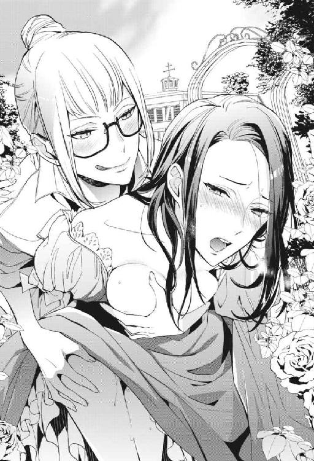
「ほらクロエ様、力を抜いて......」
「っ......」
諦めて、涙の滲む目をぎゅっと閉じた。そのとき。
「クロエ!!」
バンッ、と勢いよく植物園の扉が開いた。風圧で近くの草花が揺れる。
力の入らない体で、ゆっくりとそちらに顔を向けた。
「......グレン......」
また走ってきてくれたらしい彼は、こめかみに汗を垂らしていた。息をあげて、荒い呼吸で胸を上下させ、驚いた顔でこちらを見ている。
今まさに私のナカに指を入れようとしていたキリコは、「邪魔が入っちゃった」と興醒めした顔で下穿きから手を離した。次期王の登場に焦る様子はない。
「ちょっとグレン様。来るのが早すぎるわ......」
「キリコ、これは......？」
グレンは状況が吞み込めていないようだ。困惑した顔で、衣服を乱した私とキリコを交互に見る。
「クロエが一人で植物園に行くのを見たという者がいたから、嫌な予感がして見に来てみたんだが......なんだこの絵ヅラは」
「......グレン、助けっ......」
助けて、と私が言うよりも早く。彼は言った。
「......悪くない絵ヅラだな。キリコ、続けるか？」
「えっ」
何言ってるのこの人。
目の前の男が大真面目な顔で言ったことが信じられず、私は目を剝いた。驚いたのはキリコも同じなようで、素っ頓狂な声をあげる。
「どうしたのグレン様！ 今日ノリいいじゃん！ ......だって、クロエ様。いっそのこと三人で、っていうのはどう？」
「いっ......嫌！」
「たまにはいいだろう、クロエ。最近お前には拒まれてばかりだしな......スタンダードな愛し方しかしてこなかったから、飽きさせてしまったかと俺も気にしていたんだ」
「あぁいいんじゃない？ マンネリ解消に、たまには三人でも」
「よくない......！」
拒んだのはマンネリだったからじゃないし、飽きたとかそういうのじゃないし......！
三人でなんて冗談じゃない。急にそんなアブノーマルプレイをぶっこんでこないでほしい。全力で首を振って拒否するも、効果はなかった。グレンはすぐ私の背後にやってきて、自分の胸に私をもたれかからせると、キリコに向かって脚を開かせた。
「ほら、クロエ。ねだってみれば？」
「やっ......」
「えー、おねだりしてみてほしいなー。お願い、クロエ様」
「いやぁっ......」
嫌、という言葉しか出てこなかった。ひたすら首を横に振る。グレンの手によって脚を開かされるのも、キリコにそれを見られているのも恥ずかしくてたまらなかった。そして何より、敏感になったこの体。背中にグレンの体温を感じた途端......ぐずぐずになって。
「もっ、やだぁっ......」
──息も絶え絶え。意識も混濁しはじめていた。ひたすら体が熱い。
グレンの胸の上でもぞもぞと動いて、もがくように顔を後ろに向ける。グレンの匂いがする。頭がぼーっとして、そのままつぶやいていた。
「グレンがしてっ......」
「......」
「......」
「......おい、キリコ。今更だがお前、クロエに何をした？」
「ショコラの実をちょっと」
「......なるほどな」
そしてまた沈黙が流れた。荒い呼吸を繰り返す。体は一向に楽にならない。三人でなんてやだ......絶対に、嫌。その気持ちだけがぐるぐると頭を回る。
しばらくして頭上からグレンの声がした。
「気が変わった。キリコ、席をはずしてくれ」
「あっ！ さては今のおねだりでほだされたな！ 独り占めするつもり!?」
ずるくない!? と声をあげるキリコ。......うるさいなぁ。
おねだりとか独り占めとか、どうでもいい。とにかく。
（熱い......）
ついに耐え切れなくなってきた。
体ごとぐるんとグレンのほうに向けて、胸に抱き着き首筋に口づける。太く逞しい首筋。たまらなくなって囁く。
「......グレン、早く......」
「......キリコ。ほんとに早く、席をはずしてほしい」
「もうっ！ 嬉しそうにすんな！ 今のクロエ姫の状態は私のお陰なんだからね!?」
「あぁ恩に着る。ほんと、最近こんなことってなかったんだ......二人になりたい」
「二人になってどうするの？」
「抱き潰す」
「やだケダモノ......。まぁ、そうなるよなぁ」
「なるだろ。こんなの可愛すぎる......」
可愛い、と言われた？ えぇ、なに、照れる......。
早く抱いてほしい。ねだるようにすりすりと首筋に頰擦りした。
またキリコの声が響く。
「あぁもうっ、可愛いなぁクロエ様は......！ いいでしょう。今日質問に来たことも教えてあげますから、また日が暮れる前にでもお話ししましょう」
「ぇ......」
グレンの首に纏わりつきながらも、何か、大事なことを言われたような気がした。キリコの声がしたほうを振り返ると、ちゅっと額にキスを落とされる。一瞬閉じた目を開けると、眼鏡をかけた魔女みたいな女が色っぽく笑っている。
「その代わり、どんなエッチだったかもちゃーんと教えてくださいね」
約束、と勝手に指切りを交わして、キリコは植物園を出ていった。
「......さて」
顔のすぐ横でグレンが息をつく。吐き出された呼気にさえもゾクッとしてしまって、震え出した腰を止められない。
「はっ......ううっ......」
「......重症だなこれは。下も、溢れて止まらなくなってるじゃないか」
「ひぁっ......」
先ほどキリコの手で暴かれた秘部。ぎりぎりいじられず済んだ部分に、今度はグレンの指が触れる。繊細な指先に撫でられて、そこがトロッと濡れているのがわかった。
「はッ、んんっ」
「......もう一回ねだってみせるんだ、クロエ。すぐに挿れてやる」
「んんぅっ......」
ぎゅっとグレンの首に抱き着いた。......ねだってみせる？ それは恥ずかしい。
さっきそれに近いことを言ってしまったような気もする。だけどあらためて催促されると、無理だ。言いたくないけど欲しくてたまらなくて、濡れた場所を彼の指に擦りつける。指先が外側を刺激するだけで焦れったい。
「っ......」
「足りないだろう、そんなのじゃ。......ほら。どうしてほしい？」
「は、ぁっ......突いてっ......ほしっ......んんっ」
いつの間にか彼はトラウザーズの中から自身を取り出していた。指の代わりにその先端で私の蜜口をもてあそんでくる。もうすぐ得られる快感を体が先取りして、勝手に腰が揺れてしまう。
「まだだ、クロエ。まだちゃんと言えてない」
「ふっ、うぇっ......」
まだ焦らすの......。
荒くなった呼吸はもう自分では鎮められなかった。抱き着いたグレンの首元で深く息を吸うと、高い体温と首筋の匂いに余計に体が高ぶってしまう。
またまともに考えられなくなってきて、生理的な欲求で頭がいっぱいになって。
「......クロエ。......言って？」
頰に口づけられながら言われたその言葉がトドメになって──裏返りそうな声で、叫んでいた。
「グレンので突いてっ......無茶苦茶にしてっ！ んひゃぁっっ!!」
「はっ......無茶苦茶に、な。......わかった」
「あんっ、んうっ......！」
向かい合ってグレンの膝の上に座ったまま、体を抱き込まれて一気に奥まで貫かれる。既にドロドロになっていたところに打ち込まれた楔。突然の異物感に押し出そうと伸縮する動きも捻じ伏せて、グレンは何度も激しくナカを穿つ。
「ひッ、あッ、あぅっ......」
「はぁッ、熱い......腰が溶けそうだ。気持ちいいッ......」
「んぁっ......！」
まともに言葉を紡げない。ただ私も彼と同じように、止めどない快感に苛まれていた。私を突きあげる彼自身もとても熱い。火傷しそうなほど熱を持った陰茎が、ナカを擦り、奥を抉る。引き抜くときには肉を持っていかれる感覚に背筋が震え、押し込むときには〝ぐちゅっ！〟と体液が混じり合う感触に、脳が痺れた。
グレンの首に抱き着きながら、気付けば私は必死に腰を振っていた。
「こんな昼間からっ......」
「あっ、あァッ！」
「意外と、こういうのが好きだったのか」
興奮しつつも、少しだけ余裕を見せるグレン。楽しそうに私の耳に囁いて、鼻の頭で耳の中をくすぐってくる。
「あっ、違っ......あんっ！」
彼は私の耳から滑るように胸へと顔を持っていって、露わになっていた胸の先端を口に含んだ。ちゅぅっと強く吸い付かれて、喘いでしまう。
「だめっ......だめぇっ！」
「そんな声出して......誰に聞かれるかもわからないのに」
「だっ、て......グレンが吸うからっ......」
「こんなに感度が良いのは、ショコラの実のせいだけじゃないな？」
「あうっ......」
しゃべる合間に左の乳房を口に含みながら、もう片方の胸の尖りを指でグリグリといじってくる。繫がったままでそうされると、一体どこが今気持ちいいのかもわからなくなって、私は段々自分で動くこともままならなくなっていった。
くたりとグレンに体を預け、それでも何かしたくて、目の前の首筋に思い切り吸い付く。
「ん......だってそうだろう。こんなに興奮していて、積極的で......。可愛いよ、クロエ。外だから興奮しているんだろう？」
「ちがっ......ふ、んんっ！」
「獣みたいだな」
違うと言っても、今の私たちはグレンの言う通り。まだ明るいうちから土の上で、纏っている衣類をドロドロに汚してお互いの体を貪り合っている。これを獣以外にたとえようがない──だけどこのときの私に、自分を客観視できる余裕も理性もなかったので。
「クロエッ......クロエッ！」
「あぁ──っ......！」
ただひたすら、与えられる快楽に喘いでいた。
（消えてしまいたい......）
飲まされた薬の効果が消えるまでには、五回かかった。五回。私が達した回数じゃない。私は何度も何度も達していた。それでも、達して楽になるどころか、すればするほどに欲しくなるばかりで、ねだり続けて五回。グレンが達した回数が五回。「この辺にしておこうか......」と二人が冷静になるまでに、五回かかったのだ。
行為が終わってから、〝日が暮れる前にもう一度会いにくるように〟とキリコが言っていたことをグレンから聞かされた。夕刻に入浴を済ませた後、言われた通りに植物園を訪れると、ニヤニヤしながら昼間と同じティーセットを広げていたキリコ。今朝の何倍も警戒していた私は、決して紅茶に口を付けない。
「そんな何度も同じことしないってぇ」
「信用できません」
「あの後盛り上がった？」
「......言いません！」
「えぇっ、約束が違う......！ まぁ、可愛い顔いっぱい見せてもらったしな......今回は特別ですよ」
不満そうではあったけれど（そのことが私は不満ではあるけれど）、キリコは、当初私がそこに行くに至った疑問に答えてくれた。法務官と財務官の仲が悪い原因について。
キリコは淹れたての紅茶に息を吹きかけて冷ましながら、事もなげに言う。
「原因は色恋沙汰よ」
「......色恋沙汰？」
「うん。もうかれこれ二十年以上前に、この城に仕えていた同じメイドを好きになったの。それがノズワルドきっての美女だったらしくてねぇ......。彼女に良いとこを見せたくて、毎日のように競い合ってたって話。二人の不仲はそこから」
「......それは、なんというか」
「うん」
「しょーもないですね......」
「しょーもないわね」
夢での理由がこれならば、おおよそ現実でも似たような理由で折り合いが悪いのだろう。差し詰め、新入社員時代に同期一の美女を取り合ったとか、そんなところだろうか......。そんな理由でいつも自分はたらい回しにされていたのかと思うと、がっくりと力が抜ける。
しかも、不仲の理由がそんな過去の思い出にあるなんて。厄介だ。
「仲直りさせるのは、難しそうですね......」
あんな痴態まで晒しておいて、得られた成果はナシ......。
肩を落とす私に、キリコは言った。
「そうでもないと思うけどねー」
「え？」
「ここからは、きちんと私を褒めてほしいところなんだけどね」
そう言って、彼女は自分の背後から、布に包まれた大きな板を取り出してきた。
・・・
場面変わって、現実のオフィス。
私は自分のデスクでスマートフォンを操作し、佳乃にメッセージを打っていた。ＡＹＵＺＡＷＡユニフォームの件で立て込んでいたこともあって、最近ご飯にも行けていないのだ。近々どうかと、お誘いのメッセージを入れておく。送信。
（......さて）
仕事をしなければ。
席から立ち上がると、たまたま三澤さんと目が合った。ふん、と馬鹿にするような笑みを向けられる。いつものことなのでスルーする。私には早く確かめたいことがあった。
足を向けたのは、同じフロアにある法務部。アパレルメーカーへの提案に、人気アニメキャラクターとのコラボを持ち掛けたかった。だけどこういったライセンス使用料について、自社で契約料を負担する場合の相談を持ち掛けると、法務部長も経理部長も「自分の部署の管轄ではない」と仕事を押し付け合って話が進まなかったのだ。再三門前払いを食らっていた提案書を胸に、私は法務部長のデスクまで歩いていく。
「お疲れ様です」
「ん？ ......あぁ、黒江か」
いつもなら、私の顔を見るなり「またか」と、「それは経理部に言えって言ってるだろ！」と怒り出す法務部長。今日はなんだか元気がない。その理由を恐らく知っている私は、なんとも言えない気持ちになる。
だけどこれは仕事。気を持ち直して用件を伝えた。
「キャラクターライセンスの件、ご相談してもいいですか？」
「......ライセンスか。構わん。そこに掛けなさい」
すぐそばの椅子に座るよう促され、「失礼します」と言ってそこに座る。デスクに契約書を広げて、内容の説明をしながら思った。......すごい！ 話を聞いてもらえている！
現実に戻ってきたら、法務部長と経理部長の間にあった禍根はなくなっていた。それは夢の中での、キリコの計らいのお陰だった。日暮れ前の植物園で言われたことを思い出す。
〝ここからは、きちんと私を褒めてほしいところなんだけどね〟
そう言って彼女が取り出したのは、一枚の肖像画だった。なんでも、朝方ショコラの実の一件があって植物園を出てすぐに、キリコは城下に遣いを出してくれたらしい。......城下に遣いを出せる庭師って一体......と思いはしたけど、そこは深く突っ込むと危険な気がして黙っておいた。
閑話休題。キリコが派遣した遣いの者は、財務官と法務官のかつての想い人を城下で見つけ出し、街の絵描きに想い人の絵を描かせ、その絵を持ち帰ってきた。その絵というのが。
〝思い出の中の彼女は綺麗だった......ってまぁ、よくある話よ〟
キリコのその説明が今回のオチだ。
法務官と財務官の想い人は二十年以上前に城を出て、農家の息子との幸せな結婚生活を手にしていた。四人の子どもを授かり、幸福な日々の中でむくむくと幸せ太り。かつてノズワルドきっての美女と噂された彼女に昔の面影はない。遣いの者が法務官と財務官を覚えているかと尋ねると、「やだー！ 覚えていますよ、頂いたラブレターも大切に持っています」とおどけて答えたそうな。
その話と肖像画を二人にそれぞれ突き付ければ、二人ともせつなそうな顔をして。その日の夜には、誰が提案したわけでもないが、男二人が思い出話でしっぽりと杯を交わす会が肅々と開催されたそうな。
そんなこんなで、私の仕事はうまく回り始めた。たらい回しにされることもなくなって、せっかく作った企画書をゴミ箱にスルーパスされることもない。新しいプロジェクトに声をかけてもらえることもちらほら出てきて、私の社内での信頼は、徐々に回復の兆しを見せていた。これは純粋に嬉しかったこと。
その一方で、気がかりなこともある。夢でキリコは、こんなことも言っていた。
〝気を付けて。あなたが夜に出歩いてたってことを、意図的に広めようとしている奴がいる〟
彼女が私の深夜徘徊を知っていたのは、その噂があったかららしい。
夢の中にも、私に悪意を持つ人間がいる。そう思うと少し気が沈んだ。深夜に私が出歩くことが知れれば、王位奪取を目論む人間はその隙を狙い、私を襲おうとするだろう。
噂を流して得をするのは誰か？
それは、たぶん......。
法務部長との打ち合わせを終えてデスクに戻ると、隣の部から賑やかな声がした。見ると、和久さんのデスクに見覚えのある人の姿が。
（こんなところにも夢の影響が......！）
和久部長が、珍しく表情を和らげて楽しそうに話をしている。相手は広報のトップ、乙島桐子広報部長だった。......思わず夢の中のように〝キリコ！〟と呼び捨てしそうになってしまった。
現実での面識はほとんどないが、キリコとはいろいろあったので顔を合わせたくない。私は回れ右をして執務スペースから脱出する。彼女が和久部長の席にやってきている理由にも、なんとなく察しがついていた。
（......お願い、聞いてくれたんだな）
日暮れ前の植物園で、私はキリコにもう一つお願いをしていた。
前にカノが言っていたことが、ずっと心に引っかかっていたのだ。立場上、冷酷無慈悲な次期王を演じているというグレン。和久さんと似た立場の彼は、本当は国民のことを大事に思っているし、だから政務にも励んでいる。彼らの威厳を保ちつつ、厳しいだけじゃない一面を知ってもらう方法は何かないかと、ずっと考えていた。そこで私はキリコにお願いした。グレンの良い噂を流してもらえるように。
だから現実で乙島部長が和久さんの元にやってきたのは、きっと広報取材の件だ。仕事に対する真摯な考えや、プライベートの意外な一面が広まれば、彼はきっと嫌われ者ではなくなる。
（......そしたらもう、ここで会うことはなくなるかな）
執務スペースから逃げてきた私は、非常階段に避難していた。いつも和久さんがもたれかかって煙草を吸っている柵に寄りかかり、組んだ腕の上に顎を載せる。
最初、まだ彼のことを何も知らなかった頃。初めてここで和久さんに遭遇したときは、絶対に「何サボってるんだ」って怒られると思った。顔が怖いし、鬼のように厳しいという噂しか聞いたことがなかったし。だけど私の予想に反して彼は、「まぁ、そういうこともあるよな」と穏やかに笑った。特に干渉してくることもなく、居心地のいい距離感でただそこにいた。
本当の彼を知る人が増えれば、ここでこっそり煙草を吸う必要もなくなるだろう。二人だけの場所みたいに思っていたから、少し寂しい気もするけど。でも別にいいのだ。キリコも私のお願いに、〝それは無償の愛ってやつかもね〟と笑ってくれた。
「黒江」
「え」
名前を呼ばれてパッと振り返る。そこにいたのは和久さんだった。
階段を下りてきたらしい彼はいつものスプリングコートを着ておらず、少し寒そうにしている。
「あ......煙草、ですか？」
「ん......まぁな。きみは？ サボりか？」
「息抜きです」
「こんな早い時間からか」
そりゃ相当煮詰まってるな、と言って、彼は私の隣に並んだ。胸が一気に高鳴りはじめる。
「......」
「......」
思い出してしまうのは、また夢の中での行為。しかも今回は......。真昼間の植物園でねだってしまったことが、如実に思い出されて顔を覆いたくなった。私、この人の上に跨ってあんなことやこんなことを......！
意識してしまうと、ちょうどいい世間話も何も出てこない。会話に困ってちらっと隣の彼の顔を覗き見る。すると、和久さんも少し気まずそうにしていた。
（......なんで？）
「......和久さん？」
「......なに？」
「煙草、吸わないんですか？」
「あ。うん、吸う......」
......なんだかちょっと様子がおかしい。
和久さんはズボンのポケットから煙草とライターを取り出し、そっと火を点けた。少し目を伏せて煙草を咥える姿に釘付けになる。
「......黒江。そんなに見るな。吸いにくい」
「......」
言われてパッと視線を剝がす。......えっ。和久さん今、照れた......？
何これ。恥ずかしい。
「......」
「......」
彼が煙草をふかす隣で、私はただ黙っている。私たちの間にはこれまで何度も沈黙が流れていた。今までそれは心地いいものだった。ただ今の沈黙は、心地いいというよりは心臓が痛くて、苦しい。けれど決して不快じゃない。
私の現実も、そう悪くはないのかもしれない。
しばらくそうしていて、結局私たちは特別何かを話すこともなくお互いの持ち場に戻ることにした。和久さんが「先に戻るから」と言って、非常階段を上っていった数十秒後、私も階段を上っていく。心なしか歩調が軽い。会社にいてこんなに心躍る気持ちになるのは久しぶりだった。
別件で誘ってもらったプロジェクトのアイデアを頭の中で膨らませながら、機嫌よく自分のデスクに戻ろうとしていた途中。喫煙所の前に差し掛かったところで、私はギョッとして足を止めてしまった。相手もそんな私を不思議に思ったようで、じっとこちらに視線を向けてきた。
「あら......」
（キリコ......！）
さっき私が、非常階段に逃げてまで〝絶対に顔を合わすまい〟と思っていた相手。乙島広報部長が喫煙所から出てきたところだった。
鉢合わせてしまった私は、なるべく自然な態度を装って笑顔を浮かべる。
「おっ......お疲れ様です」
「お疲れ様」
美しく微笑む魔女は、眼鏡の奥の双眸を妖艶に細めた。気だるさも相まって色気のある雰囲気。......人の体をまさぐってくる性癖の持ち主には見えない。今日は外出する用事があるのか、品のあるレディーススーツをぴしっと着こなしていて、長い髪もアップにして纏められている。こう言ってはなんだが、とてもまともな人に見えた。
（そりゃあそうでしょう......）
自分の思考に突っ込みを入れる。確かに、夢ではこの人に襲われかけてしまったけれど、あれは所詮夢。現実であまり素性をよく知らないこの人の性格を、私が頭の中で勝手にイメージをでっちあげて、それが夢の中に出てきたんだろう。まったくもってひどい話だ。
偏見を持つのはよそう......と思いながら、会釈をして乙島広報部長の隣をすり抜けようとする。
「待って」
「え」
呼び止められるとは思わなかった私は、つい動揺した顔で後ろを振り返ってしまった。すると、間近に乙島部長の顔があった。鼻先がくっつきそうなほど接近した顔に、目を見開く。
（近ッ......！）
その距離感は、夢でキリコに迫られたことを彷彿とさせた。私は変な汗をかく。
「なっ、なんですっ......」
「あなたのことね」
「何がっ......」
言われていることの意味がわからないまま、両手でバリアを張って距離を取る。やっぱり苦手な人だった......！
距離感の近さに動揺した私は、さっきまで隠していた警戒心を剝き出しにして彼女の様子を窺った。乙島部長は興味深いものを見る目で私のことを見ている。
「あなた。喫煙スペースで噂の落武者黒江さん」
「......ああ」
何かと思えば、悪口だった。〝落武者〟のあだ名が浸透していることは知っている。
（何を今更......）
三澤さんからも馬鹿にされるようにそう呼ばれていたが、面と向かって言われることは少なかった。ほとんど接点のないこの人にまで、そう呼ばれてしまうのか......。
気の滅入った私がうつむいていると、彼女はクイッと私の顎を持ち上げた。
「......なんですか！」
動揺と腹立たしさで叫んだ私に向かって、乙島部長はニッコリと笑う。その笑い方は、夢でのキリコと同じ。
「最近可愛くなったって、喫煙所でもっぱらの噂よ。落武者黒江さん。聞いていた通りなかなか可愛いじゃない」
〝ノーチェックだったー〟とおどけて笑いながら、彼女は指先を私から離していく。
「......」
可愛いって噂？ ......私が？
そんなことあるわけ......と思いつつ、乙島部長がそんな噓をつく意味も思い当たらない。
「また今度遊びましょうね」
そう言って、彼女はヒラッと片手を振って歩いていった。恐らく広報部へと戻るであろうその後ろ姿を眺めながら、私はガラにもなく今、ちょっとだけ嬉しい。
（......私の評価が、変わってきている？）
もう絶対に引っくり返ることはないと思っていた、会社での私の立場。このままずっと退職まで陰口を叩かれ続けるのかと思っていたけど、もしかしたら。
現実が変わりはじめた実感に胸を躍らせながら、さっきよりも更に軽い足取りで自分のデスクへと向かう。途中、近道しようと受付の前を通った。そこにはルミさんがいた。
「お疲れ様です」
「あぁ、お疲れ様です」
たった今応接室から引き揚げてきたらしいコーヒーカップをお盆に載せ、しゃなりしゃなりと歩いてくる姿。今日も落ち着いた笑顔が美しい。
私は〝お節介かな......〟と思いつつも、自分が少し浮かれていたこともあって。
「ルミさん」
「えっ......」
「あっ、いえ......」
間違えた。ここでの彼女は千葉成美さん。
「千葉さん」
「はい......？」
私が呼びなおすと彼女は不思議そうに首を傾げた。普段〝お疲れ様です〟と挨拶をするくらいで、立ち話をする仲でもないから当然と言えば当然だ。私は思い切って、最近思っていたことを口にする。
「ご自分のことは、大切にしてくださいね」
「......黒江さん？」
千葉成美さんは、更に〝よくわからない〟という顔になった。だけど思い当たって後ろめたい部分もあるのか、わずかに口の端をヒクつかせている。......やっぱり現実でも、西木戸部長とデキているらしい。
それ以上深く追求しなかったが、彼女は曖昧に笑って「そうですね。そろそろちゃんとします」と言った。その返事で、ルミさんはもう大丈夫な気がした。
私も。
ひとつひとつ、丁寧に頑張ろう。
仕事に対するやる気も湧いて、さぁやるぞ！ と意気込んでパソコンのスリープを解く。現れたデスクトップ。壁紙は実家の飼い猫ムタさん──その、手前に表示されたメモ帳。
（......え？）
メモ帳の機能は普段使わない。離席前に開いた覚えもない。
そこに打ち出されていた文字列に戦慄する。
『 調 子 に 乗 る な』
10．力を手にした武士の選択
パソコンの前で硬直した。目の前に映し出された無機質な文字列に、頭の中を殴られたような衝撃に襲われる。
そのたった一行を、何度も視線でなぞった。そのたびに心臓がミシッと軋むような感覚に襲われる。......あんまり見ないほうがいい。心に障ってしまう。そっとクリックしてメモ帳を閉じた。保存するかと訊かれ、すぐに〝いいえ〟を選んで閉じる。
直後に、こういうものは証拠として残しておくべきだったと思ったけれど、私の心の弱い部分は、一刻も早く自分に向けられた悪意をなかったことにしたかった。
（一体、誰が？）
ゆっくりと視線を宙に上げる。同じ島にいる人はみんな、目の前の仕事に集中しているようで。誰とも目が合わない。斜め前の、少し離れたデスクにいる三澤さんに目を向ける。
「......」
三澤さんとも、目が合わない。ツンとした険しい顔でキーボードを叩いている。これも彼女の仕業？ 〝調子に乗るな〟って、どういうこと。
（......調子になんか乗ってない）
やっと気持ちが少し前を向いた。どうにもこうにもうまくいかなかった仕事を、少しずつ進められるようになってきた。それをささやかに喜ぶ私の気持ちさえ、許せないと思う誰かがいる。
夢で犯人を捕らえれば、こんな現実も変えられるだろうか。
「......」
せっかく前を向いていた気持ちが、ゆっくりと沈んでいく。
終わらない嫌がらせにうんざりして、午後は憂鬱な気持ちを振りきるように仕事に打ち込んだ。ＡＹＵＺＡＷＡユニフォームへの提案日も決まり、キャラクターライセンスの契約料の問題も解決して、仕事だけは前に進んでいく。
ここで気持ちが負けたらダメだ。
夜はあれこれ深く考え込まないようにして、リラックスできる音楽をイヤホンで聴きながら眠りについた。
・・・
ぱちっ、と目を覚ます。ここは夢の中のノズワルド。
私が目覚めたのは自分の部屋のベッドの上で、そこにグレンの姿はなかった。どうしてだっけ、と前の夢の記憶を辿る。「昼間あれだけしたから夜はナシ！」と私が断ったのでした。「もうすぐ婚礼の儀だぞ！ 夜もするだろ！」と不満げだった彼の顔を思い出す。
そうです。夢と現実の行き来を何度か繰り返し、ついに明日はグレンと正式に婚礼の儀を執り行う日。明日無事に私が彼の妻となれば、もう夜に貞操を狙われることはない。
今日はその儀式の予行練習をすることになっていた。〝儀式〟なんて言われても、まったくうまくできる気がしなかった私。「どうしていいかわからない」と正直にグレンに打ち明けると、すべてこの予行練習で覚えればいいと言われた。流れはそんなに複雑なものじゃないと教えてもらって、ほっとしたのを覚えている。
直近の出来事を思い出して整理していると、コンコンッと部屋のドアがノックされた。扉の向こうからメイドの声。
『おはようございます、クロエ様。朝の支度に参りました』
「はい！ 今開けます」
内側からしか開けられない扉を開けに、ベッドの中から抜け出した。裸足でひたひたと歩いて行き、扉を開けてメイドたちを出迎える。
「おはようございます」
「おはよう」
挨拶をして、私は自然とドレッサーの前へ。三人いたメイドは部屋の中で散り散りになって、一人は私の髪を梳かしてくれる。一人は紅茶の準備をはじめ、もう一人はこれから着替えるドレスを準備する。
こうされることにも結構慣れた。最初は恐縮して、きょろきょろして。落ち着かなくて何度も「じっとしていてください」と言われたものだけど、最近はそれもない。そして私はいつの間にか、夢でグレンと夫婦になることに何の違和感も覚えなくなっていた。
髪を梳かしてくれていたカノが言う。
「ついに明日ですね、クロエ様」
「ええ......」
「明日のために誂えられたドレスが、今朝城に届いていましたわ。私、さっきちらっと見かけたのですけど、豪勢で本当に素敵なドレスでした！ きっとクロエ様によくお似合いになります」
「ありがとう」
お礼を言いながら、ドレスか......と、自分が着せてもらうらしい衣装に思いを馳せる。そんな豪勢なドレス、着こなせるだろうか。不安が半分。もう半分ではワクワクしている。どんな姿で、私は明日、グレンの隣に並ぶんだろう。
そんな甘い想像をしていたときだ。
『クロエ様!!』
扉の向こうから、男の大きな声が私を呼んだ。部屋にいたメイドたちも、私も、ビクッとして声がしたほうを向く。
一番扉に近い場所で紅茶の準備をしていたルミさんが返事をした。
「......な、何ですか。クロエ様は朝のお支度中です」
『ご無事を確認しに参りました。衛兵です。お顔を見せていただけますか』
緊迫した声にごくっと唾を飲む。
私の指示を仰ぐようにこちらを見てきたルミさんに、慎重に頷いて見せる。彼女はゆっくりと扉を開けた。
「失礼します」
中に入ってきた細身の衛兵は、私の顔を確認するなりほっと表情を緩めた。その顔は、私と同じ部署の新人の男の子と同じ顔だった。悪い人ではないことを悟る。
「良かった。こちらは何事もなさそうですね......」
「何かあったのですか」
慌ててやってきた彼に問いかけた。安否を確認しに衛兵がやってくるような事態だ。きっとただ事ではないんだろう。部屋に緊張が走る。
衛兵は言った。
「実は......。たった今、クロエ様のドレスを裂こうとしていたメイドが捕まりまして」
その衛兵いわく、メイドの一人が衣装室に忍び込み、明日の婚礼の儀で私が着る予定のドレスをナイフで切り裂こうとしていたそうだ。今まさに切り裂かんとするところで、潜んでいた衛兵がメイドを捕らえたのだという。
捕らえられたメイドはミサだった。
「......」
その報告を受けて廊下に出ると、ちょうど彼女が地下牢へ連行されているところ。私はメイドたちと一緒に廊下の端に並んで道を空け、衛兵に両手をロープで拘束された状態で歩かされているミサを見ていた。彼女はこちらに気付き、私の顔を睨みつける。
三澤さんに睨まれている気になって、脚が竦みそうになるのをぐっと堪えた。少しも委縮しないように強く見つめ返す。すると彼女は、キツく睨んでいた顔をふっと緩め、憐れむような、蔑むような顔を私に見せた。そしてこう言ったのだ。
「かわいそうなお姫様」
「............え？」
（......かわいそう？）
どうしてそんな言葉をかけられたのか、わからないまま。ミサは地下牢への階段を下っていく。
私の部屋に安否の確認があったのは、ドレスが狙われたことで本人にも危害が及んでいないかという心配があったからだそうだ。ただ、ミサに問いただしたところ単独犯だったことが判明し、この件は〝クロエ姫に嫉妬したメイドの憂さ晴らし〟ということで片付けられた。
私は予定通り、婚礼の儀の予行練習にのぞむ。司祭から式の流れの説明を受けた後、彼の先導に従って式で行う動作を実際にやってみる。私の役割はそんなに多くなかった。〝ここで腰を低くして頭を下げる〟。〝ここで民衆に手を振る〟。要所要所で行うこととそのタイミングを覚えればいい。なんだか乗り切れそうな気がしてきた。
婚礼の儀と同時に執り行われる戴冠式では、グレンの頭に王冠を載せる役目を任されている。私はそこのパートの予行練習で、恭しく頭を下げるグレンの頭に見えない王冠を載せた。本物の王冠は、本番まで現国王の宝物庫に大事にしまわれているのだという。
「......浮かない顔をしているな、クロエ」
見えない王冠を頭に載せて、ゆっくりと顔を上げたグレンが目を細めて笑う。周りの誰にも聞こえないように、抑えた声で話しかけてきた。私は微笑んで、彼と同じように抑えた声で話した。
「そんなことない。少し緊張しているだけです」
「今朝捕まったメイドのことを気にしているのか？」
「......」
図星を突かれて、黙ってしまう。気にしていないわけがない。ずっと黒だと思っていた三澤さんが夢の中で捕らえられ、ほっとしている私がいる。だけど彼女は私のことを、〝かわいそうなお姫様〟だと言った。あれはどういう意味か。
私がそんな言葉を言われたとは知らないグレンに、余計な心配をかけるのは嫌だった。彼には明日の大事な式に集中してほしい。
私はごまかすように別の話題を探した。
「衣装室を衛兵に見張らせていたのは、あなた？」
「ああ......」
グレンは否定しない。声を抑えたまま。式の進行通り並んで祭壇を下りていき、部屋の中を大きく周回する。
「キリコから、いろいろ話を聞いていたからな。お前を良く思っていない何者かがいるのは知っていた」
「......キリコ？」
「あれはただの庭師じゃない。お前もなんとなく気付いていたかもしれないが、俺の信頼している諜報部員だよ」
「なるほど......」
だから城下に遣いを出せたのか。明らかに庭師以上の権力を持っていることを不思議に思っていたけれど、今のグレンの話で腑に落ちた。
そうなると、キリコが教えてくれた〝クロエ姫が夜出歩くことを意図的に広めようとしている人間がいる〟というのも、ミサのことだったんだろうか。
なんだかあっさりと解決してしまった問題に、正直拍子抜けしている。
「お前はどうしたい？」
「え？」
不意に問いかけられて、グレンのほうを向く。
今はまだ周回の途中。腕を組んで歩く隣のグレンの顔は、まっすぐ前を向いていた。私も慌てて前に向き直り、視線を合わせずに返事をする。
「......どうしたい、とは？」
「今日捕らえたメイドのことだ。ミサといったな......。大事なドレスを狙ったくらいだ。これまでも良好な関係ではなかったんだろう」
「......」
断定的な口調でそう言われ、これまで現実の三澤さんとの間に起きたことが頭の中を駆け巡る。
最初はすごく小さなことだった。若手女子で行くランチに呼ばれないとか、声をかけても聞こえないフリをされるとか。それこそ子どものいじめみたいな、今では取るに足りないことだった。それがいつからか、デスクの足元にゴミを撒かれ、作業をしていたパソコンの電源を切られ。私が平気な顔をするほどに、行為はエスカレートしていった。周りは誰も助けてくれず、みじめになっていく私を〝落武者黒江〟なんて呼んで──それを〝かわいそう〟だなんて。
地下牢に入る間際のミサの言葉が、じわじわと私の内側を蝕んでいた。〝かわいそうなお姫様〟だなんて、私を〝かわいそう〟にしたのは誰だ。お前じゃないか。
胸の中が黒い感情で埋め尽くされて、窒息しそうになる。
そこでグレンが繰り返す。
「お前は、そいつをどうしたい？」
「......」
委ねられようとしている。
現実では、私は彼女をどうすることもできない。だけど夢の中では違う。私は次期王の婚約者で、できないこともたくさんあるけど、グレンさえ許してくれればなんだってできる。
「処遇はすべてお前に任せよう。首を刎ねてもいい」
首を刎ねることだって。
「お前はどうしたい」
私は、どうしたい？
「────私は」
婚礼の儀の予行練習はつつがなく終わった。「明日、本物の王冠をお前に載せてもらうのが楽しみだ」と無邪気に笑うグレンと共に夕食を摂って、その後は大浴場で、明日に備えてピカピカに体を磨きあげられる。
いつもより早い時間に部屋に戻され、髪もいつも以上に念入りに梳かされた。
「ドレスが無事で本当によかったですよねぇ......」
カノは手を動かしながらそう言って、心底ほっとしたように息をついた。
「あのドレスがダメになっていたらと思うと......カノは卒倒しそうですよ。まだ一度もクロエ様が着ているところを見ていないのに......！」
自分以上にドレス姿を楽しみにしてくれているカノに、苦笑して答える。
「私も。ダメになってしまってたら悲しかったな」
「今朝は何事かと思いましたけど、犯人が無事捕まってよかったですね。......ミサだったことには驚きましたが」
そう言って淹れたてのハーブティーを出してくれたルミさんも、浮かない顔をしていた。同じメイド仲間が地下牢に入れられたということが、結構ショッキングだったんだと見て取れる。
私がなんと言葉をかけていいか迷っていると、カノが先に口を開いた。
「ルミ、しゃんとしなさい。クロエ様のお心に障ります」
「あっ、申し訳ありませんクロエ様......」
「......いいえ、大丈夫」
謝られて少し居心地が悪い。別に今のルミさんの言葉が心に障っているわけじゃなくて、それとは別に、今日はずっともやもやしている。この晴れない気持ちの正体は何か。
「それでは、クロエ様。私たちはこれで」
「ええ、ありがとう」
「明日は、クロエ様にとっても国民にとっても大事な一日になります。今日はゆっくり体をお休めになってください」
「うん。そうする」
「それでは、今夜もお気をつけて」
お決まりの言葉で締めくくって、カノとルミさんは私の部屋を出ていった。閉じられたドア。自動的に内側からかかった鍵で、今晩の私は守られている。
（......今日は大人しく寝ておくべきかな）
王位奪取を狙うなら、今晩が私と契る最後のチャンスになる。まだ諦めていない男がいないとも限らない。
本当なら、前みたいに部屋を抜け出し、地下牢へ行ってミサに話を聞きたいところだ。恨み言しか言われない気もするけど......私には一つだけ、わからないことがある。
（現実の三澤さんはどうやって、私のパソコンのデータを消したんだろう？）
それだけじゃない。〝調子に乗るな〟とメモ帳に打ち込んだのも、一体いつやったんだろう。オフィスが無人になるタイミングなんてそうそうない。特にデータの消失なんて結構な大ごとだ。三澤さんが堂々と私のパソコンを触っていたなら、とっくに誰かが問題にしていそうなものなのに。
最初は、みんなに見て見ぬフリをされたんじゃないかと思った。だから、犯人捜しをするのも怖かった。〝本当はみんな敵だった〟ってオチが、何より怖いと思ったから。
だけど、今はそうではない気がしている。本当のことが知りたい。
（......明日にしよう）
明日、婚礼の儀が済んで、私の体が狙われる理由がなくなったら、犯人を捜してみよう。それならグレンに心配をかけることもないし、迷惑をかけることもない──そう考えて、私は大人しくベッドの中に入った。明日は載冠式だ。
ベッドに入ってしばらくは寝つけなかった。予行練習した式の手順を忘れないように脳内シミュレーションしたり、この後眠りについて目を覚ましてからの仕事内容を考えたりしていたら、時間はすぐに過ぎていく。早く眠らないと。式で花嫁の目の下にクマなんて、あまりに残念だ。
なんとか頭の中を真っ白にしようと努め、ベッドの中で何度も寝返りを打つ。そのうちようやく眠気がやってきた。うとうとと心地良くなってくる。
次に目を開けたとき、私は現実の自分の部屋にいるはずだった。
（............ん？）
〝コンコンッ〟という早めのノックの音で、私の眠りは妨げられる。あと少しで意識が落ちそうだったところ、ノックの音で完全に引き戻された。ゆっくりと目を開ける。
ベッドに入ってからだいぶ時間が経った。今は夜中のはずだ。
『クロエ様！』
「......カノ？」
ドアの向こうから響いたのは、メイドのカノの声だった。さっき「今夜もお気をつけて」と言って部屋を出ていったカノが、こんな時間に戻ってきた？
何事だろうと気持ちが焦る。体を起こしてベッドから抜け出し、裸足でひたひたとドアのすぐそばまで歩く。扉の向こうに問いかけた。
「どうしたの、こんな遅くに......」
『たっ、大変なんですっ......グレン様がっ......！』
「えっ？」
グレン？
緊迫した声と出てきた名前に、胸のザワつきが一気に大きくなった。
「グレンが......どうか、したの？」
『お部屋でっ......頭から、血を流して倒れられていてっ......』
「えっ......」
狼狽した声で告げられ、サッと血の気が引いていく。一瞬目眩がしてそばにあったラックに手を突いた。グレンが血を流して倒れているところを、イメージしてしまった。
（もしかして私は、油断していた？）
王位を狙う人間は自分のことしか狙わないと。それは先代の王が勝手に決めただけで、本当にグレンを王様の座から引きずり下ろしたいなら......本人を狙うことも、充分考えられたのに。
『うわごとのように、クロエ様のお名前を呼ばれるんですっ......！』
──行かなきゃ。
気を抜くとパニックに陥りそうな気持ちを、なんとか落ち着けて。ガクガク震える脚を叩いて、部屋のドアを開けた。
「カノッ！ グレンは今どこにっ──」
そこにいたのはカノと。
見覚えのない背の高い男。
（......いや、見覚えは......）
その男には現実で会っていた。整った顔でニタァッと、下卑た笑顔を私に向ける──気持ち悪い、と、あのときと同じ感情が蘇る。
電車で私に触った痴漢と、同じ顔をしている。
「グレン様はベッドの中で気持ちよく眠られていますよ」
そう言った声に引っ張られて彼女のほうを向いた。カノは、見たこともないほど冷めた顔で私を見ている。
足元が崩れていくような気がした。呆然としたまま声を絞り出す。
「......なんで......？ っ、ふぐっ」
男に口と鼻を塞がれる。酸素を奪われる。その間にもまっすぐカノのことを見ていた。信じられなかった。
彼女はふっと笑って、ミサと同じことを言った。
「ほんと......かわいそうなお姫様」
──どうして？
驚きのあまり、抵抗することも忘れて。
ツンとした匂いを感じた後、すうっと意識が遠のき、私はその場で気を失った。
・・・
ぱちり、と目を覚ました。私は自分のベッドの上。嫌な汗で、パジャマはびしょびしょに濡れていた。口の中がカラカラだった。
何よりも先に頭上を確認して、時計があるかどうかを確認する。赤い目覚まし時計がある。時刻はまだ朝の五時前。
──大変だ。
あの後、どうなった？
もしもあのまま、あの男に契られてしまっていたなら、グレンの王位が......。
すぐにでもまた眠りについて、夢の世界に戻らなければ。戻ってなんとかしなきゃ。そう思うのに、布団を被りなおして眠ろうとしても、後から後から不安が押し寄せてきて目は冴えるばかりだ。
結局そうこうしているうちに、家を出なければいけない時間になった。
11．怒れる姫君
会社へ行くと、三澤さんが自宅謹慎になっていた。
「まぁ......三澤さんのアレは、やりすぎだったしな」
「ＡＹＵＺＡＷＡチームのデータが消えたのも、三澤さんがやったってことなのか？」
オフィスではひそひそとした噂話と憶測が飛び交う。確かなことは今日、三澤さんが会社を休んでいるということだけ。〝自宅謹慎らしい〟というのは誰かが仕入れてきた情報だ。ただ、夢の中でミサが罪に問われ、地下牢に入れられていたことを思うと、自宅謹慎で間違いないんだろうなと思う。
処分が決定されるまでの自宅謹慎。だけど私たちには、それがどんな行為に対する処分なのかまでは断定できない。
「でもさぁ。実際に誰か、三澤さんがデータ消すとこ見た奴いるの？ 人のパソコンいじってたら、さすがに誰か止めるだろ」
──確かに。私もそれがずっと引っかかっている。
飛び交う憶測に耳を澄ませて、自分のパソコンを触りながら、ここで起きた事実が何なのかを考える。夢の中で、ドレスを裂こうとして捕まったミサは私に〝かわいそうなお姫様〟と言った。そしてカノも同様に......。
（......）
デスクの下、自分の膝の上でぎゅっと拳を握る。
カノはどうして、私を陥れるようなことをしたんだろう。他の使用人たちが心の中で私のことを見下していても、カノだけは裏表なく、親切に接してくれていたのに。まさか──誰かに脅されて？
いろんな可能性に思いを馳せてみたけれど、デスクで考えていても真実は一つもわからなかった。そして私はやっと、現実の佳乃に会いに行ってみることに決めた。
重たい腰を上げて、向かった先は一つ下のフロアにある総務部情報システム課。
同期の石田佳乃が所属するその課に、普段私はほとんど用事がなかった。あるとすれば、パスワードを連続で間違ってアカウントを凍結させてしまったときや、社内システムに不具合があったときに問い合わせをするくらい。
私が総務部を訪れると、島には十名ほどの部員がいた。誰も特に私に気を止めず、黙々とキーボードを叩いている。システム課はイメージ通りというべきか、眼鏡着用率が高い。
「お疲れ様」
佳乃のデスクで隣に立ち、声をかける。キーボードを叩いていた手がピタッと止まり、座ったまま彼女がこちら振り向く。その挙動を私は、ドキドキしながら見つめていた。
どんな表情をするだろう。一瞬、夢の中のカノの冷めた顔が脳裏をよぎる。けれど目の前の佳乃は、私だと認識するなり......。
「──あぁ！ 奈ノ花か！」
よく知る顔でふにゃっと笑う。少し幼さが残る人懐っこい笑顔。揺れるふわふわのボブ。私の知っている佳乃だ。
「どうしたの、総務まで来るなんて珍しいね」
「あぁ、うん......。最近あんまり話せてなかったなと思って」
「たしかに！ 最近ランチも時間が合わなかったし」
「よかったら今日はどう？ 行けそう？」
「行こう行こう。ちょっと待って、これだけ片付けるから──」
そう言って、佳乃は少しパソコンを触ると、ひと段落ついたようで画面の電源を落とした。長財布だけを手にして席を立つ。
「ランチほんと久々だねー。最近忙しい？」
「うん、最近は。提案事が続いてて......今日もたぶん残業だと思う」
「え～お疲れ......。ちょっとくらい先輩に投げちゃえばいいのに。全部自分でこなしてたんじゃ体力もたないでしょ」
「そうだねぇ......」
簡単に〝投げちゃえばいい〟という佳乃は、私がそんな風に誰かに頼れる立場じゃないこともきっと知らない。
私は適当に濁して話題を振る。
「何食べよっか？」
「お腹空いたし、がっつりお腹に溜まるものがいいな～」
そう言って、私の少し前を機嫌よく歩く佳乃。ふわふわの栗毛が揺れる。彼女の受け答えには何のわだかまりもない。現実で手のひらを返されることはなさそうだ。そのことにほっとして、つい涙ぐみそうになる──だとするならば、夢の中のカノはどうして？
私たちは海鮮丼のお店に入った。
「三澤さん、謹慎くらってるかもしれないんだって？」
佳乃はどんぶりの上のイクラを綺麗に掬いながら、事もなげにそう言った。とっさに私は答えに迷う。
「あー......うん。はっきり謹慎とは発表されてないけど、なんかそんな噂になってる」
「火のないところに煙は立たないからねぇ......。謹慎なんだろうけど、何したんだろ」
「......」
いくつか思い当たることはあるけど、どれも決まったことじゃない。それに佳乃は、ＡＹＵＺＡＷＡのデータ消失の件も知らないのかもしれない。それなら余計な心配はかけたくない。
私はセットで付いてきた蟹の味噌汁をすすって、話をそらそうと考えた。
「総務部でまで噂になってるんだね」
「あぁ、うん。普段はフロアも違うし蚊帳の外だけどね～。人事に来てた営業の子がそれっぽいこと言ってたから」
「そっか」
年次の近い同僚がことごとく私を〝落武者〟扱いするなか、佳乃とだけは仲良くやってこられた。それは私の所属する営業部と、佳乃の所属する総務部が離れていて、私が嫌がらせを受けるところを彼女に見られず済んだからだと思う。佳乃は私を必要以上に心配することも、憐れむこともせず、とても普通に接してくれた。
だから夢の中のカノの裏切りは、本当に想定外で。
「......あのさぁ、佳乃」
「ん？」
「最近何か、困ったことはない？」
「............困ったこと？」
佳乃は不思議そうに眉を寄せる。質問の仕方が難しい。
なぜ、夢の中でカノは男を連れて私を襲いに来たのか。そのヒントを得られないかと考えていた。カノはどうして私を裏切らなければならなかったのか。ミサが地下牢に捕らえられた後だったから、彼女に脅されたんだとは考えにくい。それなら、黒幕は他にいることになる？
「困ったことは特にないけど......。どうして？ 何か困ってるって言ったら、奈ノ花がなんとかしてくれるの？」
佳乃は悪戯っぽく笑う。その顔には何の屈託もない。
夢の中のカノの行動は、現実とは何の関係もないんだろうか？
「なんとかする。......私にできることなら、だけど」
「なんかよくわかんないけど、気持ちだけ有り難くもらっておくね」
そう言って、佳乃は残りわずかになった海鮮丼に〝だし茶漬けにできるって！ もうちょっとご飯残しとけばよかった！〟と嘆いた。結局私はそのランチで、何のヒントも得ることができなかった。
佳乃とのランチを終えて、午後は通常の業務に戻る。
西木戸部長が棄却を撤回して〝提案してもいい〟と許可をくれたＡＹＵＺＡＷＡへの新提案。提案の日程も決まり、私はレギュラーの仕事を回す傍ら、その修正作業に打ち込んでいた。
今は企業からの大量発注のみを請け負っているＡＹＵＺＡＷＡユニフォーム。それを、小ロットで個人からの発注も受けるようにできないかという提案をする。本来なら小ロットにすることで単価が跳ね上がってしまうところを、生地型だけは既存の型をフォーマット化することでコストを抑える。オリジナリティーは選べる生地の色数と模様の多さで担保。そこをノズワルドが提供する素材でカバーするというものだった。
間に打ち合わせや部会も挟んで、資料の完成のメドが立ったのは夜十時前。うちの会社から提供できる生地の資料と、コスト一覧。導入イメージ図を完成させた。
提案日まではまだ少し余裕があったけれど、できることなら明日、念のためもう一度西木戸部長に確認してもらいたい。
（......なんて）
自分の中の言い訳に気付いて、キーボードを打つ手が止まる。本当は、こんなことをしている場合じゃない。一刻も早く帰宅して、眠って、夢の中のノズワルドで、自分の身に迫る危機を回避しなければ。
だけど時間が経つほど、私は段々怖くなってきていた。次にあっちの世界で目を覚ます頃にはもう手遅れなのではないかと、そんな不安が頭をもたげてくる。私が襲われたのは夜中だった。みんなが寝静まっているあの時間帯、誰かが気付いてくれるとは考えにくい。おまけに私は気を失ってしまったし、次に目を覚ませるのが朝だということを思うと──どうしても、無事で済んだパターンが考えられなかった。私はあのまま痴漢男にもう一度襲われ、貞操を奪われ、グレンのものだったはずの王位まで明け渡してしまったのではないか。
そう考えると怖くて、眠りにつくのが憂鬱で。私は少しでも眠るまでの時間を引き延ばそうと、こんな時間まで仕事をしてしまった。
（グレンに合わせる顔がない......）
沈んだ気持ちのまま、自分のデスクの椅子から立ち上がる。
もうすぐ夜の十時だ。フロアの照明が一斉に消えてしまうから、点けなおしにいかなければ。私はすっかり自分の役目となったその作業を果たすため、照明パネルのある廊下に出ようとした。そのとき。
「黒江」
「......和久さん」
まだ社内に残っていたらしい和久さんがデスクまでやってきて、私に声をかけた。
（......グレンに合わせる顔がないって、思ったところだったのに）
一人気まずくなった私は、ふいっと彼から視線をそらす。
「どうかしましたか？ 和久さんも、遅くまでお疲れ様で──」
「黒江、ごめん。ちょっと時間がない」
「......え？」
彼はそう言うなり、グイッと私の腕を引いた。
少し焦っているその動作に、私も混乱して気持ちが焦る。
「あ、あの。時間がないって......」
「一緒に来てくれ」
「えっ、どこに......！」
有無を言わせない和久さんの挙動。私は半ば足がもつれそうになりながら、彼に手を引かれるまま後についてオフィスの入り口へと向かう。途中、和久さんが急に立ち止まるから、つんのめって彼の背中に追突しそうになった。
「ちょっと......」
なんなんですか一体──と、問いかけるよりも先に、真剣な顔の和久さんが言う。
「忘れてた。その前に、これを」
「......これは」
神妙な顔で何かを手渡してきた和久さん。反射的に私が差し出した両手の中に、ころっと転がった小さくて冷たいもの。
それは、いたって普通のＵＳＢメモリだった。
──夜十時を少しだけ過ぎた頃。そこにはほとんど人の気配がなかった。カタカタとキーボードを叩く音と、壁掛け時計の秒針が動く音だけ。パソコンもほとんど電源が落とされているからファンの回る音もしない。
その中で一台だけ、稼働しているパソコンがあった。熱心にキーボードを叩いている本人は、私たちが接近していることに気付いていない。私はゆっくりと背後からその画面を盗み見て──愕然とした。
「石田」
和久さんが声をかける。同時に、ビクッとその背筋が跳ねるように伸びあがる。
「あ......和久、部長......」
引きつる顔で振り返ったのは、私の同期である石田佳乃。私が和久さんに連れてこられたのは、彼女が所属する総務部情報システム課だった。
「こんなに遅い時間まで、ご苦労なことだな」
和久さんはそう冷たく言い放った。辺りを見回しても、佳乃の他に総務部員は誰もいない。そもそも、うちの会社の総務部は普段から残業がほとんどない──私はそれを、佳乃から世間話で聞いていた。
じっと黙って二人のやり取りを見ていた私に、佳乃がちらっと視線を向けてくる。
「奈ノ花まで......。二人揃ってどうされたんですか、こんな時間に」
佳乃は一瞬で落ち着きを取り戻したけれど、さすがに動揺しているのか笑顔は固くなっていた。もうごまかせない。佳乃のパソコンのデスクトップが、これまで起こったことの真相を物語っている。
「......どうして佳乃のパソコンに、私のデスクトップが映ってるの？」
指摘すると佳乃はサッと後ろ手に画面を隠した。だけど意味がない。そこに映っていたのは明らかに、私の実家の飼い猫・ムタさんの写真だった。私が自分のデスクトップの壁紙にしていたものだ。
和久さんがとどめを刺す。
「悪いけど、石田。システム課に依頼して調べてもらった。リモートコントロールの履歴がお前の端末に残ってたそうだ」
「......わかってて泳がせてたんですね。性格が悪い」
ギリッ、と佳乃の顔が歪む。取り乱すこともなく静かに怒るその表情に、私は目眩がした。
最悪の真相だった。このフロアに下りてくるまでの間、手短に和久さんが語った真実。それは、佳乃が情報システム部でのみ使えるリモートコントロール機能で、私のパソコンを遠隔操作していたということ。ＡＹＵＺＡＷＡへの提案資料が消えた日の形跡を辿ると、彼女が使用していたことに行き着いたという。だからバックアップのデータまで消されていたんだ。私のパソコンをそのまま使用できる状態だった佳乃には、それができた。
ただそれには、私が画面を見ていないタイミングで操作する必要があったから。佳乃は三澤さんと連絡を取り合うことで、私が席を立つタイミングを計っていたのだと。三澤さんから聞き出したという話を、和久さんはそんな風に教えてくれた。そして三澤さんが不在の今、佳乃は私が電気を点けに席を立つ夜十時を狙ってきた。
和久さんに手渡されたＵＳＢを右手にぎゅっと握る。佳乃に消されないようにさっきバックアップを取った提案データは、この手の中にある。
「............どうして？」
その言葉しか出てこない。
もう白を切り通せないと踏んでいる佳乃は、私が夢で見たのと同じ冷めた表情を浮かべる。そして憐れむように笑って見せた。
「......どうしてだと思う？」
自分のデスクの椅子に座ったまま、目の前に立つ私を見上げてくる。どうしてだと思うかなんて聞かれても。そもそも私は、佳乃が私にこんなことをするなんて少しも──。
「......」
少しも思っていなかった。......と言ったら、それは噓だ。
「......よかった。〝想像もつかない〟って顔されたらどうしようかと思った」
佳乃は薄く笑う。私が見たこともない笑い方で。和久さんは私たちのやり取りを黙って見ている。私は佳乃の目を見ることができなかった。
──ずっと蓋をしてきたことがある。夢でカノが夜中私の部屋に現れた瞬間、驚いた素振りでいたけど、ほんとは腑に落ちていた。彼女が私をよく思っていないことは知っていた。だって現実でだってそうだったから。現実で、私が佳乃に送り続けていたメッセージ。
返事はずっときていなかった。
私はいつ頃からか、唯一の友人からも見放されていたのだ。その事実に蓋をして、自分に向けられた悪意にはずっと気付かないフリをして。
「......〝落武者〟だから相手にしてたのに」
ぼそりと佳乃はつぶやいた。〝落武者〟という単語が彼女の口から出てくるだけで、嫌な気持ちが胸の奥から噴き出す。三澤さんと共謀していた佳乃は、陰で私をそう呼んで笑っていたんだろう。
「......そうなの？」
「社会人にもなって、みんなからハブられてかわいそうだな～って。みじめだったでしょ？ あんなの、私だったら自殺してる」
「おい、石田──」
佳乃のあまりの言い草に、前に出て口を挟もうとした和久さん。そのスーツの裾をきゅっと握る。私が引き留めたのだとわかると、和久さんは渋々黙った。様子を見ていた佳乃はまた苦々しく笑う。
「よかったね。弱いからって、守ってくれる人がいて。自分じゃ何も反抗できなくて泣き寝入りするしかないのに」
「は......」
「どんな嫌がらせされても、弱音は吐かないで、泣かずにじっとこらえて。......健気な自分に酔ってたんでしょう？」
「っ」
「かわいそうだけど挫けない自分が、大好きでたまらないのよね」
ゆらっと黒い感情が揺れる。それは胸の中で大きくなって。自分ではどうしようもなくなっていって。私はつい、夢の中でグレンに言われた言葉を思い出した。
〝お前はどうしたい？〟
──夢で彼女を処刑にしたら、現実ではどんな罰をくだされるだろう？
手にした力は大きい。仕返しをすることも、夢の中のクロエだったらできる。
そんなことを一瞬だけ考えたけど、私は。
「っ......!!」
バチン!! と大きな音が響いた。破裂音にも似たその音は乾いていて、私の右の手のひらをヒリヒリと痛ませる。
佳乃は潤んだ目を見張らせていた。和久さんも、予想外のことだったのか啞然としていた。私は興奮で鼓動がはやっている。佳乃の左の頰を、私は思いきりビンタしたのだ。
「な、なにっ......」
まさか殴られるとは思っていなかったらしい佳乃は、ひどく狼狽した顔を見せた。そりゃそうだろうな、と、興奮していても意外と冷静な頭の中で思う。そりゃそうだ。私もついさっきまで、自分が手を振り上げるとは思わなかった。夢の中でカノに制裁を下すことばかり考えていた。
だけどやっぱり、それは私の力じゃないから。
「散々悪口言われたからやり返したの──いけなかった？」
飛び出しそうな心臓を抑えるように、静かにそう伝えると、佳乃は悔しそうに歯を食いしばった。その目と睨み合って、〝これで正解だった〟と胸を撫で下ろす。
──本当はずっと変えたいと願っていた。夢の中で、〝こんな身分は望んでない〟とか〝こんなドレスは趣味じゃない〟とか冷めた感想を持っていても、本心は違っていた。夢のすべては私が願った通りだ。現実にはうんざりしていたし、貶められるよりは持ち上げられたかった。おしゃれもしたかったし、和久さんとだってもっと。
だけど一番変えたかったのはこんな自分だ。
「私のことが気に入らないのはわかった。......それでも、会社の不利益になるような嫌がらせはあり得ない。最低」
「......そんなのわかってる」
殴られた左の頰を赤くして、佳乃は目にじわっと涙を滲ませる。
私はずっと前から、親友だと思っていた相手にも避けられていた。そしてその動機は、たぶん......。
「......でも、好きだったんだもん。どうして奈ノ花なの？ どうして奈ノ花だけっ......」
そう佳乃がこぼした言葉に、〝えっ〟と私の顔を見た和久さんは、自分に向けられた激しい感情に気付いていなかったようで。
そんなことだろうと思った。だって、私の気持ちですら、和久さんは知らなかったのだ。私はなんとなく佳乃の動機に気付いていた。佳乃からメッセージが返ってこなくなったのは、私が和久さんと非常階段で交流するようになってから。毎日のように一緒にお昼を食べて他愛のない話をしていた佳乃が、それまでもずっと私を嫌っていたとは、どうしても思えなかったのだ。
佳乃は小さく漏らした本音を最後に、抜け殻になったように何も喋らなくなった。くたりと力の抜けた手足。和久さんが「帰れるか」と声をかけるとこくりと頷いた。
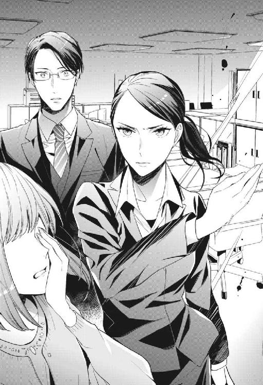
遠隔操作によるデータ消去の件はまた明日。三澤さんの処分と一緒に和久さんが上長と話をするということでまとまり、佳乃はタクシーに乗せられて帰宅した。
そして私はというと。
会社から徒歩五分の距離にあった和久さんのマンションで、手当てを受けていた。
「平手打ちしといて、自分が負傷するとか......」
「面目ないです......」
せっかく初めて和久さんの部屋に訪れたというのに、あまりの格好悪さに心の中ではしゃぐ気力も失せてしまった。だって酷すぎる。私は佳乃に平手打ちをお見舞いしておいて、慣れないその手の動きで自分の手首を思いきり捻ってしまったのだ。
皮製の黒いソファに座らされて、ビニール袋に入れた氷水を患部に当てておくよう指示された。私は大人しくそれを守っている。右の手首はまだジンジンと痛かった。
「固定用のテープもあるけど」
そう言って、ネクタイをはずしたワイシャツ姿の和久さんが救急箱を持ってきてくれる。......はしゃぐ気力もないと思ったけど、このシチュエーション最高ですね......！
完全にオフな姿の和久さんを前に、急激に恥ずかしくなってきて、同時にうなぎ登るテンション。整理整頓された部屋の所々に、洗濯物のタオルや、買ってきてそのままになっていると思われる詰め替え用のシャンプーなんかを見つけて、仄かに漂う生活感にときめく。
そんな感情をひた隠して、私はいたって真面目な顔で言った。
「大丈夫です。そこまでひどくなさそうなので」
「見せて」
「あっ」
「......やっぱり固定しとこうか」
隣に腰を下ろした和久さんに右の手首を優しく取られて、距離が一気に詰められる。
なんでもない顔をつくったつもりだけど、どうだろう。非常階段で何度言葉を交わしても、コートを肩に掛けてもらっても、こんな風に直接触れ合うことはなかった。......現実では。
「......」
摑まれた腕から、脈拍で緊張が伝わってしまうような気がする。
和久さんは黙ったままで、手際よく私の手首にガーゼを巻いていく。伏せた目から伸びる睫毛が長い。ちょうど眼鏡の上から裸眼が見えて、グレンのことを思い出した。
私にはまだ気になっていることがある。
それを尋ねようと口を開いたところで、先に和久さんが話しはじめた。穏やかな口調で。
「きみは強いな」
「......強い、ですか？」
「......」
「誇らしいよ、すごく」
テーピングの最中だったから、視線が合うことはなかった。それにしたって照れてしまう。和久さんにこんな風に褒められると、胸がキュウッと苦しくなる。好きなんだから仕方ない。
だけど。私は行動力がある部分を和久さんに見せた覚えがなかった。......現実では。
「和久さん」
「ん？」
まだ自分の失言に気付いていない和久さんは、普段の冷たい表情を緩めて私に微笑みかける。
その顔にもばっちりときめきながら、私は彼の目をじっと見つめて言った。
「和久さん、私と同じ夢を見てますよね？」
12．続く夢のような日々
「えっ」
私の言葉で、眼鏡の奥の瞳が揺らいだ。それで確信する。
「やっぱり......」
「あっ......」
わかりやすい反応をしてしまったことに気付いたらしい和久さんは〝しまった〟という顔をしてうつむいた。
私は綺麗にテーピングされた自分の手首をさすりながら言う。
「和久さんが三澤さんを問いただしてくれたって話でしたけど、なんでなのかなって不思議だったんです。私、データが消えた一件の詳しいことは、和久さんに何も話してなかったし」
「......そうだったっけか」
「誰かから三澤さんの嫌がらせについて聞いていたとしても、実行犯ではないから断定するのは難しかったと思います。......夢でミサがドレスを裂こうとしたから、三澤さんが嚙んでると疑ったんですよね。それで、佳乃がしたことに辿り着いた」
「......」
「他にも、夢の記憶があるんじゃないかなって発言がちらほらありましたし」
〝あまり一人で出歩かないようにな〟とか。〝意外と生意気なところあるよな〟とか。さっきの〝意外と行動力があって〟というのもそう。どれも現実の和久さんが口にするのは、違和感のある言葉ばかりだった。
和久さんは数日前の自分の発言を思い出すように宙を見て、それから自分の額に手を当てて〝はぁ〟と大きくため息をつく。それから、自らの夢について語り始めた。
「......最初は、ただの夢だと思って気にしてなかったんだ。自分がどこかの国の次期国王になってて、陳腐な夢だなって。朝起きると夢の内容も朧げなことが多かったし。なんとなく同じ世界観の夢ばかり見るなーくらいにしか、思ってなかった」
「......はい」
繫がりだした夢と現実に、私もなんだか緊張してきた。ソファの上で姿勢を正す。自分だけのものだと思っていた空想じみた世界を、現実の和久さんと共有していたなんて。そうだとわかっても理解はまだ追いつかない。
「だけど、ここ数回見た夢はなんていうか、ものすごくリアルで......。特にクロエが、中身まできみそっくりだった。それでも所詮夢だと思っていたから、ただ口が回るままに喋って、体が動く通りに行動して、グレンとして振る舞った」
グレンの中に、少なからず和久さんとしての意識があったということだろうか。私は黙って彼の話を聞きながら考える。
和久さんは、意識を持ちつつも夢の中ではグレンとして振る舞っていた。そうなると、どうなる？ 思い出されるのは繰り広げた痴態の数々。......もしかして、あれもこれも、和久さんの記憶の中にあるんじゃ......？
最悪の可能性が頭にチラついてそわそわしはじめた私に、和久さんは真面目なトーンで話を続ける。
「まるで現実のきみが、夢に迷い込んできたみたいに不思議な反応をするから、戸惑った」
「......あぁ」
それはたぶん、私が初めて夢を見たときのことだろう。確かにグレンは、右も左もわからない私に対して戸惑っていた。でも戸惑いながらも、彼は結局......。
和久さんはまだ真面目な顔で言う。
「夢の中にいるはずなのに〝和久さん〟なんて呼ぶから、変だなって」
「......私だって気付いてて続けたんですか？」
「......え？」
「〝天国を見せてやる〟とか」
「あ」
「〝早く入りたい〟とか......言ってましたよね」
「ごめん、黒江。ストップ」
和久さんは私の言葉を片方の手のひらで制すると、もう片方の手で自分の顔を覆ってカァッと赤くなっていた。それから蚊の鳴くような声で「悪かった......」と言った。......なにこの可愛い生き物。初めて見る和久さんの顔に釘付けになる。
「どうしてなんです？」
私だって恥ずかしい。だけど、バツが悪そうに照れるこの顔をもっと見たい。その興味が羞恥心に勝って、私は赤面する彼にグイグイと迫っていた。
彼は観念したようにこう零す。
「......あの日はきみが悪い」
「私？」
「きみが俺のスーツを抱きしめて、あんな......」
「......ごめんなさい和久さん。黙って」
今度は私が手のひらで言葉を制して、赤面することになった。......まさかここでそれを蒸し返されるとは！ いろいろあって都合よく忘れ去ろうとしていた、深夜のオフィスでの行い。和久さんのスーツを嗅いでしまった私の奇行は、何度思い出しても消えたいほど恥ずかしい。
だけど仕返しのつもりなのか、和久さんは黙ってくれない。
「あんなところを見てしまったから、そりゃあ......」
「......」
「......シたくもなるだろ？」
「っ」
う、うわあぁぁぁぁぁ!!
一人ならば声に出して叫んでいた。危うく夢と現実を混同しそうになる。こんなグレンしか言わなさそうなセリフを、まさか和久さんが......いや、グレンがああ言っていたときでさえ、彼の中には和久さんとしての意識もあったわけで。
頭の中が混乱する。......っていうか!! 自分で言っておいて私よりも照れるのはやめてください!!
「......顔赤くしすぎでしょう......」
「うるさい。きみが悪い」
「なんでも私のせいにしすぎですよ」
「......」
「......」
私たちの間に流れる、これまでとは違う種類の沈黙。今までただ彼の近くにいるだけで心地よかった。それが今は、気まずいことが多すぎて。くすぐったいことも多すぎて。
押し黙った私たちは、たぶん同じようなことを思い出している。私が夜中に部屋を抜け出したことを理由に、なし崩しに体を重ねたことや、媚薬のせいで真っ昼間から、植物園で互いの体を貪り合ってしまったことを。
「......」
「......」
意外と照れ屋だったらしい和久さんは、自分から沈黙を破ってくれそうにない。このまま二人で黙ったまま朝を迎えてしまいそうだった。それも馬鹿らしいので、私はもう一つ気になっていたことを尋ねてみる。
「和久さんに夢の記憶があったということは......現実が夢で起きたこととリンクしていたのは、全部が偶然ってわけじゃないんですよね？」
「......」
和久さんは、まだ顔を覆っている片手の指の隙間からちらっと私を見て、再びため息をついた。
「察しがよすぎないか......？」
「話が都合よくできすぎていたんですよ」
和久さんが否定しないから、やっぱりそうだったのかと腑に落ちる。
私が夢の中で起こしてきた行動の数々。
貿易のミスで地下牢に囚われた商人を、本人がアユザ国に謝罪に行けるよう解放してもらった。
企画書にきちんと目を通してほしくて、外交官のキドの部屋に夜中忍び込んで直談判をした。
折り合いの悪い法務官と財務官を和解させるために、不仲の理由を知ろうと情報通のキリコを訪ねた。
「夢で起こした行動の結果として現実が変わっていたんだとしたら、おかしなことが一つありました。私がキドに手渡した企画書は、結局最後まで受け取ってもらうことができなかったんです──それなのに、現実では西木戸部長がきちんと企画書を読んでくれていた」
「......」
「和久さんが頼んでくれたんですよね？」
「......」
徐々に赤みが引いてきた彼は、未だにバツが悪そうで。やっぱり否定しないから、私が言っていることは間違っていないんだろう。
「そう考えると......現実で、糸谷先輩がＡＹＵＺＡＷＡへの謝罪に同行させてくれる気になったのも、法務部長と経理部長が喧嘩をやめてくれたのも、全部和久さんの口添えだったんじゃないかなって」
言いながら私は、想像した。朝目覚めるたびに夢でのことを思い出して、夢を現実にしようと奔走してくれていた和久さんのことを。糸谷先輩を説得し、西木戸部長を説得し。さして接点のない法務部長と経理部長の間に立って、その仲を取り持とうとしてくれていたこと。
寒い非常階段でコートを貸してくれるような、スマートな優しさしか私は知らなかった。
「......もしかして佐々井くんの海外異動も」
「そんな権限俺にあるわけないだろ。それだけはただの偶然だ」
バツが悪そうにしていた和久さんが即答した。〝それだけは〟ということは、それ以外は和久さんがしたということ。
またも失言したことに遅れて気付いた和久さんは、ごまかしてももう遅いと悟ったのか黙っている。
「全部先回りして助けてくれていたんですね」
私が感謝を込めてそう言うと、彼はまた、私が見たことのない居心地の悪そうな顔をした。
「......でも途中で思ったんだ。これは本当に黒江のためになってるのかって。せっかくきみが自分で変えようとしているのに......。それに、やっぱりその努力は、夢じゃなくて現実でするべきだとも思ったし」
「だからあんな試すようなことを？」
昨日見た夢で、ミサの処罰について話しているときにグレンは言った。〝首を刎ねてもいい〟と。〝処遇はすべてお前に任せる〟と委ねてくれた。
今まで散々嫌な思いをさせられてきた三澤さんに対して、仕返ししてやりたい気持ちがなかったと言ったら噓になる。だけど私は結局、ミサに対しても罰を下すことを選ばなかった。
「きみは夢の中で権力を振るおうとはしなかった。石田のこともそうだけど、現実で解決することを選んだだろ。それは純粋にすごいことだと思ったし......さっきも言った通り、誇らしかった」
「......」
そういうことは照れずに言えるんだなぁ......。
嬉しい反面、面と向かって褒められるのは、二度目だろうと恥ずかしい。むず痒い気持ちになって、私はそっと目を伏せた。
そして唐突に思い出した。
「あっ！」
「えっ、何？」
いい雰囲気だったところ、急に声をあげた私に和久さんがたじろぐ。
「......夢。あっ、あのっ!!」
「どうしたんだ急に。落ち着いて......」
ぽんぽんと背中を叩かれ、それでも落ち着いていられなかった。私が今日一日、恐れるあまり先延ばしにしていたこと。まだ解決していない大きな問題が残っていた。
目前の和久さんに訴えかける。
「私、夢の中で襲われたんです！ 夜中にカノが部屋にやってきて、カノが連れていた男に口を塞がれて、私はそのまま気を失っ......」
「大丈夫だから。落ち着けよ」
「......大丈夫？」
何が大丈夫だと言うんだろう。私が他の男と契ってしまったら、グレンが引き継ぐはずの王位が他の男に移ってしまう。それを教えてくれたのは他でもない彼なのに。
釈然としない私の両方の手首を、傷めないように緩く摑んで、彼は静かに言った。
「きみが夜中に襲われたのは知ってる。婚礼前夜だ。警戒しないわけがないだろう？ カノと男が部屋に押し入ったのを見て、すぐに二人を差し押さえた。一瞬遅かったせいできみは気を失ってしまった後だったが......」
「じゃあ......私の体は」
「無事だ。傷ひとつ付けられてないよ」
「......よ、よかった......」
和久さんの腕を摑んで、私はへなっとその場に崩れる。絶対にもう手遅れだと思っていた。貞操を奪われて、グレンの王位も一緒に奪われてしまったものだと思っていた。
最初は〝所詮夢のことだからどうなったって〟と思っていたのに、すっかりそれでは割り切れなくなっていて。
和久さんはまだ私を落ち着けるように、一定の速度でぽんぽんと背中を叩き続けている。
「婚礼前夜だから警戒していたというのもあるし、婚礼の儀の予行練習のときも、きみは顔色が優れなかったから。気になって部屋を訪ねてみたんだ」
「......そんなに？ そんなにひどい顔してましたか、私」
「あぁ。とても結婚を明日に控えた花嫁の顔じゃなかった。夜の相手も何度か拒まれていたし、やっぱり結婚が憂鬱で気落ちしているんじゃないかって」
「そんなわけないじゃないですか......」
「......」
「......」
視線を交わした後に、唇が近づいてきたのが見えて私は目を閉じた。数秒後、柔らかく生温かな感触を唇に感じて、キスをされたのだと理解する。
初めての、現実の和久さんとのキス。それはほんの一瞬だけで、すぐに離れていってしまう。目前には眼鏡をかけたシャープな美しい顔。またほんのりと頰が赤くなっている。複雑そうな顔でぼそりとつぶやいた。
「......何もしないから、泊まっていかないか」
「......何もしないんですか？」
「......」
「夢の中みたいに、グイグイきていただいて大丈夫ですが......」
私も恥ずかしいのを堪えてそう言ったのに、和久さんはふいっと目をそらす。
「いや、まぁそれは......追い追いということで」
「......夢とギャップありすぎません？」
「夢は自分の願望を表すというからな」
「むっつりって言うんですよ、そういうのは」
現実はもう少しスローペースで進みそうだ。
それでも気持ちが通ったことが嬉しくて、これは私の望みに違いないと思った。
〝求められたいわけじゃない〟とか、〝そこまでのことを和久さんに望んでいない〟とか、噓ばっかり。あれだけ好きでたまらなかったのに、想っているだけでいいはずがなかった。
求められる喜びを知った今なら、素直に自分の欲望を認められる。
意外と奥手だった和久さんは本当に手を出してくることなく、私たちは二人で彼のベッドに潜り込んだ。セミダブルベッドの上でお互いガチガチに緊張していたところ、彼が勇気を出して私の頭を撫でてくる。ぎこちなかったけれど、その手の大きさと温かさに安堵のため息をつく。
「......本当に大丈夫ですよね？」
「大丈夫だから。これから見るのは悪夢じゃない。......安心して寝ていいよ」
柔らかなその声で、最後の不安は消え去った。知らなかったなぁ。現実で、こうして彼の腕の中で眠れる日がくるなんて。こんなに心地よく眠れる夜があることも、これまで私は知らなかった。
私は目を閉じて、早くも眠りに落ちそうになりながらつぶやいた。
「......おやすみなさい」
「おやすみ」
落ちる寸前に彼が囁く。
「また夢の中で」
・・・
次に目を覚ますと、私は自分の部屋にいた。ワンルームの、手を伸ばせばだいたいの物に手が届く狭い部屋じゃない。天井も壁も遠くて、私一人が使うにはあまりに広すぎる部屋。次期王の婚約者に割り当てられた部屋だ。
その肝心の次期王は今、隣にいない。だけど緩く抱きしめられていたような感覚が体に残っていて、さっきまではここで一緒に眠っていたんだと確信する。
（......逃げましたね和久さん）
きっと現実でのやり取りを経て、気恥ずかしさに耐えきれなくなった彼は、先にベッドを抜け出したに違いない。グレンとして振る舞っていたときは、あれだけ好き放題しておいて......。
深く嘆息して、私はそろりとベッドを抜け出した。同時にコンコンッとノックの音が響く。
『おはようございます、クロエ様。お支度のお手伝いに参りました』
「はい」
返事をしてよたよたとドアの前まで歩き、内側から解錠する。こちらからドアを開くと、廊下にはルミさんが一人で立っていた。
私に何と声をかけていいか、困ったような笑顔を浮かべている。
「......お加減はいかがですか？」
この様子だとこちらのカノも捕まっていて、メイドの間でも昨晩起きたことが知られているんだろう。ミサに立て続いてのことだから、ルミさんは心配してくれているようだった。
「大丈夫。問題ないです」
心配を取り払うように笑って見せる。
現実で佳乃に一矢報いることはできたけれど、こっちの世界ではまだすっきりしないことがいくつかある。現実と並行してこの世界も続いていくなら、逃げずに向き合っていかなければ──ただ今日だけは、笑顔でいよう、と思う。
今日は婚礼の儀式を挙げる日。そして、グレンの戴冠式だ。
用意されていた豪奢なドレスを身に纏う。シルクの光沢が美しく、胸に設えられたレースは繊細で。サファイアとダイヤだと思われる石が嵌められたネックレスは重く、着けられた瞬間に首が下がった。豊かで綺麗なドレープを床にゆったりと這わせ、私は前回の夢で予行練習をした順路を歩く。
グレンは儀式の本番まで私と顔を合わせようとしなかった。
直前の控室にも現れなかったくらいなので、夢の記憶があると私にバレたことが相当恥ずかしかったらしい。......そんなこと言った私だって！ どれだけ恥ずかしいか！
現実では本人を目の前にしていたから動揺していて、深く考えが及ばなかったけれど。考えれば考えるほど恥ずかしい。だってグレンはあんなに欲望に素直に〝咥えてくれるか〟とか〝抱き潰す〟とか......。あれが全部和久さんの願ったことだというのなら、彼はとんでもないむっつりだと思う。
そんなむっつりな彼は、今。私が一段一段踏みしめて登る祭壇の上で、私がそばまでやってくるのを待っている。
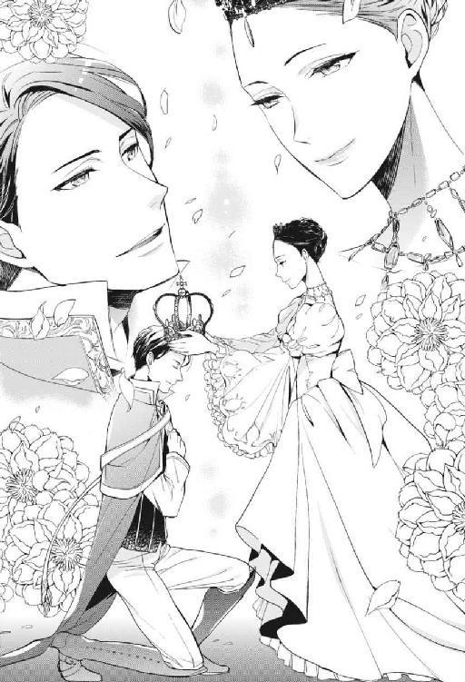
途中でずっこけないよう慎重に。手に持った王冠を、決して落とさないよう慎重に。王冠はとても細かな模様で透かしが入っていて、天窓から射す日光をギラギラと反射させるからまぶしくてかなわなかった。目を閉じてはいけない。格好悪く目を細めてもいけない。まっすぐグレンの顔を見る。
今日、目覚めてから初めて私たちは目を合わせる。私と視線が合うなり、彼はそのアーモンド型の綺麗な目を細めて、柔らかく微笑んで。〝綺麗だ〟と音を発さずに口で伝えてくる。今の今まで気まずい顔をしていたくせに......。
最後の一段を無事登りきって、私はグレンの正面に立つ。彼は練習のときと同じように頭を低くして、胸に手をあてている。忠誠を誓うポーズ。それはノズワルドの国と民に対して。そして伴侶となる私に対して。
そっと頭上に王冠を載せた。夢を見るようになってから、私はたくさんの願いを自覚してきたけれど。このとき王冠から手を離しながら願ったことは、いつも心の中で唱えていた。
〝優しくて損ばかりしているこの人の毎日が、少しでも幸せなものでありますように〟
頭に立派な王冠を載せて、顔を上げたときの優しい顔を。この戴冠式に立ち会ったすべての人が、いつまでも覚えていてくれたらいいなと思う。
「ありがとう、クロエ」
今日初めて彼が発したその言葉で、結局嬉しい気持ちが勝ってしまって私は微笑み返した。
無事に戴冠式を終えたその日の夜。グレンは私の部屋にやってきた。
「初夜だからな」
そう言っていそいそと私の服を脱がせにかかる彼を、私は白い目で見た。
「............おかしくないですか？」
「え？ 何が？」
「何がどうなったら、キスだけで照れていたような人が出会い頭に押し倒してくるんです」
「いや......夢では違う自分になれるというか......」
「ん......」
彼の言い訳を聞きながら、首筋を這う甘い感触に身をよじる。熱く湿っぽい唇からは少し荒い呼気が漏れていて、彼が早速欲情していることを知る。
「ん、は......お前だってシたいだろ？ ......夢の中みたいにグイグイきてもいいって、言ってたし」
「呼び方まで〝お前〟になってるし......！」
和久さんは私のことを〝きみ〟と呼ぶけど、グレンはずっと〝お前〟や〝クロエ〟と呼んでいた。日常生活の中でよく間違えなかったものだと思う。切り替えがしっかりしているというか......もはや二重人格なんじゃないかと疑うレベルだ。
「〝きみ〟って呼ばれるのがいいのか？」
「ふぁっ!?」
問われながら、耳の中をベロッと舐められて変な声が出た。グチュッと唾液の音が鼓膜に響いて、頭の中がそれでいっぱいになる。
「は、ん、んんッ......」
耳の中を執拗に攻められながら、夜着の上から乳房を大きな手に撫で回される。そうすると不満は喉の奥に引っ込んでしまって、変わりに、自分のものとは思えない甘い声が出てきた。
「あん......ンッ、ふぅっ......」
熱い吐息を耳の中に吹きかけられて、ビクンと体が小さく痙攣する。それを確認すると彼は、チュッと耳にキスをした後、夜着のワンピースを捲りあげてお腹にキスしはじめた。ジュッといやらしい音をたてて、たっぷりと口づけて。そうしながらおかしそうに笑う。
「そうだな......。どう呼ばれるのが一番感じるのか、試そうか」
「え......？」
繰り返される口づけとくすぐったいほどの愛撫に、息も絶え絶え。彼は何を試すと言ったのか。言われたことを私が理解するより前に、グレンは自分のガウンの下をはだけさせた。いつの間にか反り返るほど膨張していた陰茎を脚の間に宛てがい、舌なめずりをして私を見下ろしている。
「なっ......い、っ、んあぁッ!!」
ズブッとひと思いに突き立てられたと思うと、次の瞬間にはぎっちりと私のナカを満たしていた。突然の衝撃にのけぞり、ぎゅっと目を閉じて彼を受け入れた私に、グレンは深いキスをしてくる。
「ふっ！ ふ、うっ......んんっ」
ぬるっと蠢く舌に、息継ぎと一緒にこぼれる熱い息。ナカでじっとしていてくれたのは一瞬だけで、キスの途中からは腰が動きはじめていた。緩く前後に揺さぶられる。
「んっ！ んぅっ......！」
「ん、はぁっ......名前を呼ばれるよりもキスが好きか？ クロエ......。舌を吸うたびに、締まりがよくなってる」
「あっ、はッ......」
唇が離れたときには息継ぎするだけで精一杯で、返事をする余裕はない。造りのいい上質なベッドをギシギシと軋ませるほど、グレンは激しく腰を振って私を追い立てていった。グッと根本まで押し込まれるたびに、私の喉から〝ヒッ〟と声が漏れる。
「んっ、あんッ！ はっ、あっ......」
「はっ、はっ......あーッ......いい、クロエ......。うねって、まったく俺を離そうとしない」
「んんぅ......」
「最高だ......」
お腹の辺りをズンズンと突かれて、次第に意識が溶けていく。
私の上には、汗をこぼしながら気持ちよさそうに眉根を寄せているグレン。
「あーッ......はぁっ、あぁっ......クロエッ......！」
必死で腰を振って、私の体で気持ちよくなっていて。可愛い人、とぼんやり思う。それから、目の前の逞しい体を抱きしめるだけで湧き上がってくる多幸感。溶けていく。
「んっ、あんっ......あのっ......」
「ん......？」
声をかけると、少しだけ腰の動きを緩めて顔を覗き込んできた。気持ちよさそうに興奮しているその顔の、唇にそっと指で触れる。
「一つだけいいですか......？」
「なに......？」
「んんっ......私ね。下の名前は......〝クロエ〟じゃないんです。ご存知の通り」
「......うん」
「呼んでください」
そうお願いしてから、彼の首に腕をまわしてぎゅっと抱き着いた。名前を呼んでとねだるのは、快楽をねだることよりもなぜか恥ずかしい気がした。
顔のすぐ横で、ふっと空気が柔らかくなる気配。見なくてもわかる。優しい顔をしている。
「奈ノ花」
眠っている間に見る夢には、自分の願望が表れるものらしい。それなら、この目眩がするようなリアルな世界には、一体どれだけ私の願いが隠されているんだろう？
現実を変えていきたい。
続く夢のような世界の中で、私は本当の願いを見つけていく。
後日談『男の夢路』
「いざ!!」
〝よし来い！〟という感じに両手を広げて、彼女は凛然とした表情で俺のことを見た。
ただ今の時刻、夜の十時。場所はマンションの一室。詳しく言うと俺が普段眠るベッドの上。
彼女は裸体にバスタオル一枚を巻いていて、俺も腰にバスタオル一枚を巻いている。これから肌を重ねて交わろうとしている、そういう状況だった。
もっと平たく言えば、これから初エッチに臨もうという状態。
「いや......〝いざ〟って」
その掛け声はなんか変じゃないだろうか。何か勝負が始まりそうな。
張りきる気持ちはわかるけれど、色気も何もないその掛け声に少し気が抜けた。その潔さは、〝武士みたい〟だと囁かれる彼女らしいといえば、彼女らしいのだが。
俺が彼女のテンションに乗らなかったからか、黒江は広げていた手を引っ込めて、呆れた顔になった。
黒江奈ノ花。同じ会社に勤めている後輩で、最近、俺の恋人になった。
夢の中では俺の妻だ。（こう言うと俺がとってもヤバい奴みたいだが）
「ここまで来て、何を渋ることがあるんです？ 格好なんてほぼほぼ裸ですよ」
「うーん......」
そう言われると意識して見てしまう。たった一枚のバスタオルに覆われた華奢な体。その布の下がどうなっているかを、俺は既に知っている。手のひらの吸い付く湯上りの肌の感触も、つい腕に抱きたくなるくびれの細さも。
思い出すとついムラッとして、密かに体が反応してしまう。腰に巻いているバスタオルを押し上げんばかりに如実に反応するので、バレないようにベッドに座りなおした。黒江は深いため息をつく。
「あっちの世界だったら部屋に入る前からドレス剝いてくるくせに......」
「......」
それを言われると弱い。
夢の世界では、妻である彼女のことを毎晩のように抱いている。腕の中に捕らえて、彼女が疲れ果てて〝もう無理〟とベッドを這い出そうとしても連れ戻し、一晩中だって愛していられる。彼女とのセックスは慣れたものだった。──それが、現実になるとどうもうまくいかない。自分でもなぜだかよくわからないのだが、現実で黒江を前にするとどうにも生々しく、気恥ずかしさに襲われるのだ。夢の中とやることは何も変わらないのに、どうしても手が出せない。
欲情しないというわけじゃあない。むしろ欲情はめちゃくちゃしている。バスタオル姿を見ているだけでこうなのだから、ベッドに入って一緒に眠っているときなんかはどれだけ大変か。髪の匂いを嗅いでいるだけで反応してしまう自身の欲望を彼女の体に押し付けないように、バレないように距離を取るのがどれだけ難しいか。そんなことを正直に話せばきっと、黒江は「抱けばいいじゃないですか！」とまた呆れた顔になるんだろう。
夢の真相を明かしたあの夜に交際を始めて、一カ月。
夢の中では毎晩のように愛し合うのに、現実ではキスまでの清い交際を続けているという変な状況が出来上がっていた。
「今どきの高校生でも、私たちよりは進んでるんじゃないですかね」
「うるさい。こっちではまだ処女のくせに」
「その処女にお尻を叩かれてるのは誰ですか」
「......」
俺ですね。
正論すぎて何も言い返せなくなった。苦し紛れに言った悪口に、彼女はノーダメージ。俺はしっかりカウンターを食らって、ふて寝したい気分に。だけどそんなこと、今晩の彼女は許してくれそうもない。
「もう、腹を決めてしまいましょうよ、和久さん。一回こっちで経験してしまえば慣れます。どうせ夢と同じで絶倫おばけです」
「ひどい言い草だ......」
「だって絶対そうですもん」
真面目な顔をして、黒江はそんなことを言う。絶倫おばけ。夢の中の俺をそんな風に思っていたのか......。それも俺の気恥ずかしさに上乗せされて、ますます手が出しづらくなる。
「私だって、現実でまで夢と同じように求められたら、体力が持たないかもっていう心配はあるんです。......それでも、こうやって熱心にお誘いしてる意味、わかります？」
「......」
彼女の濡れた髪からポタポタと滴が垂れる。さっき、一緒にシャワーを浴びた。緊張を慣らそうとお互いの体を洗い合い、だけどそれのせいで余計に恥ずかしく、ベッドで向かい合ったまま数分が経過しようとしている。
「っくゅん」
あぁ風邪を引いてしまう......。
ついに黒江がくしゃみをするようになって、俺の心はザワつきだした。一定の距離を置いていたところから近づき、湯冷めしてきている彼女の体を掛け布団で覆う。
「とりあえずきちんと髪を乾かして......」
「そんなことをしていたら、私がドライヤーをしている間に服を着てしまうんでしょう」
「......」
うん、まぁ。そうするかな......。
鋭い指摘に黙ってしまう。とりあえず、そばにあったフェイスタオルを手に取り、わしゃわしゃと彼女の髪を拭きにかかった。風邪を引かせたくはない。
「あー......寒い」
「ほら、言わんこっちゃない......」
「〝ほら〟じゃないでしょ。和久さんがその気になれば、私の体を一瞬で温められるんですよ」
「おっさんみたいなことを言うんじゃないよ」
タオルと髪の隙間から、黒江のムッとした口元が見えた。〝処女〟は平気なくせに、〝おっさん〟と言われるのは嫌らしい。よくわからん。
彼女は自分の髪を拭く俺の手をそっと捕まえて、顔を上げて覗き込んできた。髪とタオルで隠れていた目と視線が合う。
（しまった）
さっきまでわざと距離を取っていたのに、気付けばすぐにでも抱き合える距離にいた。見上げてくる濡れた瞳にゾクッとする。物憂げな瞳。キス以上のことをねだる目が、しっかりと視線を捉えて離さない。
「そろそろ愛してもらえませんか。現実でも」
そう言って、黒江は。俺が腰に巻いているタオル越しにそっと撫でてきた。さっきから密かに勃起していたソレは、撫でられることで簡単に形を露わにして、俺の本音を詳らかにする。
「ほら......挿れたいでしょう？」
急に触れられるとは思わず、ギョッとしていた俺に、彼女は妖艶に微笑みかけた──こんなに悪い女だったとは。付き合うまでは知らなかった小悪魔な一面に、頭を抱えるしかない。嬉しい誤算な気もするし、自分の手に余る気もするし。油断すると手のひらの上で転がされてしまいそう。
「っ、あ......っ、黒江っ......」
黒江の細くしなやかな手が、タオル越しに亀頭を撫でる。その感触はもどかしく、物足りないながらも気持ちよかった。
夢ならば、迷わず「直接触れて」と願い出ていただろう。どうして現実ではそれができない。自分の中に根を張っている妙な〝照れ〟を恨めしく思いながら、もっと刺激が欲しくて腰を揺らしていた。
「気持ちよさそうですね、和久さん」
「っ、やめっ......」
「自分ばっかりズルい」
「はっ......」
その拗ねた物言いに、俺の中で、何かが少しだけ振り切れた。気恥ずかしさよりも黒江を気持ちよくさせたい感情がわずかに勝り、俺は髪を拭いていた手で彼女の後頭部を持って、上を向かせて唇を奪った。
「ン......」
口の中を舐めると、黒江は色っぽい声を漏らす。その声にカァッと耳が熱くなって、俺の意思とは関係なく、黒江に触れられている陰部が高ぶるのがわかった。
「っ、黒江ッ......」
めちゃくちゃに唇を味わう間にも、黒江は俺自身を擦り続けた。彼女の緩急の付け方は絶妙で、〝なんでこんなに巧いんだ......！〟と一瞬衝撃を受けたが、すぐに自分のせいであることを思い出す。俺が、夢の中で仕込んだのだ。何も知らなかった彼女に、一から。どこをどうすると気持ちよくなるのかを。......なんてことを！
弱点を余すことなく教えてしまった夢の中の自分を責める。彼女の手の動きは気持ちよく、気を抜くと出してしまいそうだった。それはあまりに格好悪すぎるので。
「ぁっ......ひぁっ。ん......和久さん......？」
「は......」
キスを続けながら、俺も彼女に触れはじめた。彼女の脇の下を両手でがっちり摑みながら、親指で両方の胸の先をいじる。
「あっ......あっ、それ、だめっ......！」
......あぁ、なんだかこれ、最後までしないわけにはいかない展開になってきた。
お互いの恥部を触り合いながら、感じ合いながら。ねっとりと舌を絡めて唾液を奪い合う。夢の中で何度となくクロエと繰り返してきたことが、現実で彼女と自分がしていると思うと、よりいやらしく背徳的に感じられて。
「んはぁっ......和久さっ......ん、和久さんっ......！」
乳首をグリグリと親指で転がすと、黒江は悩ましい声をあげた。夢の中では便宜上、彼女は俺のことを〝グレン〟と呼ぶ。だから、気持ちよさそうな声で名前を呼ばれることには慣れていなくて。たまらなくなって、より深く口付ける。
「んんッ！ あ、ん......！」
華奢な体を強く抱き込むと、上体が絡んでいるうちにはらりと黒江のタオルがはだけた。口の中の甘さに脳が溶けて、無我夢中で貪る。勢い余って意図せず彼女をベッドの上に押し倒していた。それでも勢いは止まらなかった。黒江は苦しそうにしながらも、嫌がることなく〝はっ......〟と息継ぎをして、もっととねだるように舌を伸ばしてくる。
「あっ...‥和久さんっ......」
（......あぁもうっ！）
こんなにエロいだなんて知らなかった！
誰かに文句を言いたい気分だ。気恥ずかしいのに、もう、そんなことは言っていられない。こんな風にねだられれば、誰だって。
「あっ、あんっ......！」
タオル越しに局部をゴリッと押し付ける。彼女に丹念に扱かれたせいで最大にまで膨れ上がった肉欲は、早く熱い蜜壺の感触を味わおうと急いていた。タオルを捲り上げれば、簡単に挿入ってしまうだろう。
黒江は感じて、頰を上気させながら熱っぽい目でこちらを見て。
「いいですよ和久さん。......きて」
「はっ......」
彼女の柔らかな胸を揉みしだきながら、思う。
──あまりに渇望していたから、逆に触れるのが怖かったのかも。
現実で彼女に触れることに異様に照れてしまっていた原因に思い至った。
その答えは、ついこの間までの自分の中にあった。
＊
辞令が下された日はどうしようもなく憂鬱だった。役員に呼び出されて、何の話をされるかと思えば、不意打ちのビックリ人事。言い渡されたのは〝部長への昇進〟。
（俺が？）
出世は純粋に嬉しかった。だけど〝今じゃなくてよかったのに〟というのが正直な感想で。
話に聞く限り、三十歳過ぎで部長になったという前例はない。周りの風当たりがキツくなるのは目に見えていたし、自分よりも遙かに年次が上の先輩が部下になるというのは、どう考えてもやりにくい。
おかしな夢を見るようになったのは、実際に部長職に就いて、しばらくしてからのことだ。
今までと同じようにはやっていけないと悟った俺は、会社での振る舞い方を変えた。道理に合わない陳情は叱り飛ばし、切るときはばっさりと切り捨てる。仕事の判断基準を感情的な部分とは別のところに置かないと、まだ若い俺が社内で信頼を勝ち取るのは難しかった。信頼がなければ意見は通らず、結果的に、いざというとき部下を守れない事態になる。
心を鬼にするしかなかった。或いは、俺がもう少し器用だったなら、もっと別のやり方もあったのかもしれないが。自分より十歳は上の部下を叱り、浮ついた気持ちの若手を何人も泣かせた。当然、胃は荒れた。
（管理職つらい......）
そんなこと、まさか会社の人間には言えないし。
かといって、管理職の業務がプラスオンされた忙しい状況下で、親や友達に愚痴る時間もない。
（会社のない世界に行きたい......）
情けないことを考えながら、疲れ果てた体でベッドに深く沈み込む。他人を叱り飛ばす自分のことは、どうしても好きになれなかった。このやり方で本当に合っているんだろうか？
（でもこれ以外に、どうやって）
出口のない森に迷い込む。ぐるぐる思考の渦に落ちていく。深く、深く、泥のような眠りについて──そして。
次に目を覚ましたときには、ヘンテコな『ノズワルド国』にいた。
〝これは夢だ〟と自覚している、不思議な夢だった。小高い丘の上に建つ石造りの立派な城。バルコニーから一望できる賑やかな城下町。やけにくっきりとして色鮮やかな夢。子どもの頃から繰り返し見ている、ファンタジー映画の舞台に似ている。登場人物は現実に実在する社内の面々。自分が叱りつけた部下や自分を毛嫌いしている同僚たちが城で働いて、俺に仕えていた。
夢の中で俺は、その国の次期王になっていて。
（よっぽど疲れてるんだな......）
会議室で外交官たちが貿易の在り方について議論するなか、俺は頰杖を突いてぼんやりとそれを聞いていた。
なんだかよくわからない夢を見ている。確かに〝会社のない世界に行きたい〟とは願ったけれど、会社も王国も似たようなものだと思う。役職が定められていて、何を考えているのかわからない人間がたくさん、それぞれ意思を持って生きていて。忙しなく生きづらい世界だ。
（煙草吸いたい......）
しかしどういうわけか、次の夜も、そのまた次の夜も同じ世界の夢を見た。一日の仕事を終えて自宅に帰り着き、よく馴染んだセミダブルのベッドに入って体を休める。すると次に目覚めたときには必ずキングサイズのベッドの中にいて、次期王に課せられた山積みの仕事が待っていた。夜が深まりキングサイズのベッドで体を休めると、吸い込まれるように眠りに落ちて、朝。セミダブルのベッドで目を覚まし、会社に出勤する。......働いてばっかりじゃないか!?
あっちでもこっちでも、会議・視察・労働管理。しかし不思議なことに、疲労は溜まらなかった。夢はあくまで夢で、眠っている間に体は休息を取れているということなのか。どちらの世界でも朝目が覚めると頭はスッキリしていて、体は軽くて。釈然としなかった。肉体的には平気かもしれないが、精神的には普通にしんどい。
不思議な二重生活。なんだか損しているような気がしたけれど、眠れば必ず夢の中のノズワルドに導かれた。
そろそろお祓いにでも行ったほうがいいんだろうか......と思いはじめたある日の昼下がり。会社の非常階段で、一人昼食を食べていた黒江奈ノ花と出会う。
「......黒江？」
彼女の存在は認識していた。〝落武者黒江〟というあだ名は有名で、ずっと前から彼女はそう呼ばれていた。
つまらないあだ名を考える奴がいるもんだ、くらいの認識だった。本人との面識も特にない。だからこの時、ほぼほぼ初めてまともに顔を合わせた彼女は、俺を見て顔をひきつらせるんだろうなと。おっかない部長と運悪く鉢合わせてしまったと、悔やむんだろうなと。そう思っていた。
「お疲れ様です」
「......」
黒江は俺の顔を見ると、真面目な顔でごく自然に挨拶をした。そして躊躇せず、手にしていたみたらし団子を美味しそうに頰張る。
「......みたらし団子」
その絵がちょっと間抜けでおかしく、俺はつい口に出してしまっていた。
黒江は口の中のみたらし団子をなくすと、眉を顰めて尋ねてくる。
「......えっ。要りますか？」
そんな嫌そうにせんでも。
「いや、要らない」
「美味しいですよ」
「あ、じゃあ......」
「......」
......嫌そうにするなら勧めるなよ！
黒江の眉間のシワはさっきよりも深くなった。
「......やっぱり遠慮しとく」
「そうですか」
なんだこの子は。今度は嬉しそうにして。
俺は気にせず煙草を吸うことにした。ライターで火をつけて、そこでハタと気付く。後ろの黒江を振り返る。
「ごめん。そっちに煙いってる？」
「いいえ」
彼女はまっすぐこちらを見ていた。......見られていた？ 自意識過剰だろうか。不思議な気持ちで俺が〝そうか〟と返事をすると、黒江は言葉を続けた。
「ここで吸うの、寒くないですか？」
「......そんなこと言ったら、きみだって」
黒江は薄手の黒いカーディガンしか纏っていなかった。過ごしやすい時期になったとはいえ、風が吹きすさぶ非常階段でその格好は寒い気がした。コートを着込んできた俺でも少し寒いのだ。
彼女は真面目な顔のまま、その顔に不似合いなおどけた声で言う。
「私はほら。戦から命からがら逃げおおせてここに辿り着いたので、装備は弱めなんですよ。〝落武者〟だけに」
「......」
「......ここは笑うところですよ？」
「無茶な」
笑えるか。
高度な自虐ギャグに戦慄する俺をよそに、黒江はまたみたらし団子を一口。
「それはまあ、いいとして」
「......」
〝落武者黒江〟なんて揶揄されるくらいだから、もっと気が弱くて控え目なタイプなのかと思っていたが......。マイペースな語り口に引きずられる。というか、黒江は俺のこと、苦手じゃないんだろうか。
「こんな寒いところで吸わずに、喫煙所で一服されたらいいのに」
「......そうしたいところだけどな」
「何か不都合が？」
「......」
物怖じしないまっすぐな目の力強さ。顔には出さなかったが、俺は内心たじたじだった。最近は人をうつむかせるばかりで、強く目を見つめ返されることに慣れていなかったのだ。
全然話すつもりなんてなかったのに。また煙草を吸うために明後日の方を向いて、煙を吐き出すついでにしゃべってしまう。
「人の休憩時間は邪魔したくない」
「邪魔？」
「怖い上司と同じ空間で吸ったって、気持ちが休まらないだろう」
「あぁ......」
黒江は納得したように小さく頷いた。
彼女に話した通りだ。これまでは普通に喫煙所で一服していた。だけど最近、自分が足を踏み入れると先客の口数が明らかに少なくなることに気付いた。だから別のところで吸おうと思ってここに来たのだ。
（......だけど、これでいいのか？）
自分のやり方に、確証はやっぱり持てなかった。
ぼんやりとして煙草をふかす俺に、背後から黒江が声をかけてくる。
「偉いですね、和久さんは」
「......馬鹿にしてる？」
驚いて黒江の方を見た。〝偉い〟だなんて、昇進してから誰にも言われていない。一瞬本当に馬鹿にされたのかと思った。だけど、黒江は変わらず真面目な顔をしていた。
「まさか。尊敬してます」
「......」
ストレートな物言いがいちいち胸をザワつかせる。俺は〝どうだか〟と真に受けていない風に返しながら、ついニヤけそうになる口を、煙草を咥えることでごまかしていた。
その日から非常階段で顔を合わせることが多くなった。お互いの存在に気付けば「お疲れ」「お疲れ様です」と言葉を交わして、後はそれぞれ自由に振る舞った。俺は階段の柵にもたれて煙草の煙を吐き出し、黒江は階段に腰掛けて何か間食をしている。たまに思い出したように「今日は蒸し暑いな」「ですね」というやり取りがあって、だけどそれ以上に踏み込んだ会話はしなかった。
それでも、俺の中で黒江への関心は高まっていった。
オフィスでは、隣の部署の隅っこにいる黒江。それまであまり意識して目を向けたことはなかったが、よくよく観察してみると彼女を取り囲む空気はどこかおかしかった。同僚の何気ない態度。上司が彼女にかける言葉──馬鹿にしているのか？ と、側から聞いていて腹が立つくらい、彼女の社内での扱いは明らかに不当なものだった。
（言い返せばいいのに......）
非常階段で飄々とした彼女と接した俺は、知っている。黒江にはそれができる。
言い返せるだろう。澄ました顔をしてないで、ちゃんと自分を守らないでどうする。
ハラハラした気持ちでオフィスの中の彼女を見ていた。すると黒江は、澄ました顔をつくる直前、泣きだしそうなのをグッと堪えて。
絶対に折れないように深く息を吸い込む瞬間を、俺は見た。
その瞬間のことは、今も鮮烈に覚えている。黒江は、闘う決意はもうとっくに決めているという顔で平静を装っていた。
折れてしまえばきっと楽だ。〝こんな扱いを受けていて苦しい〟〝つらい〟と人事にでも訴えれば、このご時世、それなりの対処はしてもらえるだろう。明らかに嫌がらせが過ぎる同僚には指導がいくだろうし、働きづらければ配置転換だってあるだろう。
折れないほうがつらい。〝大丈夫〟という顔をしている限りこのままだと、わかっているくせに。それでも涙を飲み込んだ黒江は不器用で見ていられない。見ていられないけど、綺麗だと思った。
手を差し伸べるのは簡単だ。ここで俺が黒江を擁護すれば、一時的に彼女の扱いは変わるかもしれない。でもそうじゃなくて。〝和久部長に贔屓されて〟とかそんな陰口はなしに、彼女はちゃんと今の仕事を評価されるべきだと思う。
（どうすれば......）
正しい形で、彼女は報われるんだろう。気付けば、そんなことを考えるようになっていた。どうすればそれが叶えられるかと手をこまねいたまま、俺は夢と現実の二重生活を続けた。
ある日、夢の中の大浴場でのことだ。侍女をすべて追い出し伸び伸びと湯に浸かっていたら、ふと気になった。
この夢の中の世界には、現実に実在する人物が山のように登場する。身近な人から顔だけしか知らないような人まで。俺が姿を覚えてさえいれば、夢の中に実体として現れることができるんだろう──ということは、だ。
（黒江もこの世界のどこかにいる？）
思いついてからの俺の行動に迷いはなかった。夢の世界で権力を振るうことにも慣れつつあった俺は、家臣に命令して黒江を探させた。どんな身分になっているかはわからない。だけど外見だけは変わっていないはずだ。
吊り目がちでキリッとした顔の、長い黒髪の女を探すよう命じれば、三日後には夢の中で黒江と対面できていた。
「......」
目の前に現れた女はみすぼらしい格好をしていて、ボロい布切れを身に纏っていた。まるで戦から命からがら逃げ延びた武士のように。聞けば彼女は辺境の僻地に住んでいて、領主から搾取を受け、一人貧しく暮らしていたのだという。
「......名前は？」
「クロエ」
素っ気ない答えを聞いて、間違いなく自分の知っている黒江なのだと確信する。
ただ不思議なことに、その瞳の中には何の光も熱もない。現実の黒江奈ノ花とは違い、夢の中の彼女は抜け殻だった。
どうしてなんだろう。不思議に思いながら、さほど迷わず宣言していた。
「お前を妻にしたい」
執務室に広がるどよめき。クロエを連れてきた衛兵たちと大臣（※全員同僚）は、顔を真っ青にしていた。クロエ本人はというと、不思議そうな顔をして、〝嫌〟とも〝良い〟とも言わなかった。
現実でどう黒江をフォローしていいか手を出しあぐねて、その反動で夢の中のクロエをベタベタに寵愛した。仕立て屋にいくつものドレスを誂えさせて、クロエ付きのメイドを三名用意した。美味しいものを食べさせて、体を磨きあげさせ、尽くせる限りの贅を尽くさせた。それで現実が何か変わるわけでもないのに。
クロエはとりたてて喜ぶ様子もなく、与えられることを不思議そうにしながら受け取るだけ。拒みもしないし、もっとと欲しがることもない。ただの人形みたいだと寂しい気持ちになりながら、それでも、現実でままならない生き方をしている黒江を見かけるたびに、俺は夢の中でクロエを愛でた。
婚約者となったクロエとはベッドを共にすることもあった。自分が〝妻にしたい〟と言った手前、夜に部屋に赴かないでいると周囲に不審がられたせいだ。代々次期王の婚約者に与えられるという部屋は小綺麗で適度に広い。その部屋の隅にあるベッドでいつも、白く透けたワンピースを纏うクロエが座って待っていた。
（......裸）
ほぼ裸だったと言っていい。白のワンピースは何の素材でできているのか、クロエの体のパーツがはっきりわかるほど薄く透けていて。胸の先でツンと尖っているピンク色の突起。大事な部分を隠すように生えている黒い茂み。絶対に見てはいけないものを見ている気がして、目眩がした。当然、欲情もした。
「......クロエ」
ベッドの上で彼女の上に覆い被さり、白いワンピースを捲り上げて体をまさぐる。夢とはいえ、黒江にこんなこと......と、罪悪感に駆られはしたが、無防備に晒された裸体を前にしては手が止まらなかった。
「はッ......クロエっ......」
ピンク色の突起を指でグリグリと転がし、白く透き通る肌に口付けていく。あいつの体は、こんなにも綺麗なのかと。欲情すると同時に感動していた。現実ではあのカーディガンの下に全部隠されている。自分がそれを暴くことはないだろう。黒江奈ノ花と俺がそういう関係になるということは、まったく想像できなかった。
「ふっ......んっ......」
夢の中のクロエは敏感だった。胸も、背中も、臍の下も。触れればピクンと反応するし、可愛い喘ぎ声も漏らす。その姿に煽られて何度も唇を奪った。勃ち上がった乳首を口に含み、中指を蜜壺の中に挿れてグチグチと搔き混ぜ、クロエが潮を噴くまでしつこいほどに攻め続けた──だけど不思議と、最後までしようという気持ちにはならなくて。
「......はっ......しないんですか......？」
ドロドロに蕩かせたクロエは俺を見上げて尋ねてくる。
「気が乗らないからここまでだ」
「そうですか」
俺が中断しても、クロエはどうでもよさそうだった。ほっとしている様子もなければ、もどかしそうにするでもない。このクロエにとってみれば、俺と体の関係を持とうが持つまいが、たいしたことではないんだろう。俺は一気に萎えてしまった。
夢の世界でクロエを抱かなかったのは、現実の黒江に対する罪悪感が理由じゃない。感情のない人形を抱くことが、どうにも虚しく思えて仕方がなかったからだ。
鬱憤は溜まるばかりだった。現実の黒江にうまく干渉することもできない上に、夢の中のクロエは俺が何をしても無反応。あまりに手応えのない二重生活に嫌気がさしはじめていた。
そんな時だ。とんでもない現場を目撃してしまったのは。
深夜十時過ぎ。遅い時間から始まった打ち合わせを終えて、俺は自分のデスクに戻ろうとしていた。こんな時間まで働いたというのに、家に帰ってシャワーを浴びて、ベッドに入ればまたやるべきことが山積みだ。夢のノズワルド国では、穀物の不作や他国からの貿易協定申し入れに、密売人が紛れ込こんでいるという城下の視察など、さまざまな分野で少しずつ問題があって。俺は次期王であることを理由に、都合よくどこにでも駆り出されていた。
どうせまた今夜も夢の中でハードな一日をこなすんだと、憂鬱な気持ちで営業フロアに足を踏み入れた。時間も時間だから人の気配はない。この部屋では自分が最後の一人かと油断していて。
──自分のデスクに人がいることに気付いたのは、その一瞬後だった。
（......黒江？）
見えたのは黒江奈ノ花の横顔。長くて綺麗な黒髪。シャンと胸を張っているからいつもは気付かないけど、本当は華奢で小柄な体。部屋の入口から俺のデスクまでは距離があったので、黒江が何をしているのか、最初はよくわからなかった。
なんとなく声をかけてはいけないような気がして、部屋の入口から目を細めて、彼女の一挙一動を追う。
（──え？）
次に彼女が取った行動に目を疑った。
黒江は俺の椅子に掛けてあったスーツのジャケットを手に抱き、そのまま〝ぽすっ〟と自分の顔を埋めたのだ。何の迷いもなく。
（えぇっ......）
何をしているのかと一瞬思った。その後は、ただひたすら恥ずかしかった。衣服の匂いを嗅ぐなんて、何の好意も持っていない相手にすることじゃない。もしや黒江は男の匂いフェチなのか......とも考えたが、俺のスーツに顔を埋める彼女は、恋しそうに目をぎゅっとつむっていて。何かを反芻しているようで。
──大変な現場を見てしまった。黒江は、俺のことが好きなのか？ まさか。
その場からしばらく動けなかった俺は、やっとのことで後ずさろうとした瞬間壁に肘をぶつけてしまう。ガタッと鈍い物音がして、オフィスの中の黒江がハッとした表情でこちらを振り向く。
「......あ......」
その顔は愕然としていた。
「......えっと。......黒江？」
うまいリアクションがさっぱり思い浮かばず、名前を呼んだ。〝大丈夫、見てない〟なんてバレバレな噓は、意味がないし。
「お疲れ様です」
案外彼女のほうが冷静で、手に持っているジャケットをそっと俺の椅子に掛け直した。それで俺は余計に意味がわからなくなって。一体どういうつもりなんだ。
「......お疲れ。あの、黒江......今のは」
「私、もう帰るところなんです。和久部長、最後出るときは、セキュリティーロックお願いしますね」
「あぁうん、わかった。......いや。そうじゃなくて」
黒江が逃げようとしているのがわかった。冷静に見えてこいつ、めちゃくちゃテンパっているんじゃないか......？
問いただしたところで、どうするつもりなんだと自問する自分がいる。その一方で、強い好奇心が芽生えていた。黒江は俺のことをどう思っているのか。
だけど彼女にしゃべる気はなかったらしい。
「お疲れ様でした」
それだけ言って、逃げるように走り去ってしまった。
「......」
あまりに衝撃的な夜だった。
これがきっかけだったんだと思う。これ以外には考えられない。俺は家に帰るまでの道でも、家に帰ってからの風呂の中でも、ベッドの中でも、黒江のことばかり頭に思い浮かべていた。
向こうも自分のことを好いているのかもしれない。そう思うと途端に耳が熱くなって、〝じゃああの時はどうだったんだろう〟とか、これまでの彼女との交流を思い出してしまうのだった。そのだいたいが非常階段での思い出だ。
（信じられないな......）
あんな現場を目撃してもまだ、俺は半信半疑だった。あんなにしれっとした黒江が、俺に恋を？ 当然、自分の中で考えていたって答えが出るはずもない。
黒江が俺のスーツを嗅いでいるのを見て、抜け殻じゃない本物の黒江と向き合いたいと強く思った。オフィスで日々闘う強かな目と、俺に気付かれたと悟ったときの動揺した瞳。血が通っていて、気まずくなると紅潮する頰。笑えない冗談を吐く唇──その全部を、もっと真正面から受け止めていたい。
願望が具体的になって、次に見た夢は色づいていた。
夢の中で迎えた朝。俺とクロエは彼女のベッドの中。いつものように寝顔を見つめていると、パチリと目を覚ましたクロエは、現実の俺の名前を呼んだ。はっきりと。
〝..................和久さん？〟
いつもどこを見ているのか虚ろだった目に光が射し、まっすぐ俺の黒目を捉えていた。これは夢か？ いや、夢なんだけど。目の前にいるのは現実の黒江奈ノ花なのだと確信した。
「なっ！ なんっ......なん、で」
彼女はこの状況に戸惑っている様子。垣間見える少しの照れ臭さ。どういうわけか、黒江が俺の夢の中に迷い込んだ。
（そんなことって......）
どう振る舞うべきか逡巡して。困惑した黒江の顔を見ていると、もう少し、珍しく戸惑っている表情を見ていたいような気がして。
「......〝なんで〟？ こうすることに理由がいるのか？ お前と俺の間に」
俺は今まで通り〝次期王グレン〟でいることにした。
もっと本物に触れたいという願望が、あの夢の世界に彼女を呼び寄せたんだと。
俺はなんとなくそう思っている。
＊
「あっ、あぁっ......」
「は、っん......黒江、本当に......いいんだな？」
たっぷりと時間をかけて前戯を施し、とろとろに蕩けた黒江。俺たちはベッドの上で絡まり合いながら、現実では初の性交渉に臨もうとしていた。
既に何度か俺の指でイった黒江は息を荒くし、豊かな胸を上下させている。艶やかな黒髪を少し口に含んでしまっている。ゆっくりと唇を開いて、優美に笑う。
「今更、そんなこと聞くんですか？ ......それから、何度も言った気がするんですけど、私の名前は〝奈ノ花〟です」
「それは現実では言われたことがない」
「一緒でしょう」
「違うだろ。......それを言うなら俺にも名前があるよ」
「......」
黒江は目を丸くした。俺が組み敷いているから体の自由はほとんど利かず、逃げ場がない。
夢の中でも、彼女に下の名前を呼ばせたことはなかった。俺が夢で何度〝奈ノ花〟と甘く呼んでも、黒江がそれに応えるように切実に呼ぶのは〝和久さん〟で。
「〝蓮司〟って呼んでくれないか」
そうお願いすると今、思った通り彼女は顔を赤くした。
「......」
黙ってふいと目をそらす。俺が現実で、彼女を抱くことに妙な照れを感じているように、彼女も俺を名前で呼ぶことには抵抗があるようだ。
だけど恥ずかしいのはお互い様なはずで。
「奈ノ花」
「っ」
「呼べたら、このまま最後までしよう。......もういつでも挿入りそうだし」
俺がボソッと名前を囁いてそう言うと、彼女は困ったように眉を顰める。何度も達しているせいで頰は上気していて、腰は挿入して欲しそうに揺れていた。あと一押し、という手応え。
「奈ノ花......」
「ふ、ぅっ......」
「夢みたいに繫がりたい。早く」
「あっ......あうっ」
充分な硬さになっている自身を割れ目に擦り付けると、黒江の体は反応してビクンと跳ねた。もう存分に解した後なのだ。限界まで焦らしたせいで、彼女のソコはヒクヒクと伸縮を繰り返している。
「そん、なっ......そんなこと、言って。自分が今日までしなかったくせに......」
「したくなかったわけじゃないんだよ」
いざ手に入る段階になってびびってしまうくらい、本当にきみのことが欲しかったんだ。......なんて言うと、あまりにキザかなぁ。キザだよなぁ。キザなのにちょっと格好悪いという。本当のことだけど、これは黙っておこう。
「体が思い出して仕方ないんだろう？」
「あぁっ......」
「上から押さえつけられて......奥をガンガン攻められるのが好きなんだよな。今日はそこまでしてもいいの？」
「わかっ、わかんないっ......」
「とりあえず名前を呼ぼうか」
そうして何度目か促して、彼女はやっとのこと。
「......蓮司、さん......」
「っ......うん」
「あっ、蓮司さっ......蓮司さん、も......挿れてぇっ......！」
「奈ノ花っ......！」
「あぁッ！」
竿を支えていた手を離し、細い腰を抱いて〝ずぷん〟と自身を沈める。途中に感じた引っ掛かりをゆっくりと押し切って、俺は彼女の処女を奪った。しっかり濡れていたこともあって、根本まで彼女のナカに入るのに、そう時間はかからなかった。
「あっ......ふっ......」
それでも痛みは伴ったようで、黒江の目尻には涙が滲んでいる。罪悪感が湧いてきて、たまらず俺は涙を口で吸い上げた。
「あ......和久さん......」
「呼び方が戻ってる。どうした？ ......痛む？ 一度抜こうか」
「やっ......違うんです」
「じゃあ何？」
「......突いて」
「ッ......！」
「あんっ！」
泣き顔でのお願いに興奮して、煽られるままに深く突き上げてしまった。彼女の頭を抱いて涙を舐め上げ、イイところを狙ってナカを穿つ。現実で初めて味わう黒江のナカは煮えたぎるように熱く、その感触にはやはり覚えがあった。夢の中で体験した快感を体が覚えている。それと同じように、黒江の弱いところも。覚えている。
「だめっ......だめぇっ！」
「〝イイ〟の間違いだろ？ 知ってるよ......。ココを突いたらすぐ、声が甘くなるんだ」
「そこっ、おかし、く、なっ......なっちゃう、からっ......んんっ！」
反応も夢の中と一緒だった。それは当然で、夢の中で抱いているクロエは彼女と同一人物なのだから、そう違いがあるはずもない──それでも、自分の腕の中で快感に身悶えしているのが黒江なのだと思うと。あの、ずっと触れたいと思っていた黒江なのだと思うと頭の奥がカッと熱くなった。もっと自分の手で乱れ狂うところが見たい......。
俺が一人そんな欲望を募らせているときに。
「はっ、あんっ！ 蓮司さっ......」
黒江はきゅっと首に腕を絡ませてきて。
「っ......何？」
尋ねると、彼女は耳元で喘いだ。今にもイきそうな声で。
「すきっ......んんっ、好きっ......蓮司さんっ......大好き......」
「だから、なんでそうっ......煽るんだよお前は！」
「あぁんっ！ あ、や......好きなの、蓮司さんっ......あぐっ！」
激しく腰を振りたくっても、黒江は必死で俺の耳に唇を合わせながら〝好き〟と囁き続けた。そうしないと気が済まないみたいに。一体どこにこんな本性を隠し持っていたんだ。
惜しみなく〝好き〟と情熱的に伝えてくる。こんな黒江は知らなかった。好きなんて素振り、あの深夜にスーツを嗅いでいた一件までは少しも見せなかったくせに。
黒江の弱いところをがむしゃらに突くと彼女の声はどんどん濡れて、最終的に〝好き〟と囁く声はほぼ息だけになった。それがことさら熱っぽく、必死な思いに聞こえて。耳に心地良い言葉で俺の劣情を高ぶらせてくるので、腰が止まらなくなった。俺は彼女の首筋に甘く嚙みつきながら、彼女に頭を抱かれ、二人で上り詰めていく。
「奈ノ花っ......っは......好きだ。俺も好きだよ......どうしようもなく、かわいいっ......」
もうすぐお互いに絶頂だとわかって、彼女の唇に食らいついた。唇を舐った後に口内に舌を差し込むと、黒江は一生懸命に舌を吸ってきた。その反応すらいちいちたまらなくて、出してしまいそうになる。
黒江は息苦しさで舌を離す。とろんとした顔で、唇をお互いの唾液で濡らしながら。
「んんっ......蓮司さぁんッ......！」
「ん......いいよ、イって。俺もっ......も、出るっ......！」
「あっ......んん──ッ......！」
最後に深く抉るように突くと、黒江の全身がビクンと大きく跳ねた。捕まえるように強く抱きしめて、射精が止まらない腰を局部に押し付ける。声にならない声をあげながら、彼女は俺の腕の中でくたりと力が抜けていく。自分のこめかみからボロボロと汗が零れて、黒江にかかってしまうのを気にしながら。こらえきれず、開いた唇に軽いキスをした。
「はっ......はぁっ......」
膣の中からそろりと自身を抜き出す。ゴムには血が付着していて、今さっきまで確かに彼女が処女であったことを物語る。
あぁ自分たちはやっと、繫がったのか。
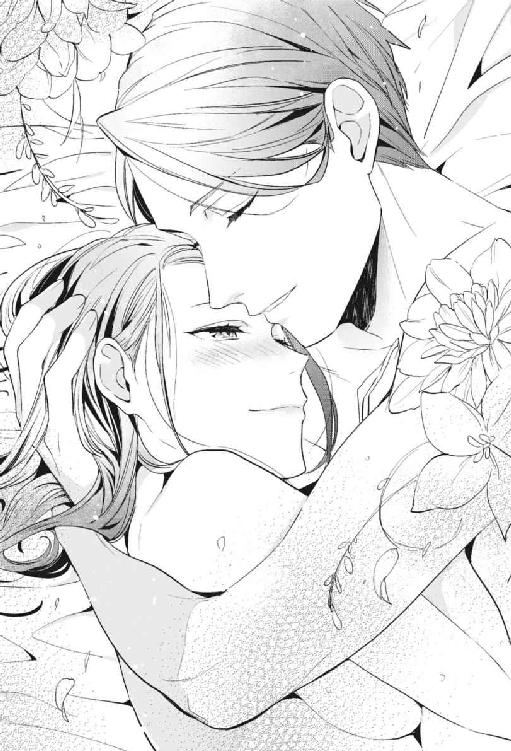
妙な感慨深さに見舞われながら、彼女の顔にもう一度目を移す。まだ肩で息をしつつ、黒江はふっと顔をほころばせた。普段のキリッと張り詰めた表情が噓みたいに、幸せそうに笑って。
「夢よりも素敵でした」
──そんな殺し文句を。
夢と現実の因果には、正直まだよくわからない部分もある。
だけど、何かが叶って、彼女は今ここにいるのだと。
「それはよかった」
そう思った。
ＥＮＤ
あとがき
〝異世界モノとはなんぞや......？〟というところから入り、先行作品をあれこれ調べ、〝ほう......！ こんな面白い世界が！ ほう......！〟と感心しつつ、いざ話のネタを考え始めて。結局〝自分らしい話を書こう！〟という結論になり、本作は出来上がりました。
このたびはお手に取っていただき、ありがとうございます！ 兎山もなかと申します。楽しんでいただけましたでしょうか......？ 貴重な時間を宛ててくださり、本当にありがとうございました。
まさかのムーンドロップス創刊に加えていただき、いつも以上に緊張しております。発売日前後はいつもソワソワ落ち着かないのです......。何冊目かで慣れるものなのでしょうか？ 慣れる気がしねぇな！ ということで、本作も新鮮な気持ちで送り出しました！
異世界モノというジャンルを書くのは初めてですが、ネタ自体は前々から書いてみたかったネタです。夢の中の世界と現実がリンクしていて、現実で何か事件が起きれば夢に影響し、夢で行動を起こせば現実が変わる。そんな二重生活に翻弄されながら、問題に逞しく立ち向かっていくヒロインを描きたいと思っていました。〝そういえば夢の中って異世界だな〟と思い立ってからは、自分の描きたい不思議な世界を楽しく書くことができました。
現実のオフィスラブ半分、異世界ファンタジー半分のこの物語。夢の中が癒しとして映るように、現実パートではできる限り主人公・奈ノ花を追い込み、過剰なくらいに職場のつらさを描きました。ここまで露骨な職場いじめは現実にはなかなか無いかもしれませんが、生活していれば多かれ少なかれ、奈ノ花のようにやるせない思いをする場面があるのかなと思います。そんな中で決して腐らず、自分の中に正義を持って進む女性が描けたらいいなと思いました。そしてそんな女性には良いことがいっぱい起こって報われてほしい！ ということで、和久さんとの恋愛パートを書いています（笑）。少しでも何か伝わるものがありますように！
今回イラストを担当くださった涼河マコト先生は、現実と異世界が入り混じるこの物語を丁寧に描いてくださいました！ 豪奢なドレス姿にビジネスバッグを持ったヒロインはなかなかいないのではないかと思います（笑）。また服装だけでなく、人物の特徴や思いも汲んでくださって、クロエとグレンの顔つきにもそれが出ていて、私の中でも登場人物たちがまた一段リアルになりました。そして触れずにいられないのが口絵のエロス......！ 裸の質感とグレンのぞっこんな攻め方に大変萌えました！ 涼河先生ありがとうございました！
そして、今回創刊ということでいろんな苦労があった中、根気強く対応くださった担当様。直接のやり取りはなくとも、本作にお力添えいただいた皆様。本当にありがとうございました！
最後にここまで読んでくださったあなた様に最大級の感謝を込めて、ありがとうございました！
またどこかでお目にかかれますように！
兎山もなか
Story
兎山もなか
Toyama Monaka
関西在住。平成生まれの平日会社員。
2015年に第９回らぶドロップス恋愛小説コンテストで最優秀賞をいただきデビュー。
TL小説、漫画原作のほか、ライト文芸で活動しています。
Twitter：@MtRabbitxxx
Illustration
涼河マコト
Suzukawa Makoto
普段表情に出さない（出せない）不器用な黒江がたまらなく愛しいです!!
夢の中で会いたい人に会える、そんな素敵なストーリーの絵を描かせて頂けてとても嬉しいです。
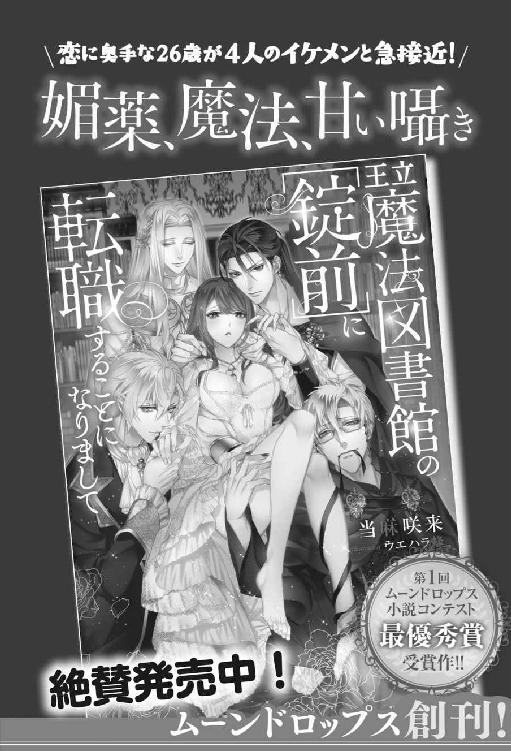
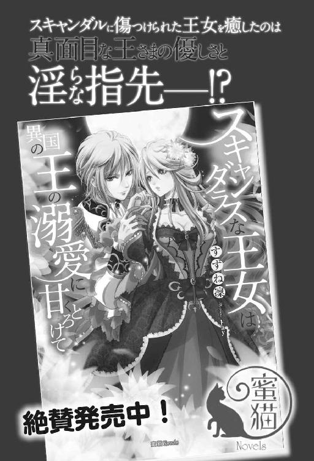
異世界で愛され姫になったら現実が変わりはじめました。［電子書籍版］
発行日 ２０１７年８月１日 発行
著 者 兎山もなか
デザイン 百足屋ユウコ＋豊田知嘉（ムシカゴグラフィクス）
発行者 後藤明信
発行所 株式会社竹書房
〒１０２－００７２
東京都千代田区飯田橋２－７－３
ＴＥＬ ０３－３２６４－１５７６
ＵＲＬ http://www.takeshobo.co.jp
データ加工 株式会社暁印刷
Monaka Toyama 2017
本書の一部あるいは全部を著作権者および株式会社竹書房に無断で複写・複製すること、および放送・上演・公衆送信（ホームページ上への掲載を含む）などは、法律で認められた場合を除き著作権の侵害となります。